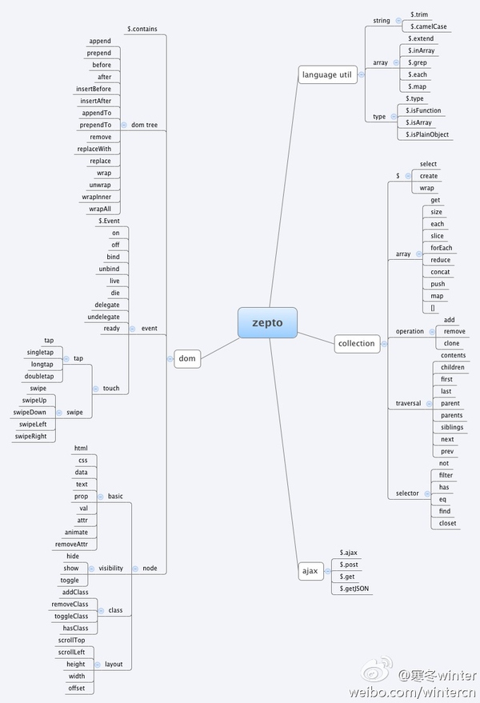
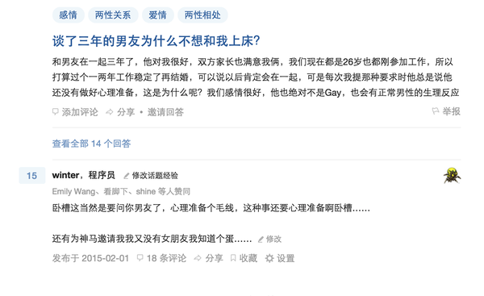
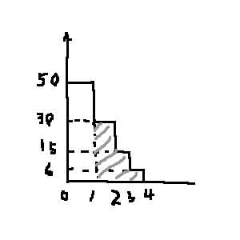
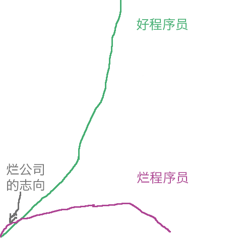
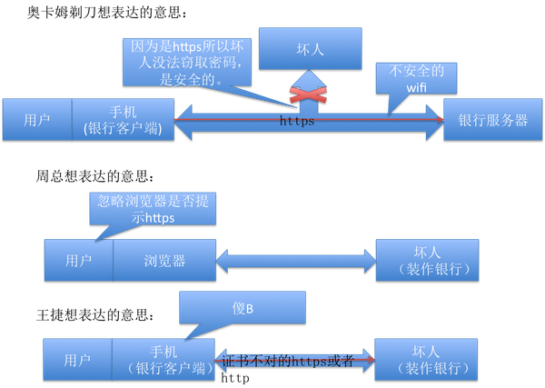
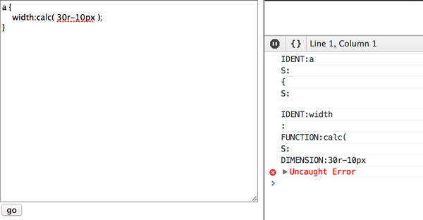
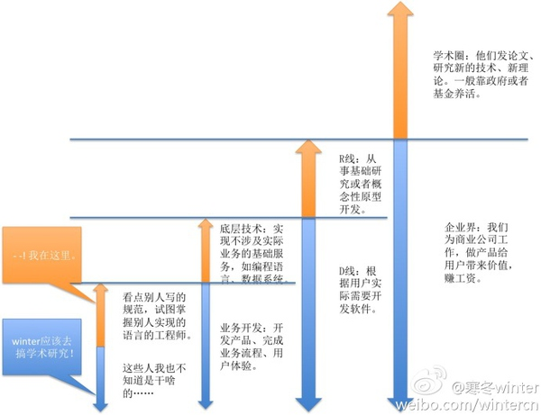

本文所有内容来自知乎，仅作为个人收藏,不用于任何商业行为。
大多数编译原理书前100页的内容，说明大学听了一半左右的编译原理课，通俗地说，写了这个只能证明你不是个棒槌。
所以其实你更应该关心不会tokenizer和parser是什么水平。 编辑于 2015-05-29
王垠到底对 winter 做了什么？
你可以理解为是路边看到一坨**，忍不住想去一脚踩爆它的心态。（虽然我知道这么做无聊而且会沾一脚）
想了想，可能还有一点觉得他的粉丝很可怜的，想让他们停止吃**的心态吧，虽然我知道"然而没卵用"。
回到题主的问题，要问做了什么，那就是“他是**，还碰巧被我看到了”，这样的事情，简直无法被饶恕。 编辑于 2015-05-27
为什么公司宁愿高价招新员工，也不愿给老员工涨薪？
最大静摩擦力大于滑动摩擦力。 编辑于 2015-05-27
不吃葱花党和非不吃葱花党如何在吃葱花这个问题上互相尊重？
奈何桥边，孟婆递过汤来，说，喝了吧，忘却前世种种，我望了望身后的你，笑笑，说，这碗先给她吧，我的不要放葱花。 发布于 2015-05-27
为什么有一些家境学历长相不错的城里姑娘要嫁给凤凰男？
你们有些同志啊，动不动就想搞分裂，总想要把农民家庭成长起来的同志给划出来，这些思想是要不得的！
跟老一辈的生活习惯冲突问题，是男同志应该站出来解决的，这个时候男同志如果默不作声，两边都不得罪，做老好人，一定会让家庭问题更加严重。
这个现在排第一的云舒同志说得好啊，我们阿里巴巴怎么会洗脑呢，客户第一、团队合作、拥抱变化、诚信、激情、敬业的价值观，本来就是我们认同的东西嘛，比如说这个诚信和敬业，在我们社会主义的价值观"富强、民主、文明、和谐，自由、平等、公正、法治，爱国、敬业、诚信、友善"里也是有的嘛。 发布于 2015-05-26
穆斯林和非穆斯林如何在吃猪肉这个问题上互相尊重？
不吃葱花的我，特别迷茫，特别无助，在人群中，甚至没人注意到我的习惯，甚至知乎不会有"不吃葱花党和非不吃葱花党如何在吃葱花这个问题上互相尊重？"这样的问题。
虽然苦闷，但是我想，这是我对这个社会稳定做出的贡献了吧。
-------------------------------
这评论区已经没法看了…… 豆芽葱姜蒜醋香菜豆腐脑大肠一直吃到屎…… 看来猪肉问题不是什么核心问题啊。 编辑于 2015-05-27
如何将一个已经上线的项目前端部分平滑过渡至组件化和工程化？
架构的基本手段，切分以控制变化的影响范围，在切面上用测试用例保证隔离，先从大块入手，如垂直按功能模块切，或者按调用关系分层切，配合团队规范、code review和单元测试等手段，把架构的概念和原则深入团队人心。
我不太认同模块化或者工程化这样的讲法。架构设计和重构都要有明确的目标和解决的问题，也有很多方法，模块化是手段之一。而工程化，其实概念很奇怪，我们工程师整个做的事情就是工程，虽然水平不同有好有坏，但是都是工程，不需要工程"化"。 编辑于 2015-05-26
JavaScript算是严格意义上的编程语言吗？
其实算不算编程语言有何所谓，人家要的无非是鄙视你，你今天驳倒了这条，明天前辈还有别的话可说，你反驳得完么？所以，以我多年的经验，每逢这种时候，你要做的非常简单：
跪下。 发布于 2015-05-26
阿里巴巴是不是对知乎发起全员公关？
快得了吧，这地方公关部在这地方连个账号都没有，要是真有我这么好的员工当然会天天去点赞跪舔公司了，你们看我盯着点谁的赞了？ 发布于 2015-05-25
如何评价「男人最无能为力的事就是在最没有能力的年纪，碰见了最想照顾一生的姑娘」？
最无能为力的事情是看不惯别人的代码，还不敢重构。
姑娘什么的，怎样都好啦。 编辑于 2015-05-25
如何看待马伯庸对《刺客聂隐娘》的评价被影评人批评？
没想到厨师根本没想把味道做好吃，你看这盘码的整整齐齐，蕴含着巴特洛式造型的深意，又集成了毕加索的美学观念，打造了前所未有的一道名菜。 发布于 2015-05-23
「谁家户口往上翻三代不是农村人」的言下之意是什么？
这句话说得不对，我国是从半殖民地半封建国家经过革命成为社会主义国家的，所以我们祖上三代，肯定既有农民阶级，又有工人阶级。
但是其实我觉得这不重要，新中国的国徽就是由麦穗和齿轮组成的，在新中国，工人和农民的后代应该联合起来，努力建设我们的国家，为共产主义奋斗。 编辑于 2015-05-22
如何评价《谷歌工程师：发誓修复Chrome浏览器内存泄露问题》？
# 发布于 2015-05-20
为什么说百度和腾讯是产生流量，阿里是消耗流量?
百度搜索完了链接到各种网站，腾讯朋友圈发出来各种养生鸡汤哲理链接，只有阿里，只要用户进来了，就逛逛逛付钱付钱，不出去了。从这个角度看，这话也有几分道理。 发布于 2015-05-20
使用盗版操作系统的人有资格谈版权么？
你吃完屎，再以自身经历警告世人更有说服力。 发布于 2015-05-19
为什么java系的高手没有像winter、陈硕、赵劼这么活跃？
在赚钱。 发布于 2015-05-19
请教一下LeetCode一道题的Runtime分布反常的问题?
十有八九Allocator写的出了问题。 发布于 2015-05-18
请问国内的互联网公司中哪些公司的文化是程序员们最喜欢的？比如非常尊重工程师的地位等?
啊 那当然是客户第一团队合作拥抱变化诚信激情敬业了 ：）
还有就是讲道理，准确的数据，严谨的逻辑，规范的民主，负责任的独裁 编辑于 2015-05-15
谈谈写程序对搜索的依赖，怎么治？
说明你写的程序太简单了 发布于 2015-05-14
女孩子必学的是什么？
男女平等。
请关注中华男德教育的微博 编辑于 2015-05-13
怎样可以加到温兆伦3人的微信？
提示：四万姐 发布于 2015-05-12
为什么写CSS越写到最后越恶心，而Javascript，写到最后，给人却很顺畅的感觉？
我觉得都是越写越恶心啊，难道不应该问为什么之前先问是不是么？ 发布于 2015-05-11
「有好想法就差程序员了」时，应该找一个程序员还是变成程序员？
市场、产品经理、UED、运营、测试、运维居然都有了只差个程序员了？那好办啊，用你搞定其它人的办法搞定程序员就行！ 发布于 2015-05-11
你有没有与巨大的机遇擦身而过？你是怎么调节自己的心理状态的？
我听说bitcoin的时候它才10美元一个，我本来想买几千块钱的，但是后来发现支付渠道不畅，就算了。 发布于 2015-05-08
如何说服产品经理放弃对低版本浏览器的兼容？
1.谁给你发工资你听谁的，产品可以说做，你也可以说不做，关键看你老板支持谁。
2.不是谁都可以说服的，不信你说服女神嫁给我？
3.兼容不兼容，得有个依据，自己不想统计调研，不如就随便找个大公司的浏览器分级参考。 发布于 2015-05-08
错过校招的高水平应届程序员有什么好去处？
一是各个公司都有补招
二是错过太久了，应届生可以走社招通道 发布于 2015-05-08
为什么微博上对王麟骂声一片，在知乎却很多人叫「女神」？
本来不知道王麟是谁，看到此题以后特意搜了一下，原来是唱伤不起的啊，我觉得好厉害啊，我挺喜欢啊，照片也挺好看的啊，而且我觉得我判断力挺好的啊，特别是文艺方面的，比如小说我就喜欢《凡人修仙传》。
不过王麟在知乎混的也不咋地，赞还没我多呢，哼！ 编辑于 2015-05-06
还没入职，得罪了阿里hrg，对以后加薪升职会有影响吗？
你听说过什么叫拥抱变化么，等你入职了HRG是不是ta还不一定呢。 发布于 2015-05-06
如何向父母解释前端开发不是一种低级的工作？
等等，到底有什么区别？我也想知道…… 发布于 2015-05-06
如何评价马佳佳在 TEDxChongqing 的演讲《绝望的大学生》？
讲故事要一半真的一半假的。
全是真的，故事就无趣了。全是假的，故事就没有共鸣了。 发布于 2015-05-06
好的移动开发主管是如何带团队的？新主管容易犯哪些错？
态度没摆对：
1.你要解决的不是加班问题，而是工作效率问题和需求优先级问题，好的团队有人人有ownership，业绩目标清楚明确，加班不加班不归你说了算，也不归公司说了算，每个人自己有判断。
2.分享是手段，成长才是目标。一周一次分享，手段都不如，只是个形式。
3.会议短也只是形式，沟通效率高，工具完善，工作模式先进，大部分问题可以像37signals的书里写的一样解决掉，会议自然少了短了。不配合其他举措，刻意减少会议只会导致沟通不充分，搞不好要出大问题。 发布于 2015-05-05
你一个人吃火锅/烧烤/自助餐的经历是怎样的？尴尬吗？
一个人去喜来登自助，接一杯可乐，盛一碗粥，放点肉松榨菜，安静地在角落里喝完，然后背上包走人。 发布于 2015-05-05
好的前端主管是如何带队的？
我肯定不是什么好主管，但我知道怎么做得不坏，一是招对人，二是别添乱。
其实除了这两条，你还是可以做一个正常团队成员做的事的：做做产品、切切图、写点特效、搞搞基础架构、出馊主意忽悠别人（俗称影响力）、帮助团队成员成长…… 发布于 2015-05-05
我有一个很好的HTML5游戏创意,怎么合作?
1.用钱
2.你的创意不值钱 发布于 2015-05-02
知乎大 V 是如何认识其他大 V 的？认识之后社交关系是怎样的？
实名反对 WhiteHeart Li ，我认为知乎不是粉丝本位，而是文学网站，粉丝多确实有用，但是不是关键，关键是不管你内容是什么，只要你文字写的认(gou)真(chang)，再加上一点点色彩，不论是有趣、伤感还是专业，赞哗哗的来，至于你写的对错？谁管你！
话说有点跑题了，想了想题主的问题忽然觉得伤感，我根本不认识知乎的什么大V啊……不过最近被莫名其妙地拉进好几个知乎的群，里面有好多耳熟能详的名字，感觉十分高大上的样子，看他们之间也很熟，估计都是这么认识的吧。 编辑于 2015-05-02
来自农村家境不好的大学生该如何处理感情？
劝楼主两句：
一，不要自卑，姑娘要的幸福你完全给得了，不要天天把出身农村挂在嘴边。
二，面对现实，她根本没看上你。 发布于 2015-05-01
为何苹果不着急？
主要是iPhone每年都被数十国产手机品牌各自打倒一次，苹果已经习惯了。 发布于 2015-04-30
能用一种语言独立完成算法导论中 90% 以上的算法属于什么水平？
算法入门，可以学一门专门的算法吃饭了。
编程能力应可达到中上等，配合特定方向应用开发能力（如前端、Android、iOS、.net、Java等）也可以吃饭了。
所以正面回答楼主：
如果不搭配其它能力，吃不上饭。
随便补齐一些其它能力，找份20k水准的工作应该不难。 发布于 2015-04-30
如何看待不到40M的wps和1G多的office？
Office深度用户表示，Office提供的功能里，99%是普通用户绝对用不到的，WPS大概提供了普通用户喜爱的2%-3%的功能吧，我属于那种能用到5%的用户，所以不得不忍受Office高昂的价格（虽然现在用的这版是朋友送的）和庞大的体积。 发布于 2015-04-29
如何说话让人觉得专业、可信？
一是逻辑关系清晰，并列、递进等关系表达明确
二是引用来源清楚、权威
三是观点明确具体，不含糊
其实说到底，就是要真的做到专业和准备充分才可信。表达技巧作用不大，所谓眼神、气场之类，是装不来的。 发布于 2015-04-29
为什么设计师不喜欢被称作美工？
跟这俩东西对应的称呼是设计狮。 发布于 2015-04-29
设存在两种解决同一问题的算法A和B，A算法的所有性能有没有可能都好于B算法？
当然有，只不过这样B算法就不会广泛流传了。 发布于 2015-04-27
大话设计模式一书中第2章里的策略模式与简单工厂模式结合的例子和前边那个简单工厂模式的例子有本质区别吗?
首先，没细看过大话第二章，仅从GoF的角度回答一下。
策略模式是用来替换算法的，工厂相关模式（虽然我一直不明白简单工厂是个什么鬼）是用来在高层次抽象环境里创建对象用的。
不要扯什么添加新功能需要改哪些代码的事，这是基本功，设计模式不解决这么基础的问题。 发布于 2015-04-22
写代码一遍就成功是怎么一种体验？
现实里你找个足够稳固的底层环境都很难。
除了写HTML，我还没遇到过这种情况。 发布于 2015-04-22
技术人员在工作中遇到的TOP3问题是什么？
1.在我这是好的啊
2.妈蛋需求又改了
3.先搞个临时方案，以后再优化 发布于 2015-04-21
在知乎看到很多优秀的女孩，可是生活中几乎遇不到怎么办？
以我关注了66人关注者4万多的情况为例，
一个跟鄙人关注喜好类似的猥琐男，只要知乎有那么三五十个女神，就觉得满时间线都是女神了。
而一个跟鄙人影响力接近的女神，有数万死屌丝每天视奸无数遍，搭理你的可能性微乎其微。 编辑于 2015-04-21
知乎用户「winter」是怎么掌握如此多的知识的？
有些知识，只要多看权威资料就可以了。
有些知识，非下苦功不可。
有些知识，刷刷微博多看新闻即可。
有些知识，只要你备着的年头够多，自然就想明白。（哪里不对） 发布于 2015-04-20
面对令人气愤的评论，应该如何放平心态？
1.哔~不是你生的，你没义务帮他们
2.哔~太多，你救不过来
3.真心想帮哔~，就多写点科普的东西，慢慢努力，对喷并不能改变他们，只会改变你，改变成什么样子，你懂得。
4.学会与哔~共处，大便对你来说又臭又脏，但是却可以用来生产沼气发电，农民伯伯还能用它们施肥种出香喷喷的稻米，要向他们学习。 发布于 2015-04-20
如何高效地阅读 jQuery 源码？
不用谢我。
但是说实话，读了就读了，没啥意思，其中任何一个方法，合格的前端工程师应该能在30分钟内搞定。 发布于 2015-04-20
美国签证说看望男朋友被拒签，怎么办？
这么说：
我家只有我一个孩子，我父母虽然万贯家财良田广厦，但是身体不好，特别希望我找个男人入赘我家，我那男人身在异乡思念祖国，实在耐不住离别之苦，求我去看他，我本来劝他专心学业希望他早日学成归国报效祖国也好与我团聚，但一时不忍，又怕他在外面勾搭野女人，所以打算去看看。
此外，听说美国龙虾不错东西便宜，我也打算顺道购物游玩一番。 发布于 2015-04-20
如何看待搜狗输入法以不中立的方式将流量导入搜狗搜索？
你装的时候人家也没说中立。 发布于 2015-04-18
如何看待被腾讯HR无理由未发实习offer？
“HR无理由拒掉”，不一定是HR拒掉，一定不是无理由拒掉。 发布于 2015-04-17
Clojure ClojureScript 能不能组合成统一前后端的语言?
我不知道你们听没听说过，VB和VBScript这俩东西…… 发布于 2015-04-17
如何评价 @左耳朵耗子 关于建设团队的一条微博？
看了大家的答案，我觉得没在点子上。作为团队leader，要解决的是加班问题，而不是解决加班现象。
KPI设定为不准加班，并且加入个人成长要求，我认为是正确的，但是如果没有同时的效率保证和结果保证，那就是坑队友坑老板了。我个人给团队和自己定KPI的习惯是以结果为主，过程占少点，鼓励大家通过合理安排工作而不是加班解决问题。对我来说：不加班解决问题>加班解决问题>不解决问题。
所以要评价耗子叔团队的具体情况，我觉得关键是两个点：一是真实的业绩，二是团队调整的真正原因（阿里团队调整挺频繁，拥抱变化，你懂的……）。
耗子叔自己的陈述中没有提供太多细节，唯一能用于判断的只有那位匿名用户所说：
事实上呢？耗子团队参加的两个人在不加班的情况下不但按时完成了自己的模块，而且产生的bug数只占了很少一部分。以及不知道是否知道内情的云舒说：
在一个习惯邋里邋遢的it文化下，怎么让办公室香一点呢？于是我每天撒一点香水。结果你猜怎么着，才过半个月，德国的航班在法国坠毁了。
假如真如匿名用户所说，耗子叔团队产出没问题，而团队调整原因如果还真是这个的话，那真是这个部门的悲哀。 编辑于 2015-04-17
什么是日常系和废萌系动漫？日常系和废萌系动漫是不是太泛滥？为什么？
《叛逆的鲁鲁修》龙傲天
《死亡笔记》中二爆表
《魔法少女小圆》就怎么虐怎么来
《EVA》各种挖坑不填
题主这种深度法真是让人担忧啊，是想置《德鲁亚加之塔》 《热带雨林的爆笑生活》 《无敌幸运星》这等真正有深度的动画于何处？ 发布于 2015-04-17
如何看待公司去台湾开年会不带上已经提离职的员工的行为？
公司有省钱的动机是肯定啦，但我总觉得题主把年会看做福利也怪怪的，虽说带有一定游玩性质，年会说到底也是开会，跟纯outing和team building不一样啊，虽说理论上是全体大会，但是都提了离职了还非要去开最后一次会……也蛮拼的…… 发布于 2015-04-17
这种水平，距离阿里前端还有多远？
刚好卡在线上。 发布于 2015-04-16
在 3、4G 移动网络的普及下，jQuery 和 zepto 哪个选择更合适？
你们有多少人知道它俩的API有啥区别的啊……
少于5个就用zepto吧。 发布于 2015-04-16
为什么会有码农控？
人家喜欢的是戴眼镜瘦瘦的穿法兰绒衬衫脸好看话少对女朋友百依百顺收入稳定顾家会修电脑还有上进心的那种码农啊！
不是天天加班脸都洗不干净头发黏在一起胡子没刮三十不到就没几根头发了写起代码来跟个傻X似的姑娘的消息都不回挣不了多少钱这辈子晋升无望还自我感觉良好没事跟老板吵一架丢工作面试各种不过光知道上网吹水的我们啊！ 编辑于 2015-04-16
微信开发者文档存在哪些问题？
我觉得不是文档写的烂，而是没有长期维护，导致过时。 发布于 2015-04-16
阿里和微信为什么不合作？
合作当然是有的，不同部门心态不一样，以前就发生过QQ浏览器更新版本导致淘宝触屏版首页挂掉（其实是他们踩了我们埋的坑），然后两边半夜一起排查bug的事。
与其希望合作，不如希望两边开放一点，两家合作了也不过是变成个更大的块头，开放了对互联网都有好处。 发布于 2015-04-16
大学穆斯林同学认为「反对女穆斯林戴头巾」涉嫌歧视，发起请非信教者志愿戴头巾一天的活动，是否应该参加？
不如来支持下穿海盗服。RAmen! 发布于 2015-04-15
为什么有些技术大牛爱吵架？
虽然应该说一句，知乎惯例问为什么之前应该先问是不是。
不过我确实觉得技术大牛和吵架两者之间有关联。
我最讨厌技术大牛，有大牛就有粉丝，有粉丝就没有真理。
我希望粉丝能变成有判断力，会独立思考的“人”，“人”多了，大牛也就成了普通的“人”。大家都成了“人”，有些架就吵不起来，周围都是“人”，有些架就不敢吵。
我现在不想吵了，毕竟双方都有粉丝，吵来吵去逻辑复杂了旁人也辩不清是非，想让伪专家不好过，最好的办法莫过于好好科普，终有一日让他们无处藏身。 编辑于 2015-04-14
国内税后年收入十万以上的程序员是什么样子呢？他们都会些什么？
应聘的时候拼死拼活，练算法学数据结构，刷ACM参与各种学校项目，混论坛，读标准，学习C++、JS、C#各种流行语言，毕业了也就拿这个数。
招聘的时候，能写个比冒泡高级的排序，就得给这个数了…… 发布于 2015-04-14
好学上进的大学生有机会和不如自己很多的女生发生关系，会不会降低自己的上进心？
晓美焰和唐缺的答案有一定道理，男性的上进心和智慧存在于精子中不假，但是他们没有给出很好的解决方案，其实，有一种方法，不但不会影响你的上进心和智慧，还能增加上进心和智慧。当然，不能是和这个不如你很多的女生……而是和……而且你必须是……的一方。
编辑于 2015-04-14
跟女生第一次吃饭，男生团购是不是会显得很low？
我觉得我们必须把问题切分的更细：
团购
|-团购代金券
|-团购菜品
|-团购套餐
|-团购自助餐
然后我提出一个观点，团购行为本身并不会导致坏印象，导致坏印象的是团购带来的种种限制：
1.买单的时候显得low：你要拿出手机给服务员抄号，那种多张代金券的，还得一张一张买，买完补钱，这时候远远不如扔一张黑卡，说没密码显得帅气。
2.菜品限制：很多团购是无法点菜的，更有甚者，一些饭店团购的出品是特意制作的低质量菜品，这会导致菜品不符合姑娘口味等问题发生。
3.暴露了穷X本质：团购一定是优惠的，所以选择团购几乎一定是节俭考虑，选择团购的你已经不可能是不在乎钱的土豪。
结语，虽然团购有诸多问题，但是多半是面子上的，如果你确定想约的女生不在意这些，那可能只需解决口味问题就够了。其实比起团购low不low来，患得患失的心态更糟糕。 发布于 2015-04-13
女友总和她的追求者保持紧密联系，怎么办？
核心是骗你。 发布于 2015-04-12
有关C++的一道题目怎么解决？
首先，你要正确区分C++和C语言。
其次，好好听课。
这样你就能做好作业了。 发布于 2015-04-12
为什么一个做淘宝店铺装修的公司说 web 前端是低级的？
因为有技术含量的活都被我们做了。 发布于 2015-04-10
为什么「直男癌」一词在知乎上会引起反对？这个词有广泛侮辱性吗？
直男癌这个词，就像"傻X"一样，它本身就是一种形容词衍生的名词语义，所以谈不上侮辱哪个群体。
但是因为其中包含直男两个字，表意上又真有一定的相关性，所以不免引起大家的联想。
譬如雷峰塔如果不是镇压白娘娘，而是存放劳动用具的，又把峰改作锋字，那你就很难跟那位圆脸的爱拍照解放军叔叔撇清干系。鲁迅先生假如说想要雷锋塔倒掉，那么雷锋叔叔肯定不高兴。 发布于 2015-04-08
知乎诸多非官方线下活动哪个能真正召开？
现在的年轻人真是大惊小怪，搞个版聚有什么难得，我看都能成。 发布于 2015-04-08
是否所有的循环都能用递归代替？
是。
while和for只是写法上的区别。 发布于 2015-04-07
样式（presentation）和内容（content）分别指什么？总能分离吗？
我觉得这个问题适合到IG邮件组去讨论，在知乎讨论这个没意义啊。
另外如果题主观点很明确，建议题主直接给出你的修改意见。 发布于 2015-04-07
对亲人的生老病死看得很淡，算冷血吗？
有句话叫“活着不孝，死了乱叫”。
有本事的把老人照顾好，眼泪和解决不了问题的关心是最廉价的东西。
——所以其实我是这个意思：趁着你妈身体好还能骂你的时候，做做样子让她开心开心呗？反正哭两声你又不会少块肉啊？如此低成本的讨麻麻开心的方法都不用，还敢到知乎来顶嘴这什么熊孩子！等到将来你照顾你妈的时候，还有得你受呢！ 编辑于 2015-04-06
男友不想戴套说如果怀孕堕胎会给我找最好的医院，还该信任他吗？
哈哈哈 你跳呀 你跳呀 我给你准备了最好的骨灰盒
——多年后，因为堕胎无法生育的你被他抛弃以跳楼相逼的时候他如是说 编辑于 2015-04-06
怎么评价阿里巴巴旗下网络平台售卖假货？
货从国内某些小厂生产出来，到卖家手里再经快递到你，没经过任何阿里巴巴的人，这假货怎么就是阿里巴巴卖给你的？
你在楼下农贸市场能买到多少假货，你就能在淘宝买到多少假货，你在镇里服装城能买到多少假货，你就能在天猫买到多少假货。阿里巴巴其实就是中国经济的一个缩影，你不能指望一家公司解决一个国家的问题。
阿里系产品只是把线下搬到了线上，归根结底阿里也只是一家公司，没权威的鉴定能力没工商权力也没行政处罚权力，对售假的商家最多也就是请出门去。比起你在线下购买毫无保障转身找不到人，在淘宝和天猫你至少已经有了评价权利和商家信誉可以参考，天猫最近也在更大力度提高准入门槛，这是看得见的努力。
我能保证，如果你能真正意义上从阿里巴巴集团买点什么，你绝对不会买到假货的，比如来阿里的淘小店买个淘公仔……假了我赔你。
PS.评论中那些拿天猫类比万达的，大商场里都是旗舰店啊，你找任何一家门店，到天猫去找对应的品牌旗舰店，也绝对不会买到假货啊！ 编辑于 2015-04-05
为什么很多人不建议使用驼峰命名法，有什么弊端么？
还有人建议把最重要的功能函数用一个$命名，以彰显其重要性和保障输入时shift键的使用频率呢。 编辑于 2015-04-04
对于非北京、非大 V 的知友而言，特地去北京参加「知乎盐 club」值得吗？
见个网友而已，何必这么认真，以前叫版主现在叫大V，以前论坛叫版聚现在整个高大上的名字盐什么的。 发布于 2015-04-03
一道阿里前端笔试题，求思路？
就是一堆相切圆，有三角内切圆，正方形内切圆和六边形内切圆三种排布法，大部分情况是六边形合适。
PS. 这题做面试还行，当笔试不太合适，笔试时间根本做不完，今天上午一边阅卷一边吐槽呢。 发布于 2015-04-03
和男朋友审美不同怎么办？
不是什么大事，你少照镜子不就好了。 发布于 2015-04-03
有哪些既有好风景，人又不会太多的旅游地？
github 发布于 2015-04-02
辜负一个人是一种怎样的感觉？
女神喜欢你，你还偏说自己是备胎。 发布于 2015-04-01
如何看待 程序员鼓励师这种职位？
程序员做的事情，是把事情想清楚，在将来没有体力劳动，都是脑力劳动，没有人不会写程序，大家都一样，也不需要什么鼓励。 发布于 2015-04-01
如何看待老板老拿期权激励员工，给的工资却很少？
最简单的道理，想多拿期权的人对公司看多，想多拿现金的人对公司看空。
老板拿股权激励员工，而工资却很少，说明老板对公司看空，老板都看空这公司，你懂的。 发布于 2015-03-27
发现追你的男生同时在追别人，怎么办？
别拿人当备胎了呗 发布于 2015-03-27
计算机相关专业的人，如何做一个好备胎?
你这犯了备胎的头等大忌讳：心急。我在另外的答案已经说了，备胎只在女神需要的时候出现，不能频繁打扰。
其实备胎关键在一个等字，备胎千日，用在一时。备胎的质量好坏，一看时间，就是备胎愿等女神多久，二看质量，就是备胎关键时刻能帮女神解决什么问题。短到几个月，长到一辈子，小到请吃饭，大到喜当爹，备胎跟备胎，差的太多了。
备胎需要让女神知道你在等她，其关键有二：一是必须保持单身，也不能有（女神之外的）暧昧对象，在双方共同的朋友圈里明确表示你只爱女神一个，但永远保持矜持和风度，不要直接对女神表白更不要骚扰女神，二是生日和年节有礼物送，礼物应当用心、贵重但不唐突，比如你送个有意义能带得出去的手链就不错，但送个钻戒女神肯定吓毛了。
题主的情况肯定是每天没话找话，女神当然烦你，不过不用怕，现在改正绝对来得及，开始按我说的做吧！ 发布于 2015-03-26
直男是否真的认不出女朋友换没换眼影？
不但能看出颜色，还能估计出rgb值，并且用gradient在浏览器中模拟，怕你们没面子才忍住不说的。 发布于 2015-03-26
女人的脚真的和性有关联吗？
这个……跟脚没关系吧，你把手放别人脸上，把胸放别人脸上，把腿放别人脸上，把哪放别人脸上都挺暧昧似乎…… 发布于 2015-03-24
单身程序狗解决了一个技术难题后没有妹子可以炫耀或夸一下自己怎么办？
放github上呗。
ps.github上放多了就能找到好工作，再找几个基友一起到知乎来互相吹捧，声称自己年薪百万，说多了别人就真信了，然后再卖萌求脱团，瞬间好多私信求勾搭的妹子。 发布于 2015-03-24
喜欢附近的一个女生，该怎么去追她？
年轻人，不是每个女孩都能被追到的，想想凤姐怎么能追到你？ 发布于 2015-03-22
前端面试中如何回答“谈谈浏览器兼容性”的问题？
面试问题的一种分类法，就是开放性问题和指向性问题。通常开放性问题更偏重于让应聘者展现自己，而指向性问题则是帮助面试官确认应聘者的实际水平。
宽泛的开放性问题一般来说是面试官希望找出你擅长的东西，比如我面试最常问的问题“你觉得前端哪部分知识最重要”，“你认为自己技术上最擅长的是什么”，“你知道jQuery的哪些API”，“你知道HTML的哪些属性”，“你知道CSS的哪些属性”。
这类问题，回答的思路有三种：
上者，把知识体系化整理（这需要充分准备），给面试官一张大图，再逐一细述你擅长的和面试官感兴趣的部分。
中者，以实际案例入手，展现你学习的深度，直接讲一段你在工作中遇到的问题，再分析技术上的方案。
下者，笼统问就笼统答，比如面试官问你“你觉得前端哪部分知识最重要”，就答“HTML、CSS和JS”，这通常会浪费一个展现你自己的机会。 编辑于 2015-03-22
女神说瘦到100斤以下就跟我交往，为什么要这么说？
我去这个我都看不下去了备胎梗都不想玩了，这时候标准答案明显是亲爱的不管你胖瘦我都愿意跟你在一起啊 发布于 2015-03-22
她用身体和温情让我甘愿做她的备胎。这到底是个什么样的女人，她心里面咋想的，我该怎么看待这个事情？
我去，你这不是备胎，是炮友啊！标题应该是"我好像爱上炮友了，怎么才能跟她结婚？" 发布于 2015-03-21
如果只能用一句话表白，你会怎么表白？
您好，请问，我能做你备胎吗（感觉哪里不对，逃 编辑于 2015-03-21
没有勇气去找喜欢的女孩怎么办？
那就当备胎呗，哈哈哈哈 发布于 2015-03-20
移动 WEB 如何适配千奇百怪的分辨率？
手机淘宝的flexible设计与实现 请看此文 发布于 2015-03-20
为什么现在很多同学不爱技术想做产品?
其实归根到底，还是loser心态。不了解的东西总有人觉得简单。
我举个例子吧，淘宝扫码购这个功能，让普通人去讲需求，大概也就会说出“扫完条码出来对应的商品”这一句话吧。但是产品经理如果这么提需求，就该被开除了。条码跟商品对应关系哪里来？如果找不到商品该怎么办？商品信息是哪个部门提供的？人家愿意不愿意提供这个数据？这些问题都要产品经理回答或者解决。 发布于 2015-03-20
MVVM模式中处理业务逻辑是应该在M中还是VM中？
假如你曾经写了一个MVC模式的UI，现在重构到MVVM模式，那么M应当是能够一行代码不改地迁移过来的。 发布于 2015-03-19
我该不该去追一个失恋，可是心还在前任那里的女生？
你想知道这种情况适不适合备胎我倒是可以回答你，该不该追的话……我实在没啥经验。 发布于 2015-03-19
莫名其妙被阿里拒绝，我应不应该低头认输？
1.面试是个苦差事，既然花了时间准备了问题跟你约了时间，每个面试官希望你通过的心情绝对不比你自己差，没人愿意无效劳动。
2.面试官和你学长，在向你传达的时候都有可能有一定失真，可能顾及你自尊心或者没太在意，当然也不排除有不够成熟的面试官，没在现场谁也不能断言。
3.来知乎讨要说法的行为，对你自己只有坏处，且不说阿里挂掉那么多人不太可能有时间一一跟大家沟通原因，万一面试官真过来把你怎么挂掉面试记录贴出来，你确定这是你想要的说法？ 编辑于 2015-03-19
如何高效地计算 2 亿多个 0 到 INT_MAX 随机数的平均值？
精度要求不高的情况下：
avg(k) = avg(k-1)*(k-1)/k + num[k]/k
可以保障不溢出 编辑于 2015-03-18
一个连 CSS 选择器都记不清楚的阿里巴巴终试官来面试我，说我“本科比研究生差”，被拒绝，怎么平衡？
既然被邀请了，我就说几句。
1.无从判断现场的情况，不排除面试官不专业的可能性，但是一般来说，少有应聘者能真正意识到自己的问题所在，面试官的现场反馈一般也不会包括面试结果背后的原因。
2.二面（终面）一般是团队leader，是比较资深的工程师，评价的点以热情、结果和技能为主，少有从知识点上卡掉人的。
3.一般来讲，我们真正"误杀"学生的情况下，比较懊悔的是面试官和招聘团队，反而能通过阿里面试的学生一般都不会太在意阿里这一份offer，毕竟同水准公司国内国外多不胜数。
4.面试是一件比较看缘分，但是又有统计性规律的事，比如刨除熟人因素，你让我再走校招面一次阿里，我没太大把握通过，但是你说我面FLAGBAT几家，一个offer都拿不到的可能性应该接近0。 编辑于 2015-03-18
爱了五年，等了五年，该怎么继续下去？
做备胎呢，要有备胎的样子，追女孩子呢，就要有追女孩子的样子，两种是不一样的。
备胎最优秀的品质是等，而且等的时候不露痕迹，却能让女神感到你时刻在身边，自己当然一定要保持单身目不斜视才行，女神有召积极响应，女神和女神的闺蜜朋友等等都要照顾周全，买单自不待言。逢年过节问候女神，间隔不能太久也不能频繁到女神反感或者有压力，生日自然要记得礼物当然得送。女神有男友了要保持风度，女神分手了要保持克制适时适度安慰。总之就是备胎得让女神感觉你肯定会在她身边不会离开，又不需要对你负责。
至于追女孩子嘛，我又没有女朋友我怎么知道。 发布于 2015-03-17
C 与 C++ 的真正区别在哪里？
这件事够写一本书了，打算给我多少稿费？
去看 The C++ Programming Language吧，比我不知道高到哪里去了，何必找我们这些知乎上的半桶水骗子？ 编辑于 2015-03-17
10L 瓶装水通过一个7L 瓶和3L 瓶平分成两瓶5L 水，有什么数学方法计算此类问题？
这是个算法题，搜索就行了 发布于 2015-03-17
淘宝手机客户端有多少页面是 Web 模式 (包括 HTML5) 的？
首页点进去的大部分是h5
搜索、详情、购物车下单等基础交易基本全native
微淘native为主h5辅助
发现里面的几个产品以native为主h5辅助
我的淘宝里面大部分是native 发布于 2015-03-17
阿里巴巴前端视频面试是怎样的？有什么需要注意的地方？
1.一般就看个脸聊几句，没啥。
2.建议准备好耳机，提前测试，保证网络通畅软件环境ok。
PS. 关于看脸的事情，技术岗位颜值不重要啦，HR比较喜欢搞视频，说是看表情什么的，我个人钟爱的是google doc 编辑于 2015-03-17
王垠为什么想要轻生？
各位大爷，王垠跟咱们，素昧平生，甚至我等某些人还对他有些看不惯。
他发了这个东西，除了他的亲友和专业人士，谁都没法帮他，最好的做法是保持沉默。
我们能做的事，是默默希望这一篇也只是延续王垠一贯的夸张风格，不要是认真的罢了，千万不要乱发邮件，除了添乱没有别的意义。 发布于 2015-03-15
题主一名文科汪，现在学校面临专业分流（预科生），能否选择计算机专业？文科学习是否太吃力？
世上没什么不可能的事，只看你是否付得起代价。 发布于 2015-03-15
昨天好好的妹子，今天态度突然恶劣，不理我。这是怎么回事？
1.选择多了就这样，排你前面的对她好一点，她就对你差一点。
2.前男友这种东西，她有多恨他，就有多爱他。
3.你要是不想当备胎，就同时考虑些别的姑娘。 发布于 2015-03-15
怎样玩上古卷轴5才好玩？
我只知道怎么玩不好玩：出门奔白马城，做基友会任务，然后刷恶魔之心，再到黑铁矿刷矿，一边刷矿一边磨锻造，最后锻造满了去做那个阿祖拉女神任务，可得好几颗心，锻造满了矿和心也差不多够了，造一套魔神装，一神。
然后满地图屠强盗刷钱，买草练炼金，二神。
女神任务拿黑星，买灵魂石+黑星，刷附魔，这个比较慢，坚持一下到三神。
三神以后会怎样，你懂的。 发布于 2015-03-15
成为顶尖的程序员需要学习武术吗？
想不到这个秘密还是被挖掘出来了，其实我这么牛x，是因为我十六岁那年在一个叫花子手里买了一本《辟邪剑谱》，练成之后我不但武功天下无敌，数据结构不需要学就全会了，操作系统底层原理如同直觉一般地掌握了。 发布于 2015-03-15
面试的时候如果被问到什么是图（数据结构），应该怎样回答？
一组互相关联的数据和它们的关联关系。 发布于 2015-03-14
能力没有别人强，能说别人的不好吗？
啊，老公，你这么快就结束了？
PS.说我歪楼的，我要解释一下，这是“能力没有别人强（废话根本就没有），却说别人不好，而且很合情合理”的场景。 编辑于 2015-03-14
p→q = 非p 或 q的逻辑涵义如何解读 ？
你早上出门买二斤包子，老板说因为你给钱，所以我卖给你，那你要么给钱，要么别吃包子。 编辑于 2015-03-13
编程语言鄙视链是怎样的？
javascript就写个特效，php、Java、C#就增删改查，OC就操作操作控件，C/C++就调些硬件功能。
大家都一样，不过我觉得特效比它们还都厉害一点呢。 发布于 2015-03-12
如何看待《HTML5 定稿：手机 App 三年内将彻底消失？》
个人看法：热情可嘉，见解有差。
没搞清楚web是什么，它是标准，不是技术，只有技术成熟，各公司达成一致的东西才会进入标准。
所以，web在能力上必然落后于native，native也不可能消失，native消失了，web到哪里去参考和发展新特性呢？ 发布于 2015-03-11
转型之路，求适合领域和技术发展路线图？
没听说职业发展按工资计划的 发布于 2015-03-10
如何评价女画师为百度所画的 logo 的受到知乎部分网民的批评？
支持女权观点，女性不应该被物化，应当享有正当社会权利无需讨论。
但是因为这个事情指责百度是一种非常恶劣恶心的行为，完全是欲加之罪。你可以要求别人接受你的观点，但是你不能要求他一定天天挂在嘴边来表达。我当然觉得女孩子可以在各行各业发挥自己价值这没错，但是你们不能说三八节这天全世界都必须只说女孩子可以在各行各业发挥自己价值这件事不能讨论晚饭吃什么。
关于这个logo，显而易见的是不管是百度还是画师都没有任何物化女性的意思，不管从什么角度看这个画表达的都是正面的意义，只是百度的立意确实不如谷歌。
我只能说这群苍蝇既愚蠢又无知，各位支持女权的人不应因为他们是"支持女权的苍蝇"就把它们划归到跟自己一个阵营。
为什么我的言辞如此激烈？今天的苍蝇，可能是明天的刽子手，文革时期专门画毛主席像的画师，因为画的侧面毛主席像只有一只眼，一只手（这不废话么，侧面像），被红卫兵扣了帽子迫害致死。明清两朝的文字狱自不待言。女权也好，gc主义也好，皇权也好，不过是一群暴徒披上的不同衣服。 编辑于 2015-03-10
CSS布局，为什么英文会撑破容器不会自动换行而中文不会？
word-break:break-all;可破 发布于 2015-03-10
男朋友一直和我强调他没钱是想表达什么？
周六跟一个土豪出去玩，土豪说他没钱，我问为啥，他说：“有一天我看到一个幼儿园，孩子们在玩耍旁边就有个水池，感觉看管不好就会掉下去，于是感觉心里很难受”。
我就问：“不对啊，你都资产过亿了你还资助不起一个幼儿园么？”
他说：“不，我可以买一个，但是中国还有千千万万个这样的幼儿园啊！”
然后就聊不下去了。 发布于 2015-03-09
MSRA和Hulu实习Offer哪个好点？
这有可比性么，当然MSRA。
但是ML组是什么鬼？ 发布于 2015-03-09
面试时面试官问：如何应对高强度的工作，怎样回答较合适？
我不介意加班处理有时效性的工作，但是编程不是重复劳动，想搞持续性、计划性加班还是请另请高明，理念不合没法一起工作。 发布于 2015-03-08
如果个人技能与如图所示的技能差不多，可以找到一份多少薪水的工作？
前端拆了这么多项好奇怪。
其实我看简历很少注意技能部分，空口无凭全靠自己说参考意义不大。
简历值钱不值钱，第一因素是上家公司，其次是毕业学校和竞赛成绩，然后是github和blog什么的，技能栏基本可以忽略。 发布于 2015-03-08
王垠会怎样度过他的一生？
民科最好的出路是回国找小地区政府合作，申请上那么十个八个专利，出本小学教材，强迫小学生学他nb闪闪的Yin语言，政府骗下来一笔经费，跟他乐呵呵地分了大家过上幸福快乐的生活。
但是他偏偏选了在美帝做个普通程序员，中文圈里秒杀中外数学家图灵奖得主的东西都不敢往自己英文博客上放，无非是怕他的美国同事把他当傻X。
我知道我知道，你们觉得20w美刀的水准挺不错，比你们强太多，出于对大牛的尊敬你们不喜欢听别人侮辱他，但是放眼中美华人圈，有这个水平的数不胜数，像他这么喷图灵奖得主每天自吹远超python之父什么的活宝就这么一个，假如你们稍微有点技术能力，比如把，有拿15w美刀的水平，就算知道王的技术比自己强，也会不齿这种民科的所做所为。
所以他会怎么度过一生？我觉得，会一直以双重身份活着吧，在国外，当一个还算比较优秀的普通软件工程师，英文博客中规中矩的分享些技术，不过闲暇之余，偶尔来中文圈子来上一篇劲爆的，逗你们开开心，对他来说，可能中文圈就像玩游戏一样吧，只不过NPC是真人。 编辑于 2015-03-06
年薪百万是种怎样的生活状态？
我知道你们肯定不信，但是我确实没百万啊……要办签证，刚开了工资证明呢。
其实个人资产用来改善生活，适度就行了，多余的钱投资到更有希望的事业中去，不要到处给宰人的宾馆、航空公司、传统汽车行业和奢侈品行业捐钱，这种庞氏骗局是人类进步的最大毒瘤，有钱多扔给互联网、生物科技。买点会员、正版软件、基因检测服务，绝对物超所值呢。 发布于 2015-03-06
北京25k的工作,是个怎样的水平？
好。
相当于我工作三年后的工资。
相当于阿里的A+水准学生（仅次于阿里星）。 发布于 2015-03-05
如何用 C++ 在 10 行内写出八皇后？
写不出八皇后…… 15k…… 现在真的钱好毛啊
不过说实话这玩意10行我也不知道咋写，但是二三十行很轻松吧 发布于 2015-03-05
有什么证据证明太阳上不能有生物生存？
显然FSM（飞天面条怪）大神在那里，因为它无处不在。
此外还有隐形粉色独角兽、车库喷火龙、罗素的茶壶等等飞面大神的朋友。 编辑于 2015-03-05
如何在朝九晚五的工作状态下找到女朋友？
妈蛋 看到这种问题我就来气，朝九晚五又不是朝九晚九一周六天，怎么就找不到女朋友了？你那个根本不存在的女朋友不也要上班么哪有时间搭理你？
矫情。 发布于 2015-03-05
阿里什么情况下需要的交叉面试？
A A+等级和阿里星（俗称A*） 发布于 2015-03-04
js闭包返回函数，该函数是全局的吗?（结题）
这种连返回函数和定义函数都分不清的无脑问题完全是浪费大家时间。 发布于 2015-03-04
到底什么是函数式编程思维？
对象和替换，都是人类从2岁以后就开始理解的自然概念，经过计算机学家和数学家的加工、规范化和思考，有了OOP和FP。两者其实不是矛盾的，这是两种从不同角度看待世界罢了。
其实数学家版的“替换”概念就是lambda演算啊！为啥大家都不好好讲lambda演算啊…… FP的思路不就是lambda演算的思路么。
OO把问题看做一个或者多个对象的行为和状态变迁，lambda演算则把问题看做从一个输入经过各种代换代换最后换成输出。
对象初始状态对应于输入
对象行为对应于lambda演算
对象最终状态对应于输出
不太一样的是，对象只有一个，lambda演算改的不是输入，而是根据输入得到一个新的输出。 编辑于 2015-03-03
杭州有哪些有质有料的活动？
1.在家刷知乎
2.在家玩游戏
3.在家写代码
4.在公司加班写代码
5.在公司食堂吃好吃的
暂时就这么多了。 发布于 2015-03-03
为什么知乎上很多人都是年薪百万，出国留学的？
其实我只是一个演员，你们开心就好，明早醒工砖。 发布于 2015-03-01
如何在「上等人」面前做到不卑不亢？
对他们这种人，首先你必须要主动出击，在气势上镇住他们，比如一起去星巴克喝咖啡，他们很熟练地点这个点那个的时候，你就问服务员，你们这最贵的是哪个？放心，可可碎片星冰乐也就三十八块，就算你倒霉当季有更贵的新品，也不会多几块钱。
另外，就是日常用品上，必须追求奢华，比如牙刷，买最贵的！枕头，买最贵的！床垫最贵的太贵买不起，可以买个最贵的床单啊！而且，跟这些高帅富、白富美说话的时候，可以有意无意的提起，多看郭敬明的小说你就知道怎么说了：
抱歉啦，早上用我的HX9352刷完牙出来，发现堵车了所以到晚了呢。
再有一点，也是我经验中最有效的，你跟他们说话的时候跪着，就这种压力就小了很多，有时候不知不觉他们的态度也会变得特别低三下四，反而变得有些局促不安：
快起来，你这是干什么。编辑于 2015-03-01有话好好说啊，别这样，让人看到不好。
为什么有的人在安静环境中恢复能量，有的人却在热闹的环境中恢复能量？
咦，你们都不需要能量块？ 发布于 2015-02-28
如何理解块级格式化上下文BFC(block formatting context)?
首先我觉得应该改改翻译，formatting在印刷业主要就是排版的意思，它只有在计算机行业，宾语是磁盘的时候才应该翻译成格式化。在css里面，应该取排版的原意。
另外我觉得谈BFC，一定要和IFC一起讲，类似的东西还有FFC、table以及Grid。
其实BFC不是知识点，它只是一个概念，这块知识应该是visual formatting，其实就是css的排版系统，如果你纠结于BFC这个概念，不去理解normal flow、block/inline level、block container、replaced element等等这些相关的概念，以及css排版的策略，你就永远没法真正理解BFC，你就永远只能死记硬背overflow不为visible就会触发BFC这样的话。 发布于 2015-02-28
这样的恋爱，还要坚持吗？
想追人家姑娘还傲娇，消息回得不及时思前想后跟个小媳妇似的，人家情人节都跟你一起过了，明白的给你机会呐，多想点办法见面，多打打电话，隔三差五送点东西，别总微信“在吗”，“早点睡”的这么屌丝还不如网恋呢 发布于 2015-02-28
猫和大鹅哪个战斗力强一些？
猫蛇大战 激烈！
你们没看过猫跟蛇战斗，就不会理解战斗中“百分百闪避”，“百分百命中”是一种什么样的逆天技能……
就大鹅的那敏捷度，认真的猫基本会是一回合咬断脖子的节奏，但是其实猫一般都会习惯性认怂，所以不太能打起来。 发布于 2015-02-28
css3/css4 这种命名是否错误？若是，正确的又是怎样，又该如何纠正？
这是一件神经病的事情。一开始CSS用的是版本号的概念，发展到CSS2.1，接下来为了配合html5，搞了个css3，这里的3还是版本号的概念。
不过接下来就开始蛋疼了，css工作组编出了一个“level”的概念，并且极其有创意地暗示了它可以接着版本号来数，一旦某一特性继承了css2.1，它上来就是level 3！
然后又有一些特性很赞地从level 3升级了，于是史上第一次出现了level 4的概念（之前只有1和3），很多小朋友就很聪明地又把level对应回了版本号，把它们称作css4。于是努力很久才升级到level 2的CSS Shapes哭晕在厕所啊！
好了，下面让我们来一起大声念一遍：
CSS Shapes level 1 和 CSS Shapes level 2 都属于 CSS3编辑于 2015-02-27
Selectors level 3 和 Selectors level 4 也都属于 CSS3
Selectors 没有 level 1 和 level 2 因为他继承了CSS2.1的特性
CSS Shapes 从 level 1 开始因为它没有继承了CSS2.1的特性
世界上没有css4
产品经理面试题——人人网的？
假设一个家庭，它生小孩的可能性是：
1/2 一个女孩
1/4 一个女孩一个男孩
1/8 一个女孩二个男孩
……
所以，男性人口增长的期望是无穷级数：
（n-1）/2^n，从1到正无穷项的和。
这个级数不是很好算，借助wolframalpha
sum (n-1)/2^n, n = 1 to infinity
答案是1
所以男女比例还是1:1
---------------------------------------------
PS. 其实吧，如果考虑到不论采用何种策略，你都只能采取生一胎这种行动，而生一胎这件事，只是在人口数量上加上一个男女可能性各半的随机数，那么人口数量比例肯定是1:1啊……
为啥要算级数呢，我觉得其实好的方法是不需要动脑的啊……
又PS. 马权的答案简直没法看了…… 虽然1:1这个结论对了，但是跟楼主很一致地好像意思是不允许跨年生育啊？ 编辑于 2015-02-27
如何给程序员男票准备贴心的生日礼物?
4k可以买键盘了啊
有机械键盘可以买HHKB啊……
4k好厉害啊，再添2k可以买慕斯凯奇凝胶枕头了，程序员颈椎容易不好，要买个好点的枕头，嗯……
嘛，觉得贵的话可以可以考虑买一对记忆棉枕头，其实个人感觉凝胶枕跟记忆棉区别不是很大，也挺实用的。 编辑于 2015-02-26
排序算法中的“稳定”和“不稳定”，有没有一个结论性的因素导致该算法稳定或不稳定？
算法时间复杂度比较科学的度量方式就是面对大量随机输入，排序算法所花费的时间分布曲线，通常我们研究这个分布的平均值（时间复杂度），以及分布的区间（最好和最坏时间复杂度）。而稳定不稳定，是一种感性描述，分布区间越小、在分布区间内均值附近概率越大，就说这个算法越稳定。
理解错题意了，请忽略此答案。 编辑于 2015-02-23
恋爱性格太高冷，怎么办？
你也给自己起了网名叫winter？改名叫summer就好了。 发布于 2015-02-23
程序员如何追妹子？
1.早晚问好，发什么都赞，不要点赞要搭讪直接夸
2.没话题的时候多讲讲自己，慢慢她也会让你了解她
3.多打电话约见面，少发消息
4.我没女朋友以上都是瞎编的
5.但我特别特别爱回答此类问题！！！（感谢评论中 编辑于 2015-02-23
请用最文艺的方式解释下 pthread_cond_timedwait(&♀ ，&heart_mutex，&life_time_wait); ？
没妹子、心塞、注孤生。 发布于 2015-02-22
我设计的 UI 为想追求 Material Design，如何？
1.UI说不上太好，以我前端的视角来看，字体字号都有问题，不过以非专业作品来要求，已经不错了。
2.如果做设计说服不了外行，就不要做了。 发布于 2015-02-22
我一个外地屌丝该不该找北京姑娘？
1.你是独立的人，她理论上也应该是，但是婚姻大事自己都做不了主，还不如娶她妈。
2.想要啥东西的话，最好自己努力买。
3.考量对方经济问题是双方的正当权利，不满意就赶紧分，别拖着。
4.结婚不是俩人看对眼了领个证就完了，衣食住行都要花钱，比如房子嘛、租也好、买也好总得有个方案，也得俩人能做得到能接受得了，像我一样没钱的话，就算了。 编辑于 2015-02-22
js一个函数运行结束后，关于函数是等待全部销毁还是仅仅销毁不需要的？
任何JavaScript的实现都可以自由决策此事。 发布于 2015-02-22
长期被人摸头是否会导致谢顶？
植发技术哪家强? - 头发
邀请人回答这个问题吧 哈哈哈 发布于 2015-02-20
非Web开发有哪些有趣的简单的轮子可以造？
特别有时间的话：
1.弄点算法题刷刷，锻炼思维能力，面试也有用
2.写写编译器也不错，可以令你对编程语言更了解
3.UI系统，从头到尾把控件、消息之类的搭一遍，多参考些不同的UI系统思路，相当有益
4.操作系统，比较费时间，照着"七天实现一个操作系统"这类书，写一遍可以增进理解
5.协议栈，TCP、IP、UDP、HTTP、TLS，都可以写来练习，基本上是照本宣科，不费脑筋，但是很麻烦也能增进对网络的理解。
6.3D图形渲染系统，将来3D会越来越重要，3D图形系统自己写个小demo，会理解很多东西。
7.物理引擎，复习初中物理，可以在上面搭建好玩的东西。 发布于 2015-02-20
如何看待央视春晚嵌入微信摇一摇？
微信真nb，我要吓尿了。——你们邀请我是想听这个吧，不过正经说，微信这次确实搞得很好，值得学习。 编辑于 2015-02-18
MDN中闭包的最后一个举例,关于“环境”的疑惑？
执行上下文 = {
变量环境：xxx, //用于声明变量（写），当且仅当函数执行时创建，同一函数多次执行创建不同的变量环境
词法环境：xxx, //用于引用变量（读），通常跟变量环境一致，但是在catch、with等块中会创建新的。
this值：xxx
}
闭包 = 函数+函数定义时的词法环境
错误的用法中，三个闭包的词法环境是相同的，都是setupHelp执行创建的。
正确的用法中，三个闭包的词法环境是由makeHelpCallback执行三次创建的三个不同的词法环境。 编辑于 2015-02-17
javascript :var a = new this.b(this,other arguments)这是什么样的语法?
执行不了吧。 发布于 2015-02-17
现在网络上流行的一些古风句子，在古代看来会不会狗屁不通？
露珠湿沙壁，暮幽箫寂寂。 发布于 2015-02-16
Web 前后端分离的意义大吗？
意义当然很大。
前后端分离指的是工程上分离，我的看法，说"完全实现了前后端分离"有三个关键特征：
- 前后端开发无时序关系
- 联调成本接近0
- 前后端独立发布
前端工程师最希望在什么样的环境内办公？
双显示器，高配个人工作站，桌上一个大架子摆满要适配的全机型，HHKB键盘，微软人体工程学鼠标，椅子暂时没什么心仪的随便搞个好的吧，桌子要够大，大落地窗朝南，网快能翻墙，办公桌抽屉里塞满了百元人民币，拿走了每天有人来续。 发布于 2015-02-16
debug不下去的时候通常该干什么？
我的习惯是一定要搞定，要么就换份工作…… 发布于 2015-02-16
当我们看电影时，其实我们在看什么？
电影。 发布于 2015-02-15
bambook有办法自由读取和写入文件吗？
不行，我自己的bambook都没办法只能装那破烂客户端往里导书。 发布于 2015-02-15
HR说最迟第二天给回复，却没回复，是企业道德问题吗？
说个不算秘密的潜规则吧，其实大部分的面试结果，除了薪资待遇部分，面试官基本都是当场已经做好了决定的。但是基本上所有公司都要求面试官不得明确告诉面试结果，为什么呢？一是招聘涉及对外形象，不是每个面试官都掌握必要的话术，二是有相当比例的应聘者，在得知不通过后会持续纠缠，影响后面的面试。所以，有一部分公司，如果应聘者面试不通过，也不会发拒信。
成熟的求职者不会特别看重特定某一家公司的offer，所以做法通常是短时间面很多家公司，然后自己选定一个日期，以这个日期前的offer来做决定。换句话说，该着急的是企业，因为过期不候。其实offer发得晚跟不offer基本是等同的，我曾经在面试雅虎大半年后收到雅虎的邮件又想让我过去（应该是别的部门翻简历库翻到的）……这有意义么？ 发布于 2015-02-15
这样的女生我还要追下去吗？
我在北京有套复式的房子，大概二百多平米。题主请问你对男程序员有兴趣么…… 发布于 2015-02-14
如何看待阿里巴巴集团2015年春节取消全员红包？
神马奖金啦、股票啦、十三薪啦、红包啦，太复杂了……
我其实只关心一共有多少。 发布于 2015-02-14
前端辞职，原因是流程乱，技术不到位?
流程乱很正常，你们现在当务之急是有没有人能站出来解决全盘的事情。
一个人负责，方案，布道，教学，实施，复查，这几步从头到尾缺一不可，现在是两个菜鸟一头雾水，经理只求稳妥，老板凭兴趣参与而且根本不管副作用，还有一个题主，在一边一肚子怨念在吐槽，看上去这公司没啥机会。 发布于 2015-02-13
怎么勾搭同公司但是没接触的男神？
直接告白最简单了。
妈蛋这种问题我回答的你们难道会相信？ 发布于 2015-02-13
前端leader要什么技能？
manage things, lead people. 发布于 2015-02-13
单身状态里最棒的一两件事儿是什么？
KFC一个人买全家桶，吃不完的扔掉！
steam上往死里买游戏！
一个人去五星酒店吃自助！
背着十万个冷笑话大娃书包旅行出差！
晚上在公司写blog到1点喷阮一峰老师（等等我的意思是认真写blog就很爽啦，其实我觉得阮一峰老师的文章是挺好的，不像 在淘宝搜索牙刷，按价格从高到低排序选买最贵的2000元的那款！ 编辑于 2015-02-13
面试题目很简单，但还是被拒了。如何询问真正原因？
这种事情基本看不出来的，如果你真想知道，在面试过程就应该留面试官联系方式，靠拒信能看出个锤子。
而且面试被拒有很大随机性，即使让已经入职的员工互相面，也有一定概率不过，所以呢，不必纠结，学好你认为应该会的，如果有一天，你被拒了第一反应是面试官沟通不好，那就ok了。 编辑于 2015-02-13
前端工程师的迷茫：不知道我这种前端是不是被淘汰了？
你需要换的是你自己，换工作没用。
发展什么技能不重要，重要的是不能什么都不发展，彻底改变你的心态吧，计算机行业求不了稳。 发布于 2015-02-13
会有公司直接招聘全栈工程师吗？
职位详情 - 阿里巴巴集团招聘
在我团队，欢迎投简历。 发布于 2015-02-12
Java 和 C# 相比就没有优势吗？
当然有优势了，老赵写的C#代码你们都看不懂，但是Java就那么点特性，谁写的你们都能看懂，这就是优势啊！ 发布于 2015-02-11
女儿给排水研究生毕业现希望再次考入北大中文系研究生，该如何与她交谈？
挑最容易找工作的专业。
为了容易嫁人放弃继续学习。
考研究生要家长同意才能尝试。
真是令人作呕的人生。 发布于 2015-02-11
一个静态类或者非静态类，多个方法依赖一个函数，如何实现？
这种模式叫做函数调用。
实现方法如下：
function XXXX(){
checkPermission();
//your code
exitCallback();
}
单身怎么优雅地过情人节？
去steam上狂消费如何？ 发布于 2015-02-10
对于互联网，如何形成自己独特的见解？
只需要独特的见解还不好办，你就见谁说谁是sb，就是最独特的。
人家说移动互联网崛起，你就说崛起个P。
人家说物联网是下一个增长点，你就说滚蛋增长不了。
人家说swift好棒apple最赞了，你就说微软才是我真爱。 编辑于 2015-02-10
淘宝居然有个业务叫「查男朋友忠诚度」，你会去试吗？
一边是患得患失、拿自己一生做注，另一边是处心积虑、不用负责任、一句实话都不用说。
你怎么争得过她？ 发布于 2015-02-10
像素和CSS媒体查询?
手机淘宝的flexible设计与实现
一言难尽，参考此文吧。 发布于 2015-02-09
自律就是压抑欲望吗？
自律消耗的是精神力，有些人其实等级不高，但是在炼丹、炼器方面却很强，就是因为他们的精神力超出常人。 发布于 2015-02-09
这段文字，表现了作者的哪些情感，觉得作者是个怎么样的人?
表达了对自己缺失的人生观的渴望，抒发了因没钱导致的抑郁之情。对自己表示哀其不幸，怒其不争。 发布于 2015-02-09
面向对象编程的下一阶段是什么？
其实掌握一点基本的OO知识，这类伪专家的理论就不攻自破了。
1.对象概念的提出是相对于'值'的，对象的对立面就是值，所以计算机世界并非“一切皆对象”。其实同样的代码，既可以视为“某一对象发生特定行为后状态改变”，又可以视为“从某一值经过某一过程后得到另一个新值”。
2.对象的三要素：唯一标识、状态和行为，三者皆具备才是对象。
3.面向对象编程从数据和算法的角度去看，是一组特定的算法常用于一组特定的数据类型这样的封装性和复用性体现。
如何评价这文章嘛，无非就是觉得面向对象火想要踩着面向对象上位呗，这叫蹬鼻子上脸，止增笑耳。 发布于 2015-02-08
怎么看待许多信息技术学科方面的大神一身戾气的现象？
其实大部分时候，RTFM（Read The Fucking Manual）就可以作为问题的答案了。
不但授人以鱼，而且授人以渔。要是自己懒不去捕，那就谁都就不了了。
另外说个我自己的态度：我觉得有希望的，愿意google看文档但还是遇到一些困难的，我乐意多帮忙，手把手教都没问题；我觉得没前途的，明显是教程都没看完还自己一堆独到理解的，我就随便喷两句图个开心，要是纠缠不休，后面就不理了。 发布于 2015-02-08
我是一名高中生，我有想过一个软件，自己对做软件也不是很熟悉，但是我觉得这个app很好，可以卖给软件公司？
连语言都组织不好，写商业计划书估计软件公司也看不太懂。
还是专心读书吧，语文不是白学的，将来会有用处的。 发布于 2015-02-08
Winter博文中关于JavaScript原型的练习题解释？
我自己来答一下吧，其实这个题目或者说例子，无非就是让大家理解new的过程。
直观理解：
1.创建一个新对象
2.把构造函数的prototype属性赋值给1的[[prototype]]
3.以1为this值，执行构造函数
只要理解了这个，Class.prototype = new Class其实没什么特别的。只是new完了以后得到的对象，又被赋值给了Class.prototype。
我的整篇文章和这些题目，核心是希望大家建立一种基于对象的思维模式来理解JavaScript的面向对象，而非基于类的思维模式。如果你把 Class.prototype = new Class 视为"继承"，那么这个代码就非常难以理解；但是如果你把这个过程理解为根据原型构造对象和原型指派，那就没什么特别的的。 发布于 2015-02-08
怎么反驳有人说「程序 = 算法 + 数据结构」？
技术界吵架的无敌五式，这个时候就派上用场了：
1.你看过《XXX导论》再来跟我讨论这个问题。
2.不要为了XX而XX。
3.技术是死的，人是活的。
4.XX发展到现在，概念跟以前已经有了很大的变化。
5.你做过100万以上的项目么？
它的特点是
1.可以用于驳斥任何观点
2.完全无法被驳倒
3.气势恢宏
欢迎广大程序员朋友使用。
比如我只用4，秒杀楼主的学长：
【除去做项目，计算机往硬件方向研究深入就是研究物理，软件方向研究深入就是研究数学】
计算机发展到现在，概念跟以前已经有了很大的变化。
【计算机这方面很浅，深的是各自子学科的挖掘。如嵌入式、信息处理，虽然是计算机的一部分，但是和计算机还是有所区别。】
计算机发展到现在，概念跟以前已经有了很大的变化。
【你做个工程，除掉算法 + 数据结构，就只剩下美工了，还剩下什么？】
工程发展到现在，概念跟以前已经有了很大的变化。
【你们这些做前端的，根本不需要理解大量算法，反正有API，也只会用API。譬如SQL语句句法分析内部的B树、红黑树等，你们根本不需要理解。如果要考虑效率优化的话，你们就只会换API。】
前端发展到现在，概念跟以前已经有了很大的变化。
【所谓工程架构等内部，最根本的就是优秀的数据结构和算法】
工程架构发展到现在，概念跟以前已经有了很大的变化。
【你懂信息论吗？】
信息论发展到现在，概念跟以前已经有了很大的变化。 编辑于 2015-02-06
真的能做到每天读一本书吗？
其中不包括《凡人修仙传》就行。 发布于 2015-02-06
我的网站真的只差一个程序员了？
ceo和产品经理都有了，看上去差cto和coo。 发布于 2015-02-06
「温赵轮」三人组和「大报建」三人组（冯大辉、黑板报、池建强）的技术在各自领域，谁的成就更高？
不谈结论，说个方法论。
你连我们的代码都没看过，在这yy个什么劲。
谁比谁强 有意思吗？ 发布于 2015-02-06
程序员如何避免面试被坑？
根据题主的描述，我假想我是面试官，那么我得到的直观感受是"浮"，为什么呢？答题基本只说一个名词，问深了得不到答案，挑战你的时候，又会快速推翻自己的结论，说做优化，又语焉不详，说不出来。
其实一线公司，即使员工互相面，还是有几率不过的，所以即使我自己去面试也不保证过，以下仅代表个人观点：
1. 面试答题忌讳三言两语用概念敷衍，讲的越具体越好，譬如，大部分计数、排序相关问题都可以哈希表解决，但是你就回答一句"就用哈希表呗"，这是非常糟糕的答案，应该讲得越具体越好，哈希表如何解决冲突，使用什么哈希算法，用什么内存申请策略都要说清楚。
2.如面试官所说，展现思考过程，比答对更重要，譬如，你思考5分钟没有任何反馈，我是面试官说不定直接让你走人了，相反，如果这5分钟里你在不断找简单case来尝试或者拆解问题并且对面试官讲出来，几乎百分之百会收到面试官的提示。
3.面试不要有得失心，本来就是双向选择，你展现你的技术，同时也了解面试官、公司看重的是什么，永远不要试图从面试官的表现去判断面试的结果。
4.永远不要嫌题目简单，其实面试本来就是要考察下基本技能，不太可能真的出什么高难度题目，你水平的上线是靠你自己说出来的，你水平的下限才是靠题目来确认的。实际上较高水准的程序员如果互相出最难的题目互相考，那真的是99%都能让对方跪，这不是面试的本来意义。实际上我多年做面试官准备题目的基本原则是"我认为这个水平上差不多每个人都应该会"。 发布于 2015-02-05
为什么知乎上 winter、赵劼、vczh三人常常被相提并论？
技术最厉害……
收入最高……
我就呵呵了。 发布于 2015-02-04
知乎有哪些有明显错误却被赞的很高的答案？
都说了我知道个蛋啊。
没女朋友的人怎么会知道重不重要啊！ 编辑于 2015-02-04
高中参加NOIP，大学学习自动化，毕业进入电气公司，现在想进入互联网行业，如何操作？
转行倒是没什么难度。
但是仅凭高薪，职业发展动力不足，最好再慎重考虑。 编辑于 2015-02-03
你理想中的前端开发环境是怎么样的？现在使用的方式有什么缺点?
题目写的不错，嗯，题主还是淘宝UED的同学，那倒是可以用上很多我们的内网设施呢
❶ 单人开发完整项目。
这个没啥好说的，最简单的场景，我们的设施是 git打通到发布系统+内网ddns本地调试。
❷ 单人开发组件模块。
我们规定了一类git项目叫lib，这些项目的发布产出就是cdn上的js文件，按版本号非覆盖发布，尽量保持向下兼容。
❸ 多个前端协同开发业务模块。
这个基本是靠git+codereview来保障的，跟单人区别不大，每个人一个git分支，合并到dev则需要经过codereview，从dev分支拉出来日常发布的分支，这些分支一旦发布成功自动合并到master。
现在这个策略可以保障10人左右的协作，但是需求一般1-3人就顶天了，目前足够用了。
❹ 前后端一起开发以及联调，以及冒烟前的自测。
mock和ut是我一直想搞但是还没搞好的，天猫的同学搞了一个mock.js，阿里妈妈有个rap，都有一定价值，但是不能算完全解决问题。
❺ 离线开发，不强依赖线上服务。
我们目前最欠缺的，正在考虑Bower
❻ 评审等时候的临时显示需求。
临时显示，我们的方式是内网ddns+mock数据，因为mock没做好，所以基本是手工改开关切换mock数据和线上数据。
❼ 多个不同环境的项目同时进行。
这个没看懂
❽ 项目前后端不完全分离。
我们一直是激进的完全分离，所以没啥经验。 发布于 2015-02-03
自己制作的图标（svg格式）导入到http://icomoon.io/app/后显示不了自己的图标图像,z是什么原因呀？
可能的原因很多，最常见的情况是图形没有把stroke转化为path，AI有这个功能，在菜单里面找下。
另外，也可以试试 Iconfont-阿里巴巴矢量图标库 能否识别，是一淘的同事做的。 编辑于 2015-02-03
第一次将自己的薪水数目告诉家人是怎样的一种体验？
妈你来帮我数数这是几个零？ 发布于 2015-02-02
谈了三年的男友为什么不想和我上床？
卧槽这当然是要问你男友了，心理准备个毛线，这种事还要心理准备啊卧槽……
还有为神马邀请我我又没有女朋友我知道个蛋…… 发布于 2015-02-01
淘宝的HTML5页面，为什么要把默认滚动给禁了？
模拟native的下拉刷新，改变滚动参数，sticky等 发布于 2015-02-01
UI设计师、网页设计师、前端开发如何转行？
卖水果、煎饼果子、猪肉什么的都行，年入百万身体还好。
千万别去做管理层或者教育祸害年轻人…… 发布于 2015-01-30
孩子沉迷于低质量的网络小说，应该如何劝导？
我作为一个网文成瘾者，表示网文的危害太大了。
大学的时候我还没接触到网文，但是工作以后开始迷恋网文，后来被骗去盛大工作，不但自己看网文，还给专门读网文的bambook写排版算法。
最最可怕的是，我给我爸妈买了电子书，导致他们也迷上了网文，看《凡人修仙传》、《斗破苍穹》什么的。
要知道我妈年轻的时候是文艺女青年啊，家里的藏书都是《莎士比亚全集》、《神曲》、《雪国》、《撒哈拉的故事》、《围城》这样的书啊！现在我家电脑里都是各种《最强XX》《超级XXXX》……
真怀念小时候跟我妈一起满图书市场找《鲁迅全集》《唐宋八大家》的日子啊……现在我晚上不看个几小时的垃圾文都睡不着啊！我怎么就这么不长进呢！我怎么就管不住自己呢！（顿足捶胸）
我不但看垃圾小说，还玩垃圾游戏，最近《龙之纪元：审判》已经超过80小时了，最夸张的时候整个周末都在玩，我觉得我真是没救了，怪不得没女朋友……
对了，网络小说里，我最爱的是《罗罗娜的异世之旅》，向大家推荐。 发布于 2015-01-29
实现函数f，使f(f(x)) == 1/x ,x为32位浮点数?
if(x <= 0) return -1/x;
else return - x;
一个技术总监需要知道JVM的GC机制吗，需要知道JVM是如何并行GC的吗？
技术总监必须要能解决技术问题，但是不一定要用什么方法解决。
Java的GC机制如果导致了公司产品的卡顿、故障，那么对技术总监来说，不论是自己卷袖子上、打电话给
其实管理岗位，不论是管理技术、管理产品或者是管理销售，要做的无非就是为结果负责。
英语里manage这个词有种用法： manage to do sth ，其实这个短语就是对管理最好的解释，别管怎么做到的，反正就是搞定了，这就是管理。 编辑于 2015-01-27
如何通过朋友圈以及说说了解到一个人？
这人挺好的，没做代购。 发布于 2015-01-27
在阿里做程序员，父母认为自己是开网店卖货的，怎么破？
上周日去听了个卖家的会，人家一年流水都按亿算的啊，真心腿发软站不住啊，扑通就给跪地上了。 发布于 2015-01-27
工作中最让你生气的一句话是什么？
受伤到不至于，最多也就无可奈何一脸囧吧
之前的某位领导，路过我座位，看着我正在切的图说，嗯卧槽你这也做得太丑了，要用点心啊。我解释了半天说尼玛我这前端只是写代码的不负责好看啊。
过了几天，领导又来了，又看到我切的另一张图，说你这UI设计有进步嘛，挺漂亮的。 发布于 2015-01-27
微信开放平台 11 个接口有哪些想象的空间？一场盛宴还是一个陷阱？
个人看法：
1.国内我最认可的两家做平台的公司，一是淘宝、二是盛大文学，因为我确确实实看到很多卖家和写手靠着这样的平台养活了自己。但是今天我还没见到身边谁跟腾讯合作赚到了钱，想想珊瑚虫什么的，呵呵。
2.做开放平台，重要的不是API怎么样，也不用去YY这平台有多好的资源，重要的是这个平台到底跟你的目标是否一致，这样的合作，如同人与人的三观是否相符合，若是互有异心，绝难成事。
我就问问，今天你们谁说得明白，微信开放平台到底鼓励你在上面做什么？
以上于1月27日。
---------------------------
来来，2月5日更新，我说什么来的，给你们看看血淋淋的案例： 网易云音乐的微博 编辑于 2015-02-05
以前的 DHTML 如今是不是也算前端？
dhtml是微软的技术概念。 发布于 2015-01-26
REST 架构该怎么生动地理解？
假如不restful的话， 这题的url大约会长这样：
www.zhihu.com/showQuestion.jsp?id=27785028
为什么有人会不支持同性恋组织？
一点都不冲突啊，其实在现阶段，社会发展上，大家渴求的无非就是德先生（民主）和赛先生（科学）。
关注少数群体，保障同性恋权益，由整个社会为同性恋群体买单，这叫民主。
打倒淡蓝网的虚假宣传，科普同性恋知识，还学术研究以本来面目，这叫科学。
而题主，还处于谁帮自己就跟谁一伙的过家家阶段。 编辑于 2015-01-25
拒绝过我的女生还收礼物意味着什么？
现在的备胎啊，一点点备胎的样子都没有。
备胎应该付出不问回报，你送了礼物女神就得以身相许？你是在做买卖？女神不接受你就心生怨恨说女神不好，说什么"选女朋友的眼光差"来安慰自己，这还能叫备胎？
现在排第一的 的答案导向也是很不好的，喜欢不喜欢，不是非黑即白的事情，也不是一成不变的事情，女神收了你的礼物，关系会逐渐亲近，虽然你这种屌丝永远不可能得到女神的爱，但是至少女神会开心啊，女神开心不就是你最大的愿望么？还想什么别的？ 发布于 2015-01-23
月薪 2 万元是一种怎样的人生体验？
当时在张江，大约朝9晚9，中午跟几个同事一起去咸肉菜饭骨头汤吃午饭，吃了一个月大家都觉得这辈子不能吃这个了，所以换了对面园区食堂，一顿20块左右吧。
晚饭偶尔去地铁站，或者镇里happy，有间牛排不错，对就是叫做有间牛排（会不会被当做软广批斗啊，好怕），一顿大概50块钱左右。
超市买大包的猫粮，下班之后喂小区里的野猫，大概一周50块吧。
周末去镇里超市购买生活用品，或者坐地铁去南京路吃小杨生煎，生煎大概5块钱一客，吃三客，撑死，加一碗牛肉汤，5块，地铁来回12块，加起来大概32块吧。
衣服一般各种会议有送，很少买，算每天50块好了。
房租大概1100块吧，公寓单间，还算便宜。
剩下的钱一般都取了现金顺窗户洒出去，所以工作了两年也没剩下什么。
（谨以此文鄙视那些月入不菲，还能算来算去说自己很穷的同学们） 编辑于 2015-01-22
本科应届毕业生如何制作一份足够吸引HR的个人简历？
一般快速看简历的过程都是 公司=>学校=>获奖=>github/blog=>项目经历 这样的顺序，这些都没有的话，就只好把简历做的清新淡雅，留白多一点，文字少一点，让人看着舒服说不定会有奇迹出现。
还有一些歪招，比如贴大段代码，简历用html，在里面秀技术，产品经理写大段的产品分析，或者声泪俱下描述自己的职业发展道路的艰辛，不一而足。 发布于 2015-01-22
阮一峰关于 Javascript 中闭包的解读是否正确？
讲得挺好的，不能说绝对严谨，但是至少没有明显错误。
学术党可以看我的文章《闭包概念考证》：
https://github.com/wintercn/blog/issues/3 发布于 2015-01-21
怎样判断平面上两个扇形是否有重叠？
基本思路应该是计算一个扇形跟另一个扇形所在圆的交叠角度范围，然后看另一个扇形是否跟交叠区有重叠。
貌似计算交叠区要考虑好多种情况的样子，从大学时代就最讨厌计算几何了。 发布于 2015-01-21
做一辈子普通人是一种怎样的生活体验？
我已经做了将近30年，但是感觉没什么资格来回答的样子。
妈蛋这问题谁会回答啊，这么不吉利。 发布于 2015-01-18
大禹治水的那场洪水，和《圣经》及其他传说中的大洪水有什么关系吗？
唉……
其实你们完全不懂，那场洪水发生在1999年，我们80后、90后拯救了地球，2000年以后出生的孩子，根本就不知道发生了什么。
制造出虚假的历史是为了你们好，我们不想让失去战友的记忆延续下去，但是人们总是会以各种各样不同的形式来歌颂历史中的英雄，所以你会听到这样的故事。 发布于 2015-01-16
Scott Meyers 是如何获得那些真知灼见的？
当然是混新闻组，comp.lang.c++.moderated
早年的C++大师基本都是那里出来的，之父BS君也经常发言呢。 发布于 2015-01-16
部门申请福利最后变成自己众筹是否该鼓励和参与？
老板自己出一半老板已经表达的很清楚了，拒绝部门采购。剩下的都是你们个人行为，其实已经和部门采购福利什么的没关系了，只是你们一群人一起可以买个游戏机放在公司玩，老板也愿意以个人名义出一半钱。
换个角度说，老板代表公司做出的决策是，认为买游戏机不符合公司利益。他个人表示理解你们的诉求，并且愿意参与众筹，就这样。 编辑于 2015-01-15
每天花费八小时或以上，在 15 - 20 天内能学会或完成的事有哪些？
当然是学编程啦！ 发布于 2015-01-14
html5将来会取代native app 吗，我现在学native app,比如android,会不会白学了，以后被淘汰？
标准化的过程是不断把私有技术变成标准的过程。
没了私有技术，标准还怎么发展了？
与其担心白学了浪费掉的时间，不如担心你现在蹉跎的那些时间，你大四了才想起来进军移动互联网什么都不学，才是浪费时间。 编辑于 2015-01-14
找女朋友漂亮重要吗？
我始终觉得，评价一个人，人品、智商、长相三个条件就是全部了。
三者的重要程度，是按人品、智商、长相排的。但是认知的顺序，却是反过来的。 发布于 2015-01-14
三层构架和 MVC 不同吗？
要理解某一种架构，我觉得一定要清楚什么是错的、不符合它的。
MVC是规定了模块的语义。
三层结构规定了模块的功能和依赖关系。
对MVC来说，你输入没有进入controller就是错了，你输出没通过view就是错了，MVC还规定了Editor这样的东西，你Editor没有通过view来获取就是错了，假如你造出了一个模块，它不输入MVC的任何一种，它也是错了。
而对三层结构，访问数据库的肯定在D层，操作界面肯定在P层，如果你一个D层的模块直接依赖了P层的东西，那肯定也是错了。
一般来讲，M和C会位于P层，但是这不是绝对的，比如一个系统它的皮肤设置存储在数据库里面，这样这个V就会横跨P、A、D三个层级。所以其实MVC和三层结构没什么对应关系。 编辑于 2015-01-14
女生对男朋友的身高有多在意？
她明确说了脸ok别傻了孩子，这又不是买萝卜，还能挑挑捡捡说这个个大，但是不够新鲜…… 就算你真有175她也会找出你头发少、太胖、太瘦、吃饭吧唧嘴这类的理由的，女人呐，想要什么连自己都不知道，你还指望她说给你的是真正的理由么？
你知道当初我的女神拒绝我的时候说“可是我配不上你呀”的时候我那一脸黑线么……
嗯，补充一个小故事：
小白兔在森林里散步，遇到大灰狼迎面走来，上来“啪啪”给了小白兔两个大耳刮子，说“我让你不戴帽子。”小白兔很委屈地撤了。 第二天，小白兔戴着帽子蹦蹦跳跳地走出家门，又遇到大灰狼，上来又“啪啪”给了小白兔两耳刮子，说“我让你戴帽子” 兔兔郁闷了。思量很久后，最终决定去找森林之王老虎投诉. 说明了情况后，老虎说：“好了，我知道了，这件事我会处理，要相信组织哦。”当天，老虎就找来自己的哥们儿大灰狼，说“你这样做不妥啊，让老子我很难办嘛。”说罢抹了抹桌上飘落的烟灰，“你看这样行不行哈？你可以说，兔兔过来，给我找块儿肉去!他找来瘦的，你说你要肥的，他找来肥的，你说你要瘦的，这样你就可以揍他了么。当然，你也可以说，兔兔过来，给我找个女人去。他找来丰满的，你说你要苗条的，他找来苗条的，你说你要丰满的。可以揍他揍得有礼有节。”大灰狼频频点头，对老虎的崇敬再次冲向新的巅峰。不料以上指导工作，被正在窗外给老虎家除草的小白兔听到了，心里那个恨啊。 次日，小白兔又出门了，怎么那么巧，迎面走来了的还是大灰狼。大灰狼说：“兔兔过来，给我找块儿肉去。”兔兔说：“那，你是要肥的，还是要瘦的呢？”大灰狼听罢，心里一沉，又一喜，心说，幸好还有B方案。他又说：“兔兔过来，麻利点儿给我找个女人来.”兔兔问：“那，你是喜欢丰满的，还是喜欢苗条的。”大灰狼沉默了2秒钟，抬手更狠地给了兔兔两个大耳刮子：“我让你不戴帽子。”编辑于 2015-01-14
MVC 架构与 Observer 模式有什么异同点？
这个问题已经把我震惊到不知道该怎么回答了。
本着没有坏问题，只有好答案的思想来吐个槽吧。
首先，我觉得必须讲清楚MVC是什么东西。MVC规定了代码的三类语义，它是对软件架构和设计的一种指导性原则，用来帮助我们把现实世界的问题抽象成脑子里面的概念的。
然后说设计模式，设计模式那本书的副标题是“可复用的面向对象软件的基础”，这里面它强调了两点，一是它是面向对象程序设计特有的，二是它主要解决可复用这个问题（好吧还有就是它很基础）。也就是说，设计模式是用来帮助我们解决没法用面向对象风格的代码表达脑子里面的概念的。
到这里其实已经说明白，MVC和Observer模式（或者说所有的设计模式），是两个维度的概念，它们是正交关系，也就是没什么关系，既可以单独用，也可以一起用，当然也可以都不用。
然后呢，说题主的代码：
1. 代码风格上，它是标准的过程式，所以它也就不可能跟设计模式有关系。
2. 抽象出来的概念，未见输入输出，所以跟MVC一毛钱关系都没有。
3. 能搞出Logic Data这样的类名，软件设计未入门。
今天太多题主这样的人，不知道是好高骛远还是想要浑水摸鱼，没写过几行代码，就满口设计模式、MVC、软件架构，让整个社区充满了浮躁，经典的东西得不到传承，各种概念被不断误传。这种害人更害己的事情，还是不要做了吧。 发布于 2015-01-12
这样算重新发明轮子吗？
重新发明轮子的寓言故事是关于造车的……
是指为了发明车而把车所依赖的所有部件都发明一次，主要是讽刺不善于利用前人成果的人。
人家本来说的就不是躲深山里的场景，我不明白题主在抬什么杠……
PS.重新发明轮子的这句话到了中国，不但很多人忽略了隐含的“不要因为要发明车而重新发明轮子”这样的场景，更把它误传成“不要重新造轮子” 发布于 2015-01-12
你有什么经验给刚进入社会、年轻漂亮的女孩子？
其实这是一个关于三观的话题啊，有了人生观和价值观就不会困惑了。
最可怕的生活就是没有人生观和价值观，挣扎过温饱线就只依靠惯性和欲望行动。
其实我看蜗居的时候从微软出来还没找好下家啊，没收入的我看到海藻犹豫买不起25块钱一球的哈根达斯那段立刻受不了了冲下楼，在楼下的哈根达斯买了个三球筒啊！
而且留意一下就发现啦，海藻其实跟了宋思明以后也没吃上哈根达斯啊！
人往往会忘记自己最初要的东西啊！初心！
豪车真的抵得上哈根达斯么？
其实生活开心关键取决于智慧啊，双十一期间鲜活大龙虾98一只手机淘宝买回来吃的很开心啊！难道豪车别墅真的会比这个爽一万倍么？ 发布于 2015-01-12
为什么好多人在写文章、说话中夹杂英语？
这事吧，得看场景，比如说，"来你帮我review一下代码"，感觉挺自然挺好的。那要是说，“你快看，那有一个dog”，这就low了。
秘诀就是，那些中文里面没有特别好表达的、并且不是非常常用的词汇，夹杂英文说出来，会有一种高端的感觉，很多小时候在国内，但是多年居住在海外的人，以及一些领域的专业人士（比如程序员）会这么说话，因为他们中文不差，但是思维是英文的。
我觉得大家对文化的东西不用太纠结，真的有必要的情况下，慢慢这些英文词汇会融入中文当中，今天我们的语言里，也有幽默、逻辑这样的外来词汇，现在再纠结于保持中文的纯粹性是毫无意义的。
评论区精选（笑死我了欢迎大家继续贡献不同case）：
钱小菜：fork一下感觉蛮爽。
徐小花：店员告诉我没有pink的了
罗一手：等他commit完了你再update
吴子旋："帮我来看一下超文本传输协议"
SusanY ： debug完了就是爽！ 编辑于 2015-01-10
如何看待哈尔滨市领导疑穿万元羽绒服指挥火灾引质疑？
我们应该关心的是官员的收入合法不合法，而不是消费水平高不高。
看人家穿件1万块的羽绒服就不依不饶的这个劲，与其说是恨贪官，不如说是仇富。 发布于 2015-01-10
如何看待近期互联网各大盗版网站被关闭现象？
打击盗版是好事，不用太担心，大家都用正版的话，正版价格也会降低，并且受到经济上的鼓励之后，大量创新会促进市场繁荣，长久来看是有利的。
然而，怕只怕借打击盗版之名，行管制言论之实啊！ 发布于 2015-01-10
Webkit 有哪些不符合 W3C 标准的地方？
我觉得目前为止的答案有几点关键的理解错误：
第一，先有标准，再有实现
这是错的，大部分标准是先有浏览器私有实现，然后再标准化的，而一个标准进入RC的必要条件，是至少有两个浏览器内核实现掉。
第二，W3C是个独立组织，负责制定标准
这是错的，W3C只是各个公司开会讨论的地方，实际制定标准的基本就是各个厂商自己。不存在所谓“W3C对某个公司”如何如何，因为它们根本就是一体。譬如说那些IE6不遵守的标准，实际上至少要微软没有强烈反对才能得以通过，而当初IE6出来的时候，也曾经是世界上标准执行最好的浏览器（同期的NetScape甚至需要位掩码来绑定事件）。
第三，存在一种叫做“W3C 标准”的东西
实际上W3C的标准分为几个档次，而且十分繁杂，即使以当前已经RC的标准状况来看，目前执行得最好的blink也相差甚远，而且标准化工作和实现是交叉进行的，每一时刻标准都在变化，实现情况也在变化。所以“符合标准”，只是个瞬间状态，webkit系看起来标准化做得更好，是因为它更先进的发布模式和开发模式、以及大公司的投入。
然后说这个前缀的问题，说个好消息。前缀本来的意义是，浏览器实现一些成未定论的标准（比如display:flex之前叫box），暂时加上自己的前缀，避免标准变化后失去向下兼容性。但是今天看来，这么干带来的弊大于利，带前缀的版本，存在的时间太长，反而导致标准出问题。所以据说浏览器们已经商量好不要加前缀了。 发布于 2015-01-09
编译原理实现进制转换？
首先做词法分析，token为0和1，构造状态机，只有一个状态，接受0产生0，接受1产生1
然后写出语法产生式
Binary ：
Binary 0
Binary 1
0
1
构造好语法树，AST跟语法树一致，按编译原理的方法翻译到目标语言：10进制
……
妈蛋，这么干，难道我是神经病么？ 发布于 2015-01-09
JavaScript 有什么奇技淫巧？
$做变量名。 发布于 2015-01-08
如何看待只用CSS画图？
技术上看，没什么特别的价值，仅仅用到gradient和multi background两个技术。
实践上看，渲染性能低下，缺乏工具支持，远不如直接使用svg+datauri实用。
总结：没什么前途，闲着没事玩玩。 发布于 2015-01-08
如果只能推荐一本 JavaScript 的书，你会推荐哪本？
只看ECMA262。 发布于 2015-01-08
目前中国顶级优秀的程序员都有谁？
感谢vczh君的推荐…… 不过我觉得我还是得自(zi)黑(bao)一下。
关于顶级程序员，我觉得有几种成功者不能算顶级程序员
1.混技术社区的布道者：热心、一般技术也不错，但是其实这种人长于表达，代码也就demo写得漂亮，真上了生产环境直接跪，不能算顶级程序员。
2.选对了创业公司顺势而起的：有情怀、有眼光、技术过关、执行力强，选对了老板，所以有钱、在公司等级也高，但是技术也就一般。
3.工程师：工程追求结果，好的工程师善于利用一切开源的、公司的技术方案优秀的一般的技术人员，达成目的，解决产品难题，但是那些真正难解的技术问题，可能是绕过去的，这样的人未必真的算得上顶级程序员。
4.民科：满口听不懂的名词各种鄙视业界名人，自以为天下第一谁都看不起，往往有大量小白粉丝。
所以呢，我觉得像卡马克这种一个人撸了毁灭雷神又发明了各种当时完全没人理解的算法的（想想那个堪比数学家作品的开平方算法……）才配称得上顶级程序员，国内多数比较有名的人，可能基本都是上述四种，譬如我自己，我觉得也就是个混技术社区的+还算不错的工程师，我在vczh的评论下面说自己不是顶级程序员，不是自谦也不是装B，是认真的。 编辑于 2015-01-08
女领导和几个女下属有很大的矛盾，普通员工该怎么办？
嘛，这过家家一样的办公室政治啊……
职业发展观健康的人知道自己想要的是什么，走自己的路，拦（re）者（bu）碾（qi）死（duo）。
至于女领导欺负美女美女排挤女领导什么的，不过是路边的风景，年轻人千万不要看职场小说学些站队不站队的奇葩理论，站队也要看你有没有那个资本，你是站女领导那边能让女领导更得器重了还是你站美女那边能让美女更美了？ 发布于 2015-01-08
如何看待JavaScript成为TIOBE评选的2014年度语言？
答一：到今天世界上每一个网页中差不多都运行着JavaScript，TIOBE只是其中之一，我不明白被它评成年度语言有什么意义。
答二：Brendan估计更后悔当年为啥就花了10天折腾这破玩意了。 发布于 2015-01-08
从开始工作到年薪 10 万人民币，你用了多久？
0秒，起薪15万，对不起各位观众啊…… 发布于 2015-01-07
IE11如何能正确的访问webkit only网站？
从厂商的角度，浏览器可以做反向适配，以前opera、现在的firefox和ie都有这么干过。
从用户的角度，买个新手机吧。 发布于 2015-01-07
技术总监太强，跟事业部总裁发生冲突，怎么留人？
整个问题和回答都扯到不行。
一个自己开创各种业务线，能带走10几个人的技术总监，因为一个副总裁刁难几句，下不来台就要走？这种理由，不管你信不信，反正我是不信。
各位大爷能不能别再写宫斗小说了，这件事跟总裁和董事长完全没关系，这架势，明显就是技术总监早想好了要走而已，至于是总裁给下不来台了，圣诞节发的苹果太便宜，还是公司的厕所纸不够柔软，就是随便说说啊！
HR想留人？你能留住人的机会早就过了， 你还是想办法善后吧…… 发布于 2015-01-06
如何让 Github 不统计 CoffeeScript 生成的 JS 代码？
一般情况下，不应该提交build以后的代码。 发布于 2015-01-05
有个计算机大神的男朋友是个什么感觉？
我想邀请我女朋友来回答，可是我没有。
为了防止大家误解，我把下半句补上：所以我邀请了所有的男朋友来回答。 编辑于 2015-01-05
工资4K的程序猿，该如何合理规划这笔钱？
不是在北京的话，吃饭租房子足够了啊，少买点衣服，去各种行业会议蹭吧！剩下的时间多提升自己，开源比节流更有效。 发布于 2015-01-05
男人怎么看待过节过生日是否要送礼物的问题？送礼物都是被逼的呢、还是自愿的？
其实主要是花心思啊，想出来有创意又价位合适的礼物真的很花脑力啊，（摊手）你也知道程序员的脑力劳动很值钱的，（话锋一转）所以程序员都找！不！到！女！朋！友！啊！ 发布于 2015-01-04
技术经理时间经常被下属的业务问题或者技术问题占用，这个现象合不合理，如果不合理如何改善？
1.明确你参与的性质：在你下属的业务上，你只是以普通同事的身份帮忙，不保证解决问题，这种看私交和你心情。你下属已经搞不定业务，需要你自己接手或者找其它同事接手，这种应当反馈到绩效上。
2.培养专门的领域专家和救火队，不分配具体业务，专门处理各种业务疑难问题。
3.作为经理，专门把自己的管理工作加入到项目排期中。 发布于 2015-01-04
java程序员如何成为大神?
好像大神说的基本就是RTFM(Read The Fucking Manual),其实了解业务和学技术都挺好的，问题是犹豫了好几年到底该选哪个…… 发布于 2015-01-04
有哪些歌词深刻的日语歌值得推荐？
回レ!雪月花-日本ACG, 回レ!雪月花MP3下载,歌词下载
讲述了封建时代，日本舞姬的悲惨生活，引发人民对封建社会的批判，展现了日本劳动人民对美好生活的向往，歌词：
せ〜の いちにっさんはい！
ほい！ いよーーーーっ ぽん！
ハッハッハッハッハッハッハイヤ
ハッハッハッハッハッハッ う〜
さぁさぁさぁ
これよりご覧いただきますは
カブキ者たちの栄枯盛衰
時代常に日進月歩
聞いてってよ老若男女
一見は勧善懲悪
悪者どもを一刀両断
「でもホンドにそれだけで楽しいの？」
もうなんだって蒟蒻問答
ハッハッハッハッハッハッハイヤ
ハッハッハッハッ
いよーーーーっ ぽん！
どこからともなく現れて
すぐどこかへ行っちゃって神出鬼沒
チャンスを待ったら一日千秋
追いかければ東奔西走
時代常に千変万化
人の心は複雑怪奇
「でも本気でそんなこ言ってんの？」
もうどうにも満身創痍
嗚呼、巡り巡って夜の町
キミは合図出し踊りだす
はぁ〜
回レ回レ回レ回レ回レ
回レ回レ回レ回レ！
華麗に花弁 散らすように
回レ回レ回レ回レ回レ
回レ回レ回レ回レ！
髪も振り乱して
一昨日、昨日、今日と、明日と、明後日と
この宴は続く
踊レ、歌エ、一心不乱に回レ！
今宵は雪月花
ほい！ いよーーーーっ ぽん！
ハッハッハッハッハッハッハイヤ
ハッハッハッハッハッハッ う〜
ねぇねぇねぇ
この世に平安訪れるの？
のべつ幕無し丁丁発止
兵ども千客万来
ひしめき合群雄割拠
伸るか反るか一攫千金
気が付いたら絶体絶命
「でも本音のとこ、どうなってんの？」
もうまったく奇想天外
嗚呼、辿り辿って夜の町
迷い一つなく踊りだす
はぁ〜
回レ回レ回レ回レ回レ
回レ回レ回レ回レ！
華麗に花弁 散らすように
回レ回レ回レ回レ回レ
回レ回レ回レ回レ！
髪も振り乱して
一昨日、昨日、今日と、明日と、明後日と
この宴は続く
踊レ、歌エ、一心不乱に回レ！
今宵は雪月花
ハッハッハッハッハッハッハイヤ
ハッハッハッハッハッハッ さぁさぁさぁ
ハッハッハッハッハッハッハイヤ
ハッハッハッハッハッハッ
花で一つ、鳥で二つ
手打ち鳴らす
風で三つ、嗚呼、月出て四つ
鳴らす鳴らす......
花で一つ、鳥で二つ
手打ち鳴らす
風で三つ、嗚呼、月出て四つ
鳴らす鳴らす......
今は
回レ回レ回レ回レ回レ
回レ回レ回レ回レ！
華麗に花弁 散らすように
回レ回レ回レ回レ回レ
回レ回レ回レ回レ！
髪も振り乱して
一昨日、昨日、今日と、明日と、明後日と
この宴は続く
踊レ、歌エ、一心不乱に回レ！
今宵は何曜日か？
水木金？
土日月火？
ハッハッハッハッハッハッハイヤ
ハッハッハッハッ
いよーーーーっ ぽん！ 发布于 2015-01-03
求推荐好听的日语童歌？
ウィッチ☆アクティビティ (TV SIZE)-TECHNOBOYS PULCRAFT GREEN-FUND, ウィッチ☆アクティビティ (TV SIZE)MP3下载,歌词下载
听上去心情就会很好的歌，不过因为歌词里很多恋爱之类的话，不太适合小孩子。
Magia-Kalafina, MagiaMP3下载,歌词下载
魔法少女小圆的主题曲，小孩子听最棒了，拯救世界之类的，特别健康向上。 发布于 2015-01-03
微软的所有程序员都用c#吗？
主流是C++（准确地说是COM支持的C++子集），个别产品线会使用C、OC、C#。 编辑于 2015-01-03
支持转基因作物的出发点是什么？
本人是正常人，一边是动不动灭绝物种，进化出见血封喉、断肠草、马兜铃种种神奇植物的大自然以及发明了人中黄、朱砂、何首乌等珍贵药材的祖先，一边是搞了几十年研究然而只是初窥门径，如婴儿蹒跚学步般搞出来转基因的科学家。
这真是左右为难啊，我们的生存环境好恶劣啦…… 仔细想想还是前者更吓人。 编辑于 2015-01-02
百度为什么不把css单独放在一个文件夹里？
可能是Build出来的吧，对性能有好处 发布于 2015-01-02
哥们爱上自己的女朋友或者准女友这种问题应该怎么对待？
这种问题看着就来气，什么tmd叫准女友，你不把她变成你女朋友，别人就有理由追。
至于怎么做，呵呵，让你女朋友告诉他滚蛋我只喜欢xx，然后两人在他面前狠狠秀恩爱，拉手kiss坐大腿，over。 发布于 2015-01-01
被判刑了，什么都没了，现在的感觉就是很想自杀，又觉得对不起父母，我该怎么办？
人生这么长，再过10年我们现在掌握的技术也基本会被淘汰，价值是自己创造的，没工作也可以学技术、开淘宝店、天下之大，你还找不到个活路？ 发布于 2014-12-30
为什么知乎手机客户端里符号“<”会出现单行注释的效果?（去掉引号）
那大概<会变成小于号吧……
卧槽还真是↓↓↓↓↓ 编辑于 2014-12-30
在知乎客户端的答案已经加载好的情况下，点一个赞消耗多少流量？
这个问题好，得用pcap抓抓看
charles做代理，拿node-pcap抓了一下包，点个赞看上去大约四、五个eth包的样子：
received of TCP session between 10.2.40.170:56773 and 10.2.44.190:8888size:65535
received of TCP session between 10.2.40.170:56773 and 10.2.44.190:8888size:65535
received of TCP session between 10.2.40.170:56773 and 10.2.44.190:8888size:65535
received of TCP session between 10.2.40.170:56773 and 10.2.44.190:8888size:65535
End of TCP session between 10.2.40.170:56773 and 10.2.44.190:8888
received of TCP session between 10.2.40.170:56772 and 10.2.44.190:8888size:65535
received of TCP session between 10.2.40.170:56772 and 10.2.44.190:8888size:65535
received of TCP session between 10.2.40.170:56772 and 10.2.44.190:8888size:65535
received of TCP session between 10.2.40.170:56772 and 10.2.44.190:8888size:65535
received of TCP session between 10.2.40.170:56772 and 10.2.44.190:8888size:65535
End of TCP session between 10.2.40.170:56772 and 10.2.44.190:8888
外面一些培训机构的计算机web知识讲的比中国大学老师好很多，为什么还要读大学？
你要是真能判断谁讲的好，就不至于这点工资了。 发布于 2014-12-30
怎么向行外人形象地介绍 HTML5 页面的概念？
网页。
我倒是挺想给业内人士讲明白这玩意就是网页的。 编辑于 2014-12-29
面对媒体的「剩女」等侮辱性称号，女性该如何维权？
你也编个词侮辱它们啊，剩媒什么的…… 发布于 2014-12-28
为什么当下会有如此多的Web技术和跟Web开发相关的语言，存不存在一种特别流行而且持久的Web的框架或者技术？
三十年前我妈写程序用机器码、打孔纸带以及插线。
你说现在哪个牌子的纸最好？ 发布于 2014-12-28
因为不想在简历上作假找了个工资低的工作，这样值得么？
工资低是因为能力差，造假拿得高是因为风险高。
不要把不相干的事情总结到一起。 发布于 2014-12-28
程序员是不是越偏底层水平越高？做应用开发的程序员是不是相对水平偏差？
我更愿意这么看，一个程序员的水平更多由内因决定：习惯、方法论、受教育程度、智商……
然后不同的领域有各自的可接受水平范围：底层的要求相对严格些只要好的、而应用层相对宽泛，从垃圾的到好的都需要。
所以正面回答题主的问题，做的是否底层，跟程序员水平，的确存在正相关关系，但是不存在因果关系。
美国的冰淇淋销量还跟溺水死亡人数存在正相关关系呢，呵呵。 发布于 2014-12-25
Function 、 eval、setTimeout、setInterval ，提供了使用文本访问 javascript 解析引擎的方法，性能低？
字符串 => token流 => 语法树 => 执行
前两步都很慢。 编辑于 2014-12-25
如果有一天互联网公司大量裁员，我们该怎么办？
再裁也裁不到我啊 发布于 2014-12-25
什么样的程序员才是大牛？
大牛在你心中。 发布于 2014-12-23
前端新人用库是否丢人？
库是给聪明人偷懒用的，不是给蠢人完成工作用的。
好吧，说到jQuery，jQuery的价值观是写的少，做的多，如果你用jQuery很爽，只能说明你的工作重复性极高，高到输入字符已经开始占据你的主要工作时间了。
然后就是关于用插件节省时间的事，节省对应着浪费，说着用插件节省时间的人，仿佛在说用原生的自己写是浪费时间，但是想想吧，那些节省下来的时间你拿来干嘛了，如果你拿来做更nb得功能、学更nb得技术，那我觉得是挺好的，但是大部分的人，把少写代码节省下来的时间用来泡妞、灌水、玩游戏，这才是浪费时间。 发布于 2014-12-22
如何匹配转义后引号的内容？
[^&]|&[^q]|&q[^u]|&qu[^o]|&quo[^t]|"[^;]
题主想要这个吧 发布于 2014-12-22
微信的图片，乍看略奇但其实是混淆概念。但是，我想如果这么问，是否可以让右边的结余总计等于左边花销总计？
请问为什么要对剩余钱数做积分？
PS.回评论中说我碧池的sisyphus
已知儿童对此类问题产生了心理阴影，求阴影部分面积（51）。 编辑于 2014-12-22
如何回答女生「你喜欢我什么」？
看到我就是月下的答案，感觉整个人都不好了！！！！！
妈蛋的！！！！我要是被问了这种问题的话，一定会回答“我才不告诉你，否则你就去改了……”
或者
“告诉你可以，但是你要先答应我一件事”
“什么事？”
“我说完你别改。”
卧槽，果然是活该孤独一生啊！！！想作死的同学们可以参考我的回答啊！！！包管死的妥妥地啊！！！！！！
啊！！！！！
啊！！！！！！ 发布于 2014-12-19
电子商务专业生毕业后先从事网页设计工作然后再慢慢自学成前端工程师现实吗？
去掉"慢慢"就对了。 发布于 2014-12-19
多层的<html></html>嵌套合理吗？
槽点太多，简直没法吐槽了，要说弊的话肯定不好维护，出了bug也不容易调试
利嘛，我只能说：anyway, it works…… 发布于 2014-12-19
如何与这样的leader更和谐地相处？
刚工作时走得比较早（8点半到9点左右）我只对这个比较在意，关注工作时间基本决定了leader的管理水平已经位于某条线以下，即不太能够找到有效办法衡量下属的工作产出，这将会导致你们的绩效基本靠人情、卖血以及随机。
下面两条反而看不出leader身上的槽点。
1.如果讨论的问题是你主动提出的并且你俩不是关系特别好的那种，那么空口去说本身就不太礼貌了，准备好PPT或者word文档，事先邮件出来，并且正式约谈，再强势的leader也要给你说话的时间。
2.发你钱，还原谅你鼓励你呵护你帮你成长，这一定是个慈善机构。 发布于 2014-12-17
使用<header>,<footer>,<nav>等h5标签，和全部使用<div>有什么区别？？
HTML5 里 section article 什么区别？header footer nav 该怎么理解？ - HTML5
看这个吧。
HTML是个语义系统，理论上所有的可见效果都可以由CSS和JS定制出来。想学好HTML，就不要盯着长相。
还有就是，如果不确定标签的语义，千万别瞎猜乱用，div span最安全。
语义为什么重要，我举个例子，假如我用一个收音机上网，网站上有这么一句话：
我昨天在知乎写了一个问题。这句话其实是有歧义的，但是我如果我使用了em标签：
我昨天在知乎写了一个<em>问题</em>。你就知道了我想表达的意思是，我昨天在知乎写的是问题，而不是答案。
那么，如果我这么加：
我昨天在知乎写了<em>一个</em>问题。那么我的意思就是，我昨天在知乎，只写了一个问题，不是两个也不是三个。
虽然你可以用css把strong和em的样式设成一样，但是假如我用了strong标签：
我昨天在知乎写了一个<strong>问题</strong>。收音机会做什么呢？问题两个字，被读的特别响亮，在一边做事的你，可能被这异常响亮的两个字吸引注意力回来，但是没有上下文我还是不知道这句话想要强调的是问题的个数，还是写的文章类型。
所以有语义的HTML可以认为是一种更好的文本。它能表达更丰富的意义，而不仅仅是能够作为一种被浏览器展示成可见的东西的标记语言。 编辑于 2014-12-16
不厌其烦地纠正别人 IOS 应该是 iOS，iphone 应该是 iPhone 的人是怎样一种心态？
就像我不写右半边括号，你也觉得不爽吧？
（其实我是故意的 发布于 2014-12-16
平日醉生梦死、浑浑噩噩的毕业生怎么找到工作？
山无棱,江水为竭,
冬雷震震,夏雨雪,
天地合,尔乃有工作…… 编辑于 2014-12-16
喜欢一个不可能在一起的人是什么感觉？
拼命控制自己的腿离开，眼睛却忍不住寻找那个远去的身影。 编辑于 2014-12-15
css重设有无必要性？
没必要。
大家都老老实实div和span，绝对不会有问题。
有了reset之后，各种奇葩的标签用法都出来了，自己觉得自己写的可语义化了，其实都是瞎搞，有个并列关系就放ul标签套得眼花、有个对应关系就莫名其妙用dl、i表示icon之类的。
以前有一阵大家都在推荐语义化，但是我想说，把语义用错比没语义可怕一万倍，任何时候请使用自己熟悉确认无误的标签。
看看玉伯的微博吧。你指望一堆标签全称都记不住的人写出来的html符合语义? 该醒醒了！ 编辑于 2014-12-15
PLT 界的人说王垠是个民科、连 Haskell 的门都没入，这是真的吗？
民科是真的，但是Haskell没入门不至于。
为什么说是民科，我们来看看百度百科的民科特点：
1. 对待官科不屈不挠。
2. 自以为能够发现并指出官科理论的错误之处。
3.大多数缺乏基础知识，数学水平低下
4.对难以理解的理论盲目反对或选择性无视
5.喜做惊人之言
6.大多数缺乏实验依据，经常使用漏洞百出的思想实验验证理论。 编辑于 2014-12-15
月薪15000，脾气好，待人也不错，不很爱说话，也不是死不说话，长相也不错的程序员，为什么没有女朋友？
题主写出来的信息除了月薪没啥正经参考价值，我就不想说我工资了。
至于为什么没女朋友，请参考 刚步入社会的程序员该如何更好更快地找到女朋友？ - winter 的回答 发布于 2014-12-13
如何看待「男子雪中跪两小时 ，求见女友未如愿」？
男人想一下凤姐在冰天雪地中跪着等了你俩小时，就知道那女孩子啥感受了。 发布于 2014-12-13
社会更欢迎什么样的女性？
长得漂亮。 发布于 2014-12-12
女朋友和前任还保持联系，觉得对她失去信任了，充满不安全感，怎么办？
无法支配自己的欲望+不忠。
这样确实是很糟糕啦，但是也没有谁规定你们就一定走不下去。
万一她特有钱呢？ 编辑于 2014-12-12
C/C++ 函数传参 以及 ++i 和 i++ 的问题 ？
妈蛋这月经贴从当年的CSDN居然已经延续到知乎来了。
说了多少遍不要一个表达式放多个 ++，这是标准未定义行为，人家编译器想怎么搞就怎么搞，任性，你咬我呀？ 发布于 2014-12-12
《怎样识别水货程序员》说的是真的吗？
支持原文的大部分观点，但是不支持对人的评价。
其实现在社区关注的很多所谓专家被过誉，譬如说写个编译器，就觉得牛逼到哪里哪里去了，搞了点ACM拿了些不入流的成绩，就好像算法如何强了，读一读标准，居然都号称很学术了。
我支持楼主对待专家的态度，我们必须打倒社区的伪专家，不一定是把伪专家打成垃圾、无知，要把大家对社区专家的认知，放到他们应该的位置。
另外就是楼主评价人的态度不可取。你去评价一个人，不能只看他在社区说什么，更不能因为他讲某个问题不靠谱，就否定这个人。
我们要学习那些专门解决有难度、深度的问题的人，也不应该鄙视那些从事基础技术普及的人，毕竟我觉得现在的技术界，需要的不是多厉害的高手，而是布道的人，让更多人掌握技术基础。
另外就是看楼主推崇的几个人，基本都是喷子+自吹+中二，而且这几个人的技术方向，都是跟楼主偏差比较大的，可知楼主还是挺容易忽悠的。只要你的技术领域跟楼主不一样，天天说自己nb扯些高端的技术名词，然后见人就喷，说你说的不对，照我的水准差远了，楼主说不定就觉得你是正品程序员了。
编辑于 2014-12-12
刚步入社会的程序员该如何更好更快地找到女朋友？
妈蛋的，这问题邀请我是什么意思？
好吧，我按照自己反着说就行了：
1.不要宅：不要天天在家宅着、玩游戏上网，多出去走走尤其买好点的相机出去拍拍照。扩展自己的交际圈，不要天天泡什么github、so，多去女生多的地方，参加些集体活动。同事朋友介绍的不要急着拒绝。
2.不要怯：遇到心仪的女孩主动搭讪，大方交往，注意观察戒指。
3.不要懒：跟各种妹子作为朋友交往过程中，要多想有创意的活动，多沟通，不要不理不睬，多接送，别tmd加班累了就不管了。
4.不要丑：平时注意衣着，勤理发勤洗澡必要的话喷点男士香水，多去健身，保持良好的饮食习惯。人没有丑的，关键看你注意不注意自身形象。
5.不要穷：在公司好好表现，规划好自己的职业发展，做好理财，保持学习。
转不正常人类调研中心的微博图片
编辑于 2014-12-11
请问这两种js写法真的有很大差别吗？
文章可能想说路人乙的代码好点……
但是槽点都好多啊……
拼html不转义是要闹哪样啊？ < > " 回车 全挂啊……
改了原型不知道用个enumable false啊？
我想写个裸的文本的{1}都出不来了怎么办啊？
遇到用户提交内容肯定被XSS，惨死啊…… 编辑于 2014-12-10
如何管理“自以为是”的员工？
这件事的定性就不对，从你的描述看，员工的问题并非“自以为是”，而是欠思考，提了很多不负责任的想法。
所以我觉得，从管理的角度，应该采取以下措施：
1.you can you up，把他提出的一些事情交给他做，让他从无责任吐槽，变成承担责任地实施，以帮助他改进思考方式，说不定同时还能收获一些结果。
2.讲清楚，虽然是上下级关系，本质上也是一种同事关系，即使是直属上下级，也要有基本的职场礼貌，每个人有每个人的思路，可以提要求，提建议，但互相不能指手画脚。
3.对不同深度的建议给不同的反馈和要求：随便吐槽型的建议，让他自己找个地方记下来看看也就算了；实施型的建议，要求同时拿出具体方案、成本分析和评估标准；决策型的建议，要求拿出充分的论据；制度型的建议，要求他自己去整个团队拉票。 发布于 2014-12-10
长远来看，在清北读三年研和在BAT工作三年，哪个选择对自己的事业发展较好？
卧槽又邀请我，照例先贴那句话，
You are the owner of your career.
然后是，什么大牛分析的都是狗屁，决定你度过的时间是否有意义的是你自己。
也许你在BAT一路晋升，搞出了比hadoop更nb的分布式解决方案。
也许你在清北学术研究各种突破，写出了MVC、设计模式甚至更nb的论文。
什么核心部门，在最早的时候都是被人做成核心的，支付宝最开始的时候，是记在小本子上去银行汇款的，你说它是不是核心部门？
总的来说，自己的人生都不走脑子要请教知乎的各位大牛，不论是清华北大还是BAT，都只是不同的虚度方式罢了。 发布于 2014-12-09
为了提高算法为什么有些大牛说搞acm的性价比很低?
条条大路通罗马。
告诉你此路不通的，是河曲智叟。 发布于 2014-12-09
Surface 真的能取代笔记本吗？
ipad用户表示，ipad真心就能玩个小游戏看个片，而且下片还费劲。
上次一个微软的人来谈合作，然后被他种草了，想买sp4……超想买 编辑于 2014-12-10
在浏览器里，有哪些比较冷门的javascript API ？
当然是Range系列了啊，比HTML5炫酷多了。 发布于 2014-12-09
Rank 是谁？
Rank曾经是个搞技术的，混CSDN，后来到百度有啊做了管理于是就上瘾了，早些年我去北京总要找Rank大叔到一家充满回忆的麦克家回忆一下当年讨论技术的光景。
hax是哲学专业毕业的，哲学家，专业喷人，前端槽点多所以就来搞前端了。
winter上大学的时候搞acm，发现自己是个渣，就搞客户端，发现客户端也搞不好，只好搞前端了。
cat嘛，PUA大神，也搞搞前端，早些年身在中国心在湾区，几经周折，终于肉身翻墙去了FB，坐上了自己rocket ship。
前端八卦问我就找对人了，从当年51js、CSDN、蓝色理想时代，到后来HTML5研究小组、w3ctech以及阿里系我都知道，哈哈哈哈。你还想知道谁？梅花雪？万常华？月影？石头？Aimingoo？FlashSoft？幻宇？田爱娜？大城小胖？
 编辑于 2014-12-09
编辑于 2014-12-09
应届生诚心求offer建议（华为-阿里高德）？
还是那句话
You are the owner of your career.
在这个问题上，什么tmd大牛、年薪百万、温赵轮都是狗屁，谁能真正为你的前途负责？
编辑于 2014-12-08
如何正确衡量前端开发工程师的工作效率？
阿里各个前端团队用不同的思路搞前后端分离：统一前后端模板、Node、前端vm、mock、API化……都取得了一定进展，但是没有完美方案。
总的来说，前后端分离需要团队持续投入，没有一步登天的事。 发布于 2014-12-08
阿里的官微「同学，这块板砖是你掉的吗？」你怎么看？
说的挺好的，尤其是第一点。 发布于 2014-12-06
2014 年放弃阿里巴巴 offer 的人是否格外多？如果是，为什么？
利益相关：阿里终试官。
必须要针对排名第一的匿名问题解释一下：
1.阿里的面试结果分为A*（阿里星） A+ A 和B+四档，本身offer是有不同档位的，每个人面试表现和运气有一定因素，但是至少阿里的offer不是“毫无诚意”，官方一点说法叫做“同水平公司中有竞争力”。用白话说，BAT多年竞争，offer基本半斤八两，你要真nb可以拿更高级别的offer，不存在屈才的事情。
2.那位“隔壁宿舍的大牛”，拿了offer签了offer才会要求交三方协议，所以这位大牛，一定是签了offer，然后又想去别家，然后不告诉HR直到HR来要三方。
你拿了offer不签，或者干脆丢一边不吱声，这叫大牛、高冷，我们只能一边跪一边到墙角哭。
你拿了offer签了，后面拿了更好的offer毁约，这叫现实、不讲人情，我们只能无奈叹气。
你拿了offer签了，后面又决定要去别家，不吱声拖到HR来要三方再不给，这叫混蛋，就算你技术过关，这辈子我也不想跟你这样人同事。
多亏是HR办这事，换我说不定早骂娘了还得微博挂他出来给大家见见。
今天所有在我这条答案下面说offer不是合同签了没有法律效力的人，觉得毁约特别有理的人：
我想对你们说，没错，确实你们不需要负任何责任，但是签在offer上的是你的名字，是你的承诺，你自己觉得自己的承诺是放屁，可以，但我送你们一句“不要脸”。
将来有一天我若不在阿里了，我会再来此题下，重新@ 你们一遍，看看到时候我我是再送你们一句"不要脸"，还是觉得自己灵魂卖给了阿里很羞愧。
3.阿里的HRG面试是最后一面不假，但是不代表HRG是独立判断的，一般HRG挂掉的是终试官之前的评价里已经写了请HRG留意考察的情况，HRG与终试官结论不一致，一般也会沟通后才形成最终结果，如果有争议，还会扩大范围开会review，这也是面试之后要同学们等一段时间通知的原因。
我只能说，我至今面过的人里，有两次跟HRG结论冲突，一次是一个女孩被从A降到B，沟通过后我认可此结论，还有一次是一个男生被HRG挂掉，我在给通过的时候就写了这个人有问题要HRG留意。
4.所谓阿里价值观，无非是客户第一团队合作拥抱变化诚信激情敬业什么的，单拎出来哪一条都没什么好反对的，比如你在简历上写我坚决反对阿里诚信这条价值观你看看会不会有公司要你。其实无论哪个公司的价值观，我都想不出来有什么好反对的。公司制定这些价值观是为了强调工作中对员工行为的要求，不是说各个公司真正意义上的价值认知有什么不同。
另外，还是知乎那句快不被人记得的老话：
在问为什么之前不问是不是的都是耍流氓。PS.我校招的时候也干过违约的事情，我的做法是放下另一边电话马上发邮件说明和道歉。后来发现当时的技术经理是网上认识的朋友，各自走过不同公司之后，我们现在还成为了同事，两边也有不少合作。我到现在工作六年，基本到哪家公司都会遇到曾经的面试官，或者面试过的人，也有很多虽然没机会合作但是成为了很好的朋友。走过几年，觉得这个圈子真的很小，人品口碑，是非常重要的。想拿更多offer对比完全没有问题，但是这一定是以诚信为前提的。 编辑于 2014-12-06
为什么说程序员的前三年不要太看重工资水平？
职业发展，自身技能成长，视野，自我价值实现这些都比工资重要得多。
但问题是，钱都给不了的公司，你指望它给你什么？ 发布于 2014-12-04
初次跟女生吃牛排时，女生对服务员说要八分熟，该说些什么来缓解尴尬？
愚蠢！
在我中华吃半生牛排就是对我们几千年的饮食文化不尊重！
西洋人牛肉不会处理咬不动所以只能吃半生的！你去外国吃一次全熟牛排就知道他们为啥喜欢带血的了！
但是这里是中国！中华料理博大精深！虽然是西洋的菜式，但是我们中华厨师随手处理过的牛肉就完全没有咬不动的事情了！我们的牛肉切法非常讲究，而且很多牛排在料理前都有用刀斩断肉筋！
西洋人可是连正经香料都没有，中世纪的时候靠狐臭调味，我朝料理牛肉，只要用花椒水稍微泡泡就可以变得鲜嫩无比！
所以在我中华料理吃牛排尽可以点全熟牛排！吃半生的才是蛮夷！
顺便一说，玄方的答案里提到的刺螠又叫海肠！是中华鲁菜师傅的秘传！都是放在腰包里偷偷撒进去的！但是tmd外国佬居然管它叫中国JJ鱼(Chinese Penis Fish)！
所以说，看不起题主！不爱国！不会吃！崇洋媚外！ 发布于 2014-12-04
如何成为一名优秀的女朋友？
长的漂亮。 发布于 2014-12-04
如何评价「女孩子只要嫁得好就很好，那么拼干嘛」的说法？
总觉得这些人的人生意义就是死前什么都别发生，那干嘛不现在去死？ 发布于 2014-12-03
目前围棋智能算法的发展瓶颈是什么？
除去围棋本身复杂度远高于其它棋类这个因素，我认为围棋高手和程序员交集太少也有关系。 发布于 2014-12-02
有哪些经常被误用的 HTML、JavaScript、CSS 的元素、方法和属性？
我来补充几个JS的
- parseInt 不写第二个参数，结果被"08"、"09"坑哭
- element.innerHTML = text，结果所有大于号小于号&都坑了，然后还被XSS
- setTimeout("a="+a+";alert(a);",1000)，拿变量toString当Literal，结果除了数字都坑了
- alert("<?=a>")，跟后端语言配合，不考虑字符串里的\和"等特殊字符
- new Date("2014-11-11 00:00:00")，使用不符合标准的日期字符串，听天由命
- for(var i in array) /*……*/ ; 图省事for in遍历数组，有人改了数组prototype就出来奇怪东西了
- 在onload里location.href = url; 做无条件跳转逻辑的时候不用replace，导致浏览器后退退不回去
- var param = location.href.match(/a=([^\&\?]+)/)[1]; 滥用正则，使用不严谨的正则匹配url参数，结果把 baba xaxa sba都给匹配进去了
- $("input.2b").attr("value",2333333) 拿attribute当property用，结果人家手动输入以后就坑了
- a=0.1, b=0.2，element.innerText = a+b;，浮点数显示前不调toFixed，结果出来了奇怪的东西
- var c = 100 + $("input.2b")[0].value; 没用parseInt或者Number，结果变成字符串相加了
- 1.toString() 点前面不加空格，结果语法错误导致页面全挂
(function(){ //do something })() (function(){ //do something })()
不写分号，导致粘到上一行去了
关于javascript的原型链问题？
根据JS标准，原型链是由内部属性[[prototype]]决定的，__proto__是spidermonkey最早搞出来的，只是一个[[prototype]]的外部访问器。 发布于 2014-12-02
同为程序员，温赵轮等人的工作创造的价值为何比普通程序员高那么多？
程序员产出图：
 发布于 2014-12-02
为什么2014版手机淘宝页面大量使用行内样式？
因为这是跟客户端统一的渲染引擎出来的，不是人肉写得。
说具体点：就是，客户端的人已经写好了一个描述界面的JSON给Android和iPhone客户端用，我们只是写了个引擎把它变成了html，然后引擎是运行于构建时的，所以你们看到的是翻译好的html，就这样子了。 编辑于 2014-12-02
为什么这些大公司没有将SVG图标应用在移动端？（非icon-font）
这是个工程问题，大部分设计师用的还是PS而不是FW，而且纯矢量不能用位图对设计师要求也高些。 发布于 2014-12-01
如何看待知乎上纯粹调侃的答案？
你回答的严谨时间久了就知道认真答题有多不受人待见了。
或者你按时间序看我的回答。 编辑于 2014-12-01
setTimeout("animate("+final_x+","+final_y+","+elem+","+interval+")",interval); ？
脑子。 发布于 2014-12-01
现在我在北京准备互联网创业，有没有参与的合伙人，怎样找优秀程序员？
无非以下：
社区、朋友推荐、猎头、投资人、创业咖啡厅 发布于 2014-11-30
为什么找男朋友那么难？
当女生说，只要是个男人就行，别兴奋了，她没把你这种人当男人。
当女生说，只要是个人就行，别兴奋了，她没把你这种人当人。
当女生说，实在找不到了我就养条狗吧，别兴奋了，你连她的狗都不如。
人类啊，当她说，怎样都好的时候，其实默认了“应该在常理范围内吧”。但是其实人与人最最不能相容的，就是各自所认为的"常理"。比如，吃饭砸吧嘴、吮筷子、不做家务、洗澡频率、月收入、健康、jj的长度、胸部的大小……
心疼那些关注"关注此题的所有女生"的孩子，呵呵呵呵呵呵。 发布于 2014-11-28
阿里和百度的前端offer比较？
小孩子才说爱和前景，成年人只看脸看钱。 发布于 2014-11-28
还有半年时间，怎么准备前端工程师的校招？
好吧。
我来说说校招的经验。
首先，校招的准备，态度要先摆正，不要觉得校招是HR的事情，HR的校招团队只是提供专业的服务的团队，假如你想招到人，事事都等着校招团队的人和HR来找你，那你还是洗洗睡吧。
校招开始前，锁定重点学生，去知乎、微博找，更要去github和stackoverflow看最重要的是，要深入到各个学校组织去看。
低成本笔试非常重要，笔试花的时间越长，真正优秀的学生参与的越少，所以笔试应该短平快，题目区分度一定要好，并且以线上笔试最好，阿里北京现场笔试曾经出了点岔子，前端团队因为统一做了线上笔试逃过一劫。
校招过程中，面试就不用多说了，基本各个公司都轻车熟路，我的习惯是是尽量少用知识型问题，用开放性问题和项目经历相关问题快速筛选，用编程题确认和做决策。面试题目应该侧重简历上突出的部分，保证学生发挥擅长的方向。
除了技术本身，这个过程中最重要的是要学生互相推荐。同时一定要了解学生的学习渠道和学生组织，这是来年校招的重要资讯，千万不要忽视。如果有学生推荐非常好的人但是简历没投过来，可以当场让他们打电话叫过来聊。
校招现场阶段结束之后，才是真正考验校招水准的时刻，长时间持续性的补招，一般补招效果非常差，这个时候主动出击非常重要，最好的办法还是主动出击，问问问，找推荐，找社区的信息。
一般补招是不定期的，所以可以选择一些长尾的宣传模式，求助公司的公关资源也很重要，总之，补招一般很难拿到好简历，基本靠自己。
咦，好像方向答反了（其实我是故意的）。
PS.阿里无线校招补招长期有效，请2015年毕业的同学发简历至
ali-mfe-hire@list.alibaba-inc.com
社招岗位也可投此邮箱，要求P6（资深工程师）及以上。 编辑于 2014-11-27
设计网页时如何考虑多余空白区域？
一般是用导航、工具性质的内容来填充。
也可以加修饰性品牌元素。 编辑于 2014-11-27
你会选择一个劝你早睡的人，还是一个陪你晚睡的人？
这种问题，实在是太简单了，当然是看脸了。 发布于 2014-11-26
如果余生只能拥有一项，一台可以上网的电脑和一个漂亮可爱的姑娘，你选择哪样？为什么？
当然选前者，电脑里有的是漂亮可爱的姑娘。 发布于 2014-11-26
怎样克服觉得穿着很漂亮会不好意思的心理？
只要你够中二，这种打扮也是可以出门的。 发布于 2014-11-26
为什么我那当程序员的男朋友，一直特别想要一个机械键盘？
贵而无用的东西，是生活品味的象征。 发布于 2014-11-26
如果李娜长得像范冰冰那么美，那她的地位是否会超越姚明?
她要是不出家，应该可以吧。 发布于 2014-11-26
怎么看待男生看电影看到流泪这件事？
卧槽，看驯龙高手都哭的飘过……
感觉不会让人流泪的电影都是失败作啊 发布于 2014-11-25
德国在哪些领域的国际比较中处于劣势？
油纸。
囧，看错问题了，看成“有没有没德国不行的领域”…… 留着吧 编辑于 2014-11-25
阿里技术保障的 PE 团队工作内容是什么？
阿里所有的运维（PE）都在技术保障部，是相当重要的部门。 发布于 2014-11-24
css伪类选择器的执行顺序？
这种问题真是答起来憋屈，题主对CSS的作用过程的理解都是错的……
不管是head里的还是body里的，先加的还是后加的，CSS的生效过程永远是遍历DOM树，挨个节点检查匹配到了哪些规则，而不是遍历每一条CSS规则，从DOM树里挑出选中的节点往里写属性。
所以呢，在检查一个节点是否匹配到 #myid:first-child 的时候，俩if先写哪个重要么？
PS. CSS选择器从右向左过滤的的说法，是指后代选择器如 .b .a #myid:first-child ，其节点的判定顺序是：
- 当前节点是否匹配#myid:first-child
- 祖先节点是否匹配.a
- 祖先节点.a之外是否有祖先节点匹配.b
文科生通过考研能否转行当程序员？
数据机构……
我怎么没看出来是文科生，也没看出来想当程序员呢……
正经答案是：认真一点谁都可以的。 发布于 2014-11-23
「大砍省的扒蒜小妹」是个怎样的存在？
剥（ba）蒜小妹段子，实际上是一种蕴含了女权主义和地域刻板印象思维的讽刺幽默。它有其积极的一面和消极的一面，对剥（ba）蒜小妹梗，我们应该辩证地看待。
剥（ba）蒜小妹的讽刺对象是“东北大哥”，实际上东北大哥的形象并非指黑道大哥，而是代表了一种广泛的持有“女性是男性附庸”观点的男性形象。段子用短短的几句话塑造了"东北大哥"好面子、不把女人当回事、豪爽等性格特点，这样的男性形象，实际上全国各地都存在，只不过东北人的性格特征让这个形象更加鲜活，相信到过东北吃过串的朋友对这样的人物都不陌生。
而剥（ba）蒜的事例，则集中体现了"东北大哥"以身边女性来衬托自己权威的行事做风，而且烧烤摊吃蒜是非常具有东北特色的活动（如周立波曾讲北方人"吃大蒜"，南方人“喝咖啡”）。在烧烤摊"小妹"自己不吃，专门照顾大哥剥（ba）蒜，而让大哥呢“咔咔造”，是中国千千万万"东北大哥"心中理想的女性形象，在外人面前，亦可以算作“涨面子”的表演。
剥（ba）蒜小妹段子的传播，有助于刺激人们思考新时代女性的社会角色，提醒人们关注极端大男权的女性受害者的生活状况，但同时也容易造成地域对立情绪。所以，理性看待这样的段子是非常重要的。 发布于 2014-11-23
在知乎「温赵轮」软件三百万眼里，年薪 60 万 RMB 算什么水平？
首先，要把赚钱分为两种，第一种是自己做一番事业，自担风险赚钱的，第二种人在市场上出售劳动时间老老实实领工资的。
只有第二种人是严格遵循市场规律的，各大公司招聘的时候会根据你的学历、以往工作经历和面试结果经过非常科学的流程定价（所以说，其实给人打工的很难出现怀才不遇的事）。
稍微有点常识人都知道，所谓年薪百万，弹性空间很大，full package还是base，税前还是税后？假如说税后base是20k，15个月基本工资，如果加上税收公积金房补股票期权奖金，也差不多年入百万了，那算一年30万还是百万？所以劝大家，莫信老赵，世上哪有那么多年入百万。
至于说第一种，千差万别，清华毕业卖猪肉也有，屠夫开公司搞IT肯定也不少，三百六十行，都有赚有赔，其实没什么参考价值。 发布于 2014-11-22
弹性工作制的利弊有哪些？
没啥。
企业给员工信任，员工给企业信任，两者是相互的，信任降低也不是不能做事，就是大家都更累一点。
公司一旦大了，不可能纯靠信任来运作，必须有制度保障，只不过我个人以为看工作时间是个挺低级的手段。
另外，就是晚饭买饮料，必须先刷够13块餐补，才能奖励你买饮料的机会，虽然我也觉得那些每天下班刷几瓶饮料的人有点low，但是为这点事天天恶心我们也是醉了…… 发布于 2014-11-21
为什么现代操作系统会需要命令行这种并不优雅的界面存在呢？
软件的发展最大的意义是让各种不同的功能变得能够组合起来，命令行的意义在于，任何命令行工具的输入和输出都是标准化的，互相可理解的字符串。
比如说你可以用grep去过滤任何命令行工具的输出，正是这样的强大能力让软件行业早期迅速繁荣。
而现在图形界面的发展，我认为恰恰走上了邪路，我不是说图形界面不好，而是说，现在的图形界面软件之间根本没有任何协作可言。你想要在QQ上加一点功能，你就必须要重新做一个QQ。
问出题主这样问题的产品经理，根本就没有理解软件的本质，用户的生活和生产需求是满足不完的，不停实现用户的生活和生产需求，只是在做重复劳动，而重复劳动，迟早是会被计算机代替的。 发布于 2014-11-20
如何捕获一种名为程序猿的呆萌生物？
提出一些问题：
JS语句要不要加分号？
缩进用tab还是四个空格？
var声明放在函数最前还是中间？
大括号前是否换行？
if是否可以不写大括号？
然后趁他们争论的时候冷不丁用麻袋套住一个，其它程序猿会一瞬间产生"没有这混蛋太好了"的想法，抓住机会带走就可以了。 发布于 2014-11-18
怎么劝大四室友不要考计算机研？
你可以让他多看看我，然后告诉他好的程序员没女朋友。 发布于 2014-11-18
轮子哥有女朋友吗？winter 和赵劼呢？
女朋友都没有。
但是除了winter，俩人都有老婆。
说起来，前一阵我的微博头像是这个，你们喜欢么？
编辑于 2014-11-17
如何评价应届生在面试中说的「虽然我没有经验，但是我非常愿意学习」这句话？
人生已经渡过了20多年，那些真的愿意学习的孩子，怎么着也学到点什么了。 编辑于 2014-11-23
电脑是男性还是女性？
看来这个梗很多人都知道，我来提供个JS版本
var voice = new ActiveXObject("SAPI.SpVoice");
voice.Speak("hello");
保存成.js文件，双击运行，是男是女一听便知 编辑于 2014-11-15
同样一个页面能否同时兼容PC的web浏览器以及移动设备的浏览器？
你说的这种东西不是框架，是全自动机器前端工程师。 发布于 2014-11-13
田春的婚姻中到底发生了什么？
我支持女方，都开第二家公司了，肯定很有钱，伞哥快放开她，让我来！ 发布于 2014-11-12
HTML5移动前端webapp有什么推荐的书籍或者建议？
复杂产品的响应式设计【流程篇】
我见闻中对响应式设计理解最深的文章，没有之一。我觉得它的价值远远超过了最初提出响应式概念的文章《响应式Web设计》 发布于 2014-11-12
如何正确高效地使用LeetCode？
如果按你说的盲写代码，Acceptance会掉到1%的…… 发布于 2014-11-12
阿里巴巴的员工们，你们今晚几点下班？
下班干嘛？ 发布于 2014-11-10
关于CSS 中浮动元素脱离普通流问题？
写这篇破烂文章的货完全没懂clear属性是啥。多看标准，少看二道贩子写的东西。 发布于 2014-11-10
如何看待「也许总有一天我们都会变成自己当初所讨厌的样子」这句话？
曾经有一次，家里来了个远房亲戚。论起来，是我的舅舅，管我妈叫“二姐”。
亲戚进城，免不了带他们去街里逛逛，路过金店，拉着我妈进去，想买金项链。
进去以后，我妈建议了一款中档价位的项链，而那位舅舅，忽然间用很大的声音说道（请脑补东北话）：“不行啊，二姐，栽我们那噶，你买细了还不如不买，让人笑话！”
我妈当时满头汗，赶紧说那你自己选一个，于是舅舅他选了整个店里最粗的一根金项链，结账。
故事还没结束，在交钱的时候，他忽然又用很大的声音对着躲在墙角的我妈说：“二姐呀，我钱不够！”
于是我妈再也不敢停留，拉着他逃出了那家金店，以后再也没好意思进去过。
那是当时年幼的我，第一次接触到“土豪”这个概念。
后来回忆起来，其实土豪们也许不是真心想要丢人现眼，他们只不过是渴望被注意罢了，他们倾尽所有的金钱，去买一件性价比不高的东西，只不过是想得到大家的认同。
今天我也会在食堂买三个肉菜，也会去星巴克点最贵的饮料，KFC、必胜客都留下我炫富的身影。
每当我回忆起那位已经多年不见的远房舅舅，我知道，我们，都躲不过。
PS.大家看我的知乎体写的怎么样？有没有匡靖 和Sven 写的好？ 发布于 2014-11-10
为什么有些人对猎头比较排斥，甚至许多人会把猎头的电话当做骚扰电话屏蔽掉，这个行业有这么不堪吗？
正好最近花大力气搞招聘的事情，谈谈我对猎头的看法。
猎头的价值在于信息的正确方向匹配。一旦你提供的信息是不匹配的，你对信息流通的价值就是负的。大量的这种猎头充斥整个人力资源市场，猎头的名声当然就变烂。
现在的大部分猎头，仍然使用“鸟枪法”来收集简历和投递简历，什么叫"鸟枪法"？就是一枪打出去几十粒钢珠，哪颗中了哪颗算。我认识的一个猎头，跟我讲他们的KPI是每个月找到和投出的简历数量，这种猎头公司，基本没有存在的价值。甚至一些我认识的比较资深的猎头，也提到他们入行时是靠着扫分机找候选人的。
所以你打3个电话，平均有一个候选人考虑机会，你给三个候选人推荐岗位，平均其中一个愿意去面试，这个成功率在猎头行业里属于顶尖了吧？那么，你每推荐成功1个人，就同时产生了8份垃圾信息，想想看，这印象能好么？
另外，我一般对猎头电话很客气，会留邮箱说请发你的联系方式待日后联系，但是大约只有1/3的猎头会发邮件，可见大部分猎头对单个候选人不用心到何种程度？
所以我坚信，猎头这个行业需要变革，互联网时代，不应该有这样机械的人肉工作存在，一定会有人来颠覆这个原始的低效的工作的。 发布于 2014-11-10
求助大牛啊！？
其实程序员不是网管。
但是因为需要长期满足亲朋好友需要，我早在大学时期就已经练就了一身当网管的本领，所以一旦我回答了这个问题，请各位务必不要误会，产生“程序员都会修电脑”这样的错误想法。如果发生了这样的事情，我对行业将会是罪孽慎重不可饶恕的。
-------------------------------------
答案：再拿U盘拷过来安一遍。如果不行，重装windows再安一边。 发布于 2014-11-10
编程序要写文档，那么这个文档要怎么写呢？应该包括什么内容呢？是不是就是关于这个软件怎么使用？
文档分为几种，只说程序员应该写的：
- 软件设计文档：针对跟你合作以及后续接手你工作的小伙伴。描述你对功能的抽象和程序的抽象、执行流程、部署方式的设计，有些工程流程中又把它分成概要设计和详细设计。
- API参考：针对你的API使用者。跟你开放出来的API一一对应，完全描述每一个API的输入、输出、行为、如何使用。
- 使用教程：针对你的API使用者。提供一个入门的指引，用简单案例快速介绍你的API使用方法，帮助找到思路。
你是如何定义女神的？
愿意花时间追的是美女
愿意花时间陪伴的是老婆
愿意花时间等待的是女神 发布于 2014-11-09
大部分 IT 从业者的薪资涨幅一般是什么情况？
这问题邀请我太不合适了，工资 = 能力 x 行情
题主大概想问行情，但是我能力一直在变，没法估计行情。 发布于 2014-11-09
Ruby 是否效率低下？其效率低下体现在哪些方面？
Ruby的性能低下（准确的说是，Ruby现有的实现）是业界共识，这里有一个case：
C++/C#/F#/Java/JS/Lua/Python/Ruby渲染比试
至于这么烂的性能会不会影响到产品，引用一下一段话：
两台服务器，总价格2.8万。两路AMD Opteron 2GHz，4GB RAM，143G SCSI硬盘，一台做web，一台做DB。应该说我们代码写的还是挺烂的，性能不算好。目前每天PageView大概35-40万左右，每天Web Server端口流量大概15GB。Web Server的CPU负载在20~40%之间，DB Server的负载在20~35%之间，还是比较轻松的，预计可以支持到100万PageView。
——Robbin（[javaeye]请问ROBBIN JAVAEYE网站用ROR的性能问题）
所以说，绝大多数人，代码烂到完全没资格讨论语言的性能。 发布于 2014-11-08
什么样的编程主题适合没接触过编程的同学？
鄙人年轻的时候搞文曲星，黑白屏小方块玩得不亦乐乎 发布于 2014-11-08
胸小怎么办？
想当年，陈胜吴广，一声“王侯将相宁有种乎”，说出了多少希望用自己的奋斗改变人生的人的心声。
可是，这个社会，像当年的暴虐的封建政府一样，根本就没有给我们留下努力的机会。无数的富二代存在，他们什么都不做，就能享受富足的生活。而每天辛苦工作的我们，仅仅能依靠微薄的收入营生，过着绝望的生活。也有无数俊男、美女，在生活中，依靠着自己的容貌，不劳而获，获得了各种优势，占据了无数轻松赚钱的工作机会，这个看脸的社会，多么黑暗！
没错，我正是想说，那些天生大胸的女人，完全不值得任何的赞美，而后天努力才是我们应该去认同的！现在，妹子们，改变你们命运的机会来了！隆胸手术哪家强？
刮开查看→█████████████ 编辑于 2014-11-07
前端该怎么提升？
爱好者——模仿别人，写简单程序
合格前端——读标准，遵守公司工程流程，能用代码正确表达想法
优秀前端——代码结构设计和代码质量，理解视觉设计意图，组织管理项目，应对工作中遇到的简单算法问题
nb前端——商业价值，标准发展方向，人员培养，架构，影响力 发布于 2014-11-06
非 985/211 计算机本科生要有「多强大的能力」才可以不受学历影响？
“连着一天一夜看完” 看到这句，表示不明白po主为什么要问这个问题。
能一天一夜看完《STL源码剖析》的人，要么是秒杀985/211等学校的天才，要么是把技术书当小说看这辈子都没啥希望的棒槌。
两种人都没必要问啊？ 发布于 2014-11-05
什么书能解文艺的毒？
凡人修仙传 发布于 2014-11-04
移动端制作满屏滚动效果？
https://github.com/amfe/ml 欢迎使用ML啊 发布于 2014-11-03
JavaScript的toString()方法可将字符串转换为“true”或“false”？
感觉是笔误。
typeof true //boolean
typeof true .toString() //string
厉害的程序员到底用不用 IDE，如果不用，为什么?
谢贺老邀…… 不要黑我……
只用记事本什么的，其实我对这个没什么需求啊，比起写代码来，我觉得我大部分时间花在思考和调试上，所以Visio和Chrome Dev Tool给力就好了啊，答楼主的问题啊，记事本可以显示行号啊，所以其实也能定位到啊，就是有点麻烦啊。
其实我是正常人类啊我也喜欢用IDE啊！只用记事本是因为它的存储编码策略我比较清楚啊，什么BOM、字节序什么的都能搞清楚，好多破烂IDE各种奇怪，编码存出来不知道是啥啊……
再说几句鸡汤吧，我觉得IDE是用来偷懒的啊，不是用来解决不会编译什么的啊，所以你能手写，能命令行编译发布什么的之后随便用IDE啊，但是不要变成离了IDE就啥都不会的人啊。 编辑于 2014-11-03
想裸写编译器，除了编译原理外还有那些资料可以参考？应该从什么开始写起？（用c/c++）？
tc++pl里有一个四则运算的例子，看完就可以看龙书了。 发布于 2014-11-02
如何评价阿里巴巴「误杀」 Windows Phone 8.1 GDR1 的 IE 11 触屏页面？
好吧，作为手机淘宝前端leader，也是这回首页升级的经手人，必须回答这个问题。
首先得跟WP用户说句抱歉。我们其实不知道IE反向兼容了手机淘宝web版这事，以为WP用户一直用不了来的，然后升了个级，没那wp调试也没测过wp，于是上去就挂了……吐槽一句，IE“支持了那些webkit的私有API”这话说得好轻松，其实还真不用故意封杀，一个不留神就挂了，前端真是苦逼啊……
我们已经做好紧急处理，先做个临时方案，让你们可以访问旧版本首页。之后的几天里我们会把IE加到兼容列表里，重新做下适配，然后你们就能用新版首页了，就这样。 编辑于 2014-11-03
想做计算机大牛的大四学生是选择在花旗软件实习做软件工程师还是考研？
人生的抉择，不可能有人代办啦……
不过优秀的人选哪个都不算差，不用那么纠结。 发布于 2014-11-01
作为刚工作的java菜鸟，怎么样做三年后才能成为月薪10k+的大牛？
我好像一毕业就13k啊……
学会快排就有10k了吧，我觉得是这样。
ps.请大家不要误会，学会快排是指具有实现快排或者类似难度的程序的能力，不是说只准备快排就够了或者快排有什么特别的。 编辑于 2014-11-01
「暂时不想谈恋爱」的状态存在吗？
为了部落！ 发布于 2014-10-31
如何评价阮一峰加入支付宝？
恭喜阮一峰老师，恭喜支付宝。 发布于 2014-10-31
通过什么可以了解一个程序员/黑客的真实水平？
自己搞自己的，管别人干嘛。
知乎很娱乐，劝君莫当真。 发布于 2014-10-30
js返回一个匿名函数和声明一个函数后在返回有什么区别?
这俩真的除了name没有任何区别。 发布于 2014-10-30
人既然知道努力就可以进步，为什么还是会不努力？
呵呵呵呵呵呵，终于等到这个问题了。
让我来告诉你们吧，现在一般的魔法学校招收学员，往往只注重魔力测验，但是，精神力往往会被人忽视的一种天赋。而真正能够修炼到圣域大法师的天才，往往是精神力出众的人。
如果你的精神力不足，那么释放一两个火球魔法，就会头痛欲裂，无法继续。随着魔力的提升，精神力也会逐渐增长，但是，天赋决定了比例，这是无法改变的。
教会的苦修士，往往会用残酷折磨自己的方式修炼精神力，但是，其实收效甚微，精神力最主要的还是天赋。
PS.评论区一群人在如此认真的中二着，真令人感动啊 编辑于 2014-10-30
现在从事 Web 前端开发的高级工程师，想请问你们初入行时的战斗力如何？
大二，玩黑白棋，混黑白棋社区，觉得discuzz需要个黑白棋界面插件，所以写了个插件，从此知道了有前端这件事。
看到“幻宇”的JS星际争霸，惊为天人，发信去聊，得到不少建议。
继续玩JS，发现没函数重载很不爽，终于看到月影的博文，发信去聊，于是去51js去玩。
继续玩JS，混51js，有一次看幻宇他们讨论A*，遂写了个广搜秒了全场（这个故事告诉我们时间复杂度最优解未必比代码简单的硬撸强……），感觉特得意。
研究OO，翻到周爱民老师的系列文，觉得nb，但不服，发信PK，聊的high了，颇有收获。
后来为了PK赢，开始努力看ECMA262v3，开始是看些局部不知不觉
后来被月影拉进梅老前辈的群，在里面水，不过认识好多人，学到好多东西。
然后毕业了…… 在北京，不做前端，见到不少网友真人。
两年后，辗转到上海，也不算前端，做电子书，写点HTML，认识了创新院众人，比如老赵 。
又过了两年，来到阿里，终于成为了前端。
这是一个程序员，穷尽5年，想方设法终于成为一个合格前端的故事，励志不？ 编辑于 2014-10-29
为什么我总能在厌恶的人身上看到自己的影子？
没错，我最讨厌土豪了。 发布于 2014-10-28
为什么每次相亲男吃两次饭就问我喜欢不喜欢他？
成本。
策略1：50次见25个女的，每个2次之后问喜不喜欢
策略2：50次见2个女的，每个25次之后问喜不喜欢
哪个成功概率高？ 发布于 2014-10-28
为什么黑生物的多是内行，而黑中医的多是外行呢？
应该写个机器人，到处到知乎去回“在问为什么之前，不问是不是的都是耍流氓” 发布于 2014-10-28
阿里 Java 校招对本科生有什么要求？
看这书单P8不成问题，实际情况不了解，不好说…… 发布于 2014-10-27
前端发展委员会具体是干嘛的？
前端发展委员会既不会从业界的到任何好处，也没什么对业界的权力。
目测大叔们会去做些脏活累活，认可不认可，看业界反应，也看大叔们有多努力。 发布于 2014-10-27
在 DOM 上存放数据是否是一个好的解决方案？
再说一遍，html是个语义系统，跟语义相关联的数据，放html上，不相关的，不放。 发布于 2014-10-27
顶级美女是否比一般美女更好相处？如果是，为什么？
我艹，已经好久没看到适合回答 "问‘为什么’之前不问‘是不是’都是耍流氓！"这样的问题了
这都什么乱七八糟的理论啊，看脸社会的终极形态么，真的是随便说句颠三倒四的话都能讲出故事来么，真的是把赞同当赞点么，10分之上还有11分是想闹哪样啊百分制么我擦，你们确定你们点的是答案而不是中法红酒会么……啊啊啊啊，问题和答案都有好多槽点啊，想吐槽的地方好多啊，不知道从哪里吐槽好痛苦啊，好烦啊，点发布！ 编辑于 2014-10-25
为什么许多女生被自己最喜欢男生拒绝后会“立刻”找到男朋友？
女孩子说喜欢别人，一般是因为"想找男朋友了"，不是"一定要找你这个男朋友"，说到喜欢你只是排你前面的几个都没兴趣而已，然后，排你后面的某个答应了，于是就有新男友了。 发布于 2014-10-23
如何评价《JavaScript 的诞生与死亡》？
微博上说过一遍，这里再补充下：
1.同意js不会永远统治web，但是终结它的应该是编程理论的突破后的新语言，也许js这个10天生产的东西是个破车，但是到目前为止，我了解的语言都是或好或坏不同的"马车"，我相信"马车"无法终结现在天时地利人和具备的js，我也相信迟早会有"汽车"出现。
另外，ES标准也在不断演进，也许ES6、ES7本身会成为现在的所谓"JavaScript"的终结者。
2.asm.js看上去是个不错的跳板，但是未来充满变数，asm.js带来的固有问题（比如性能）也不一定能解决，很难说asm.js一定会赢得最终胜利。 编辑于 2014-10-23
我是一个准备入行的在校程序猿，如果立志当一个前端工程师，是不是很怂？
是有点怂啊，我是坚持到大三，发现自己不是做算法的料，才被迫转前端的啊 发布于 2014-10-22
各位对这则招聘信息怎么看？
直觉：此CEO是做码农时候被虐太狠了，自己当老板了想翻身，这种心态想成事，太难了。 发布于 2014-10-22
跨专业程序员一般通过校招还是社招找到工作？
校招。
在校生走社招的话，偶然会有，一般是没赶上校招或者特殊原因，害处有
1.没三方
2.工资低
3.面试偏实践，吃亏 发布于 2014-10-19
如何找到一个这样的男朋友？
首先"IT行业"跟"穿衣有品味"，这就是俩圈子，交集极少。
其次“IT行业”跟"精通一种乐器"，这俩圈子，交集也极少。
英语好，185以上，这两个条件，跟任何一个圈子，交集都不大。
好吧，退一步，让我们排除这些相关性，我们假设，人群中有约一半的人，穿衣有品味，1/5的人精通乐器，1/3搞IT，1/4的人185以上，1/3英语好，这些比例都算高的吧？
那么这些人的交集是多少呢？ 360分之一啊！题主不光是百里挑一，这是三百多里挑一啊！
而且，人往往会忽略那些"正常人"应该有的东西，这些还只是楼主提出来的，隐性条件算不算呢？
药不离口，终日卧床的要不要考虑？
打爹骂娘，偷鸡摸狗的要不要考虑？
反应迟钝，不知好歹的要不要考虑？
长相离奇，歪瓜裂枣的要不要考虑？
健康、人品、智商、相貌其实这些都具备（具备，不用都达到优秀）已经很不容易了，题主这样奇葩的要求，恐怕…… 发布于 2014-10-19
BAT前端应届生的薪资大概有多少？（2015校招）
知足吧你们这群熊孩子，我毕业的时候（08年） 腾讯7k 百度9k，麦克尔索芙特也就13k（貌似阿里当时更低完全没入眼）
今年出去面试，听完工资范围面试官都嫉妒得无心招聘了……
话说阿里的实习生分 Ali star（比如之前很火的byvoid小朋友面试记录泄漏），A+，A，B+四档，一般前端都是A和B+，所以其实真有实力不用担心工资拿不到啦。 发布于 2014-10-19
计算第K个能表示(2^i * 3^j * 5^k)的正整数（i,j,k为整数）？其前7个满足此条件的数分别是1,2,3,4,5,6,8
双O(1)的数学解我就不想了，数论+组合数学这种东西就留给专业的来。
最容易想到的，动态规划，做个hash结构，先放1，然后从最小的开始依次把它的2 3 5 倍放进hash结构，去掉一个最小的，再找剩下最小的，放他的2 3 5 倍进去，这样时空复杂度都是O(n)，非极端情况基本够用了。 发布于 2014-10-19
如何评价阿里巴巴推翻之前「锤子预定数量3倍」事件卖萌致歉结论的举动？
从阿里角度看，至少说明两点：
1.如此弱智的公关稿出来，要么是公关水准太差，要么是公关渠道控制不严
2.尽管诚信是阿里价值观，但是种种内部保障在利益面前不堪一击，估计高层会调整思路
对于一家把诚信写进价值观的公司来说，这次事件未必是坏事。一时间可能各种指摘会有些难受，但是长远来看，如果因此能让诚信真正落地，反而是阿里的幸运。至少现在高管王帅的反应还让人看到点希望。
想起一句话，信任的建立是长期的，但是摧毁却在一瞬间。
又想起一句话，一个企业如果能把自己说出来的价值观真的做到，那它就已经很了不起了。 发布于 2014-10-19
靠谱的前端具备哪些素质？
基本要求：会写逻辑、会切图
进阶要求：有责任感，有进步意愿，关注代码设计与实现的美感
进进阶要求：自我管理，看清技术发展和职业发展方向，独立思考业务与技术的关系 发布于 2014-10-19
大神程序员的脑袋每天都在想些什么呢？
最近思考的是：中国前端产业人才流动规律，大学教育与企业需求如何相匹配，社会财富消费与再生产的投入比例，城市交通系统优化，香港政治环境对高新技术企业的影响，外企在华机构是否存在剥削，电子商务发展与服务质量问题。
翻译：md社招招不到人啊！校招也招不到人啊！攒不下钱啊！下班打不到车啊！老赵和vczh俩混蛋日子过得真爽啊！双十一kpi别完不成啊！ 发布于 2014-10-18
自学前端，有哪些在认真努力的基础上快速成长的方法？
大量看标准 大量写代码 发布于 2014-10-18
土豪程序员的生活是怎样的？
谢邀。
早上9点左右起床，简单洗漱穿衣服大便，走路10分钟去公司。在公司工作到中午12点，去吃饭，如果是食堂、KFC或者必胜客，就点最贵的套餐，如果是高级的那种，就多点些主食。
下午开开会，写写代码，处理下紧急问题，批下流程什么的，差不多就到晚上了，6点以后去食堂吃饭的话，会有13元补助，所以我一般6点之前去，争取在6点之前买完，在一群死屌丝的复杂的目光注视下，对师傅说，不用等了，直接刷吧。
吃完饭7点多回座位，有时候玩两把三国杀，或者打几回桌上足球或者乒乓，多数时候，可以开始高效率地写代码了，这段时间会比较轻松，可以把白天落下的进度补一补，也可以写点自己喜欢的东西。视心情和工作量，搞到9点到1点不等的时间，回到家，根据时间早晚玩会游戏/看会电子书/上网吹水之后睡觉。
呵呵。 编辑于 2014-10-18
如何找到一个IT男友？
po了这个问题以后，你什么都不用做，等着就行了。 发布于 2014-10-16
在朋友圈发一些我认为很无聊的状态，这样的男生是不成熟吗？
我的朋友圈里，一群男人总在那里谈些什么自己公司要上市啦、结婚生孩子啦、自己公司被投资啦、去哪哪旅游啦、人生哲理啦、管理经验、职场之类的事情。
我觉得真的超级无聊诶，新番明明很棒，寄生兽什么的炒鸡萌的，妈蛋的这么大的事情他们视而不见，区区一个阿里上市却jjyy的，这些人怎么就这么不成熟呢？ 编辑于 2014-10-17
知乎上有哪些有趣的程序员？
你们看我名字都叫winter就知道很冷了 发布于 2014-10-15
如何评价奥卡姆剃刀、王思聪、周鸿祎及众资安界人士在微博上关于无线网络下盗取网银密码的舌战？

作为一个程序员，我来给你们解释一下这里面聊到技术的人每个人要表达的意思。
下面说说我的个人主观判断：
- 总的来说，奥卡姆剃刀想要说的原理无大错，https就是为了解决两个互相信任的端通过不信任的通讯信道通讯的情况，但是语气过于绝对。
- 周鸿祎，完全不知道在说什么，明明在说客户端和https的事情，不知怎么就扯到浏览器去了。
- 当前排第一的王捷，说了一种奇怪的情况，那就是“手机银行客户端是傻X”，这个假设下，挑奥卡姆剃刀说的不严谨。不能说错，但是我觉得吧，假如我们手里的设备里的软件都是傻X这个条件成立，那么也就不需要后续的讨论了，毕竟我们把密码输入到了手机软件里面，如果我们假设它是傻X，那它可以犯任何错误，比如直接把密码明文在网络上广播，以及把拍到的视频上传优酷（oh shit 我为什么要黑自己公司啊……）。
- 浏览器上网，看清https标示，没有https别输入任何密码
- 使用客户端上网，输入任何密码前请谨慎评估你的软件提供商人品和技术实力
PS.不要迷信https，黑客能攻击的地方太多了，防不胜防，客户端能染毒、操作系统可能被root、服务器也可能被脱裤，就算这些你都躲得过去……
编辑于 2014-10-10
男生有钱到底有多重要？
不管对男生还是女生，钱都挺重要的，不过更重要的是怎么花。
几十块能吃顿饭
几百块能买件衣服
几万块可以出国旅游一圈
几十万能买辆车
几百万可以买个房子
几千万呢？几亿呢？买飞机？买海滩？
在某些人的眼里，钱的唯一用途就是“糟蹋”，满足自己的私欲。
其实几十万够一个创业小公司一年的开销了，几百块也能租一年的服务器，在现在这个时代，改变世界的成本已经非常非常低。
在这个世界上，有一群人支配着财富，缓慢地推动历史前进，于是几千年间出现了楼房、跑车、互联网，还有一群人，财富到他们那里就像是落进一个黑洞，瞬间就蒸发掉。属于后者的那些人中占据了多数的贫穷席位，只是因为本来就没什么钱，所以也看不出来糟蹋，他们艳羡着后者之中花样翻新的糟蹋钱的方式，继续贫穷着。
所以我觉得，钱多钱少，取决于际遇与能力不同，这没什么，重要的是，别做蛀虫。 编辑于 2014-10-04
为什么微软会跳过 Windows 9 直接发布 Windows 10？
以前微软有个说法，说自己是个"Three Version Company"
所以微软软件，凡是3的倍数都取得了巨大的成功：
IE3.0打败了NetScape
IE6几乎一统天下
Visual Studio 3.0大家可能不熟悉，但是Visual Studio6.0让VB如日中天
Window3.1 3.2不用说了吧，经历过DOS时代的朋友估计都是从这俩开始知道windows的
那么 Windows 9为什么被跳过去，我觉得这是微软的新CEO上任之后反击美国反垄断法案的绝招，微软的竞争对手又会获得两个版本的喘息机会，微软也不至于再次面临反垄断诉讼，让我们一起期待Windows 12。 发布于 2014-10-01
你会去一个没有亲人朋友的城市吗？
关键看给多少工资啊……
遥想我当年，告别了北京的同学朋友以及喜欢了多年的女神，只身从北京去了上海……妈蛋虽然现在想想当时也没多少钱 = =
现在女神都结婚了（前情见 如果一个你颇有好感的妹子要你帮忙重装系统怎么办？），在上海认识的老赵
“有些事我都已忘记/但是还记得/在一个晚上……” 编辑于 2014-09-29
html十进制转义字符和字母转义字符怎么做转义？
没有，用innerHTML凑合吧 发布于 2014-09-29
百度、阿里、腾讯之类的大公司用 Git 吗？他们如何管理源代码？
阿里早年svn，去年全线上git，自建Gitlab对接内部权限管理，挺安全的没什么问题。
现在应该只有极个别业务因为特殊原因仍然停留在svn，按现在的趋势，应该很快就没svn了。 发布于 2014-09-28
《我的滑板鞋》的评价是褒大于贬么？如果是，为什么？
楚襄王问于宋玉曰：“先生其有遗行与？何士民众庶不誉之甚也？”宋玉对曰：“唯。然，有之。愿大王宽其罪，使得毕其辞。客有歌于郢中者，其始曰《下里巴人》，国中属而和者数千人；其为《阳阿》、《薤露》，国中属而和者数百人；其为《阳春》、《白雪》，国中属而和者不过数十人；引商刻羽，杂以流徵，国中属而和者，不过数人而已。是其曲弥高，其和弥寡。故鸟有凤而鱼有鲲，凤凰上击九千里，绝云霓，负苍天，翱翔乎杳冥之上；夫蕃篱之鷃，岂能与之料天地之高哉？鲲鱼朝发昆仑之墟，暴鬐于碣石，暮宿于孟诸；夫尺泽之鲵，岂能与之量江海之大哉？故非独鸟有凤而鱼有鲲也，士亦有之。夫圣人瑰意琦行，超然独处；夫世俗之民，又安知臣之所为哉？”
好啦，我夸过你们啦，现在不要打扰我们听歌。 发布于 2014-09-26
连续表白三次，为什么最后居然还能成功?
人心多复杂，为什么总有人像神棍似的觉得自己懂了人心？ 发布于 2014-09-25
这段论证有什么不合逻辑的地方？
论点: 西方的人~权标准不能用于我们”？我觉得这句话听起来带有浓厚的种族歧视味道
论据：实例论据，华人与狗不准入内的故事
论证：
- 结论1："华人与狗不准入内" 等价于 “逛公园是洋人的权利，而洋人的权利不能用于中国人”
- 结论2：(不证自明)“洋人挂了这个牌子我们很愤怒，假如中国人挂了这样一个牌子我们也会愤怒”
- 结论3：（类比）“讲西方的人~权又标准不能用于我们”与结论1、结论2概念相同，即
- 结论3.1：“讲西方的人~权又标准不能用于我们”等价于“人权是洋人的权利，而洋人的权利不能用于中国人”
- 结论3.2：中国人说讲西方的人~权又标准不能用于我们，我们也会很愤怒
- 结论4：（三段论）
- 大前提：（不证自明，常识）言论自由属于西方的人~权
- 小前提：结论3，“中国人说讲西方的人~权又标准不能用于我们，我们也会很愤怒”
- 结论：中国人说讲言论自由不能用于我们，我们也会很愤怒
PS.这种东西不可能真的像数理逻辑那样严谨，会有大量的常识、类比等不严谨的地方，所以是否接受结论，跟你的个人观点很相关。 发布于 2014-09-24
做不出OJ上的题，应该怎么办？
强烈反对目前排名第一的 SONG Kevin 的答案，微博上的大V基本都是水货，根本不会做OJ题啊！ 发布于 2014-09-18
为什么设计师不愿意被称为美工？
我看美工这个称呼就很好嘛。
我们新中国是工人阶级领导的，以工农联盟为基础的人民民主专政的社会主义国家。美工这个称呼，正是突出了广大设计师同志新中国主人的地位。美工，生产美的工人，这在历史中是没有出现过的，从过去对物质的追求：钢铁工人、建筑工人、矿工，已经转变为更高层次的精神需求，这反映了我国人民日益增长的物质文化需要对劳动者的素质和劳动技能提出了更 高的要求。
劳动人民是最光荣的，不论是美工、码农这样的称呼都反映了社会对我们这些新兴职业的肯定和鞭策。我们应该继往开来，继承老一辈工人农民的优秀品质和革命传统，在各自的岗位上不断创新、深化改革，不辜负人民的重望。
参考 IT 工程师被叫「码农」时是否会不舒服？ 编辑于 2014-09-19
为什么有人说简历留 QQ 邮箱不好？
其实这是一种文化问题，大概最后很难找到一个理性的答案。
比如说，为什么你面试的时候不会穿唐装戴瓜皮帽？
为什么你面试的时候不会拎个鸟笼子？
为什么你的简历不会再外面框上一圈一闪一闪的小汽车花纹？
为什么大夏天的你不光膀子去面试？
为什么你不剃光头穿袈裟去面试？
为什么李毅吧不讨论足球？
其实吧，没有那么多为什么，文化的形成是逐步的，比如 用人单位拒绝聘用使用 QQ 邮箱发应聘邮件的求职者，这一行为是否合理？ 这个问题里面说的，他为什么歧视用QQ邮箱的人？无非就是发现大量用QQ邮箱发送的人都很low，他越看越伤心，越看越烦躁，以至于写了答案来喷用QQ邮箱投简历这事（当然从企业的角度，这种做法略显草率，但是这是另一码事了）。
总的来说，客随主便，你想过的开心一些，那么来到中国就最好别打膏药旗，到了伊斯兰教区就别吃猪头肉……当然你比他们牛b，人家老板抱大腿求你去面试，就另当别论了。 编辑于 2014-09-17
通知面试拒绝了结果又反悔了，会有什么后果么？
很多孩子特别在意面试的时候各种细节：衣着啦态度啦诚意啦对公司的感情啦，其实吧，特别是针对技术型岗位，这种事就好像纸币是不是十分干净——就算沾了便便的100块也比5块强太多了啊！ 发布于 2014-09-16
所谓的bilibili黑科技是否存在版权问题？
虽然不是很清楚事实经过，猜测是这样的关系：
版权在iqiyi手，授权b站播放，授权协议条款中应该有必须使用iqiyi播放器，b站向观众提供视频播放功能，应该是免费的，不知道用户协议长啥样，但是多半是“as is”类型的(就是以我提供给你的为准，爱看不看，不看滚蛋，不许改、不许传播、看出病来大爷不负责)，b站观众使用插件突破封锁，木有遵守协议，故观众盗版了。 发布于 2014-09-12
有哪些编程语言自我封装了一些设计模式？
JavaScript的prototype跟原型模式略有联系，但是不能算是封装了原型模式，这事情比较复杂。
原型模式是“根据指定的原型对象，决定所要创建的对象的类型”，使用原型模式的系统至少应该是抽象的，即任何代码都针对抽象的类型操作，不依赖具体构造函数，但是实际上多数JS代码都是针对具体对象的（甚至不是具体类），所以其实原型这个模式不是能够封装出来的，只能说，JS提供了new这样的“根据指定原型创建对象”的设施。 发布于 2014-09-12
张亚勤在微软的地位怎么样？
亚勤是比较有实权的VP，他掌管微软中国研发集团，是微软海外最大的研发机构。个人认为，虽然理论上隶属大中华区，实际上他的地位要高于大中华区CEO。
在微软职级
* CEO
* 总裁、CXO和Fellow以及乱七八糟各种看不懂的title
* SVP（比如Qi Lu）
* VP/CVP（比如Startcopy Lee，亚勤）
* 总经理 编辑于 2014-09-12
CSS animation 与 CSS transition 有何区别？
transition是单个属性单段变化，关注点在起始和终止两个状态间的迁移，应该算是直接改属性的高级版本。
animation是多个属性多段变化，主要用于从视觉上描述一段过程，它可以是循环的，也可以是单次的。
一般来说animation更侧重于中间过程，而transition更侧重于起始和结束两个状态，animation的开始和结束可以是同样的状态（比如一个元素转个圈又回到原点），而用了transition则隐喻，其实把中间过程干掉也问题不大。
当然，CSS的语义性本来就不像HTML那么强，这种animation和transition的语义区别，可能跟C语言的 *(a+1) 和 a[1] 类似，重要的还是因地制宜，适时使用技术来解决实际问题，哪个写起来简单就用哪个，不必强求。 发布于 2014-09-10
女孩能判断出男生追自己时用的是技巧还是真心吗？
设效果为a，技巧为s，真心为l，三者关系为 a = s * l
现已知a，求s和l 发布于 2014-09-09
IT 工程师被叫「码农」时是否会不舒服？
我看码农这个称呼就不错嘛。
我国有史以来就是一个农业国家，农民生产粮食大家才有得吃，程序员写好代码大家才能上网、玩游戏、聊天、淘宝……劳动者没什么高低贵贱之分，码农两个字，取得是其中耕耘之意。程序员这个新兴职业，继承了农民吃苦耐劳、淳朴踏实的精神，正在逐渐成为我国最大的劳动者群体，在改革开放和经济发展中发挥越来越重要的作用。
现在的一小部分年轻人中间，好逸恶劳的不正之风滋长，一听到辛苦就往后退缩，觉得下田种地是下等的工作，听到工作是“码农”，就不想干了。这些个人呐，理想的工作，是什么都不干的"领导"或者"老板"，这种现象非常危险，必须从基层抓起，加强引导，切实做好同学们的思想教育工作。 编辑于 2014-09-06
为什么有的人连OO、FP等基本的语言概念都搞不清楚，却整天吹嘘OO/FP的好处？
每个人都以为别人在用，于是每个人都声称自己在用。——其实这是一种从众心理。 发布于 2014-09-04
微软有 IT 学院吗?
骗子无疑 发布于 2014-09-01
情绪失控时你会干什么？
写代码 发布于 2014-08-26
GitHub 能作为衡量程序员能力的指标吗？
1.视野略窄，不太喜欢开放的东西
2.Github上的作品更重要
3.有这回事 发布于 2014-08-26
程序员的优越感从何而来？
实际上，被嘲笑的人多数是自以为是产品经理的小白。
比如某人A说：“我要做一个牛X的产品，摄像头照到的东西就会显示出它的名字”。A觉得我这个主意太棒了，接下来我需要一个程序员来把它实现。
嗯，A觉得自己只差一个程序员了，实际上他差什么呢？仅仅考虑项目研发阶段，忽略运营和市场以及销售，他还差：
- 一个产品经理，嗯，真的产品经理：调研市场需求，分析竞品，把实际场景细化成功能点，确定功能需求优先级，解决阻碍（技术的、非技术的、内部的、外部的等等）
- 一个或几个设计师：做出交互、视觉图，确保用户体验
- 一个或几个客户端/Web前端程序员：把交互和视觉实现，与服务端程序员商定API，完成用户使用流程。
- 一个或几个服务端程序员：建立服务器（集群），设计存储格式，提供API
- 一个或者几个人工智能专家：解决图形实时识别的疑难问题。
- (optional)一个或几个测试：保证线上质量
- (optional)一个项目管理：控制进度，解决阻碍，把控风险
还有一件A君不知道的事，那就是上述每一个人的脑子里每天大概都会产生数十个类似A君的主意，他们每天吃午饭的时候都会谈及一些比A君的主意更棒的创意。
所以其实他们每一个人在A君谈论梦想的时候，都回答："呵呵"。 编辑于 2014-08-12
如何打败基督教的逻辑？
基督教教义并没有逻辑错误，它只是没有遵守奥卡姆剃刀原则罢了。
从剃刀的角度，假如A能推理出B ，那么B就没必要成为世界法则的一部分，但是基督教的世界观认为一切是全知全能的神所为，即使A能推理出B，A是神意，B也是神意，甚至A推理出B也是神意。
总之，没必要执着于逻辑，信与不信就是一次性选择而已 发布于 2014-08-08
三行求职信怎么写？
反正你也看不到
少写一行又怎样
参见 你会怎么写三行情书？ 发布于 2014-07-18
和 C/C++ 相比，JavaScript 的性能差在哪里 ？
纯从语言设计来看 JS的一个变量取值要经过层层上下文环境查找，每层环境里面的对象又有原型链，每个对象的属性还是hash存储的……
但是C++里面，一条取指的汇编就搞定了，能不快么…… 发布于 2014-07-17
盛大果壳前 CEO 郭朝晖是一个怎样的人？
对郭总，接触不多，印象不太好，因两点
1.没事找李易聊天，李易是什么人？当年发bambook十大忽悠，然后勒索盛大交钱删帖。
2.是我离开后的事，说是因为发现某同事上班时睡觉，找HR去跟他谈。嗯，更不靠谱的是，这事是李易说的……
总的来看，是典型职业经理人，做不好也做不坏。
至于盛大硬件业务，个人愚见，cdn把自己的精力挪走的时候就注定了没戏，谁都不成。对当年的果壳电子来说，cdn就是灵魂，他在这业务就能跑下去，他不在了就一定会死。看到他松手以后，一帮以前的老同事为了争那么几个位置互相斗得死去活来，其实还挺唏嘘的。 发布于 2014-07-10
JS计算0.1+0.2≠0.3，求解法？
console.log( (a+b) .toFixed(1) );
泡学网教会了我们什么？
感觉人没有想象中聪明。 发布于 2014-07-05
如何证明以任何一种方式循环旋转魔方最后都会回到旋转前的状态？
假设魔方永远不会循环。从而每次操作产生一个新状态，得出魔方状态有无限多，与事实矛盾。故假设不成立。 发布于 2014-06-28
明知道自己是备胎还是不想放弃怎么办，我觉得自己好贱？
备胎就要有备胎的态度，不要天天想着转正。
想想看，背在车后面的备胎啥时候用？当然是遇到麻烦了才会用备胎，你何等狠心，希望女神遇到麻烦啊！
你没有这样想说明你：跟！本！就！不！是！备！胎！
既然不是备胎，就别备着了，人家女神不差你这一个，以你“不普通”的家境，也不差这一个，早日醒悟，找个好男人吧。 发布于 2014-06-20
如何评价「我根本不是广告的目标用户，所以我屏蔽广告」这种观点？
理想状况下，世界上不应该存在“广告”，只有正确的信息推送给想看的人。这种理想状态下，广告是没有任何副作用，并且具有巨大价值的，这也是各大网站能通过广告赚钱的价值规律。
但是毫无疑问在现有技术条件下，只能尽量做到精准，只好让一部分用户（比如po主）倒霉，看到不想看的信息了。 发布于 2014-06-19
想成为前端工程师，那么在大学期间应该如何规划？
1.多写代码
2.读标准
3.多看开源项目源代码 发布于 2014-06-17
如何优雅地在进食时聊天？
只要你够有钱就行了。 发布于 2014-05-29
js中一元表达式问题（++和--）？
要分清楚静态语法错误和运行时错误。
你看的是语法描述，但是人家报的是运行时错误，代码不执行到这里就不会报错
function f(a){
++a++
}
function f(a){
++ ++a
}
function f(a){
a ++ ++
}
那么，你的错误来自何处呢？ 看 Annotated ES5
11.4.4 Prefix Increment Operator #ⓉⓇⒼ注意这里的5，调用了PutValue，而PutValue执行的第一条就报错了：The production UnaryExpression:++ UnaryExpression is evaluated as follows:
Let expr be the result of evaluating UnaryExpression.
Throw a SyntaxError exception if the following conditions are all true:
IsStrictReference(expr) is true
Type(GetBase(expr)) is Environment Record
GetReferencedName(expr) is either "eval" or "arguments"
Let newValue be the result of adding the value 1 to oldValue, using the same rules as for the + operator (see 11.6.3).
Call PutValue(expr, newValue).
Return newValue.
因为expr不是引用。
If Type(V) is not Reference, throw a ReferenceError exception.
所以运行结果是：
var a;
++ ++ a;
ReferenceError: Invalid left-hand side expression in prefix operation
为什么在线看电影和看视频的时候感觉html5比flash快?
可能性很多：
1.开发人员水平差距
2.你的错觉
3.你机器的环境差异（操作系统、显卡……）
4.你的flash播放器很烂
5.你的浏览器很棒 发布于 2014-05-24
如何评价公众在一些名人犯错时提出的两个相反逻辑？
两个都没逻辑，人家没碍着你事，没立场原谅不原谅。
但是你可以谴责他，传播他的怂事，并且不找他做男朋友，也不看他的电视剧。 发布于 2014-05-19
Fenng 和老赵为什么在微博上吵架？
Fenng的微博|微博
我觉得一定要补充一下这条微博，老赵和隔壁老王跟Fenng大大结仇就是这次了 发布于 2014-05-19
方舟子过分相信现代科学是不是一种迷信？
所谓科学，就是那些很容易被证伪但是至今仍未被证伪的东西。
现代科学，就是那些从古至今仍然未被证伪的东西，但是现在未被证伪，不等于将来不会。比如说，当年经典力学，运动定律，够nb了吧，几千年都被视为绝对的真理，从滑块到小汽车，百试百灵，但是到了近代就被爱因斯坦抽脸了，因为他把研究范围扩大到以前没研究过的光了，光那么快的东西，运动定律就不适用了。但是研究到微观的东西，相对论又不适用了…… 到了现代，科学家已经很淡定了，一切结论都随时准备好被推翻。
所以科学就是怀疑，不相信本身，怀疑一切，质疑一切，怀疑到今天，硕果仅存的还没被干倒的那点结论，就是所谓的现代科学啊。
方舟子呢，大概相信的是他所说的科学吧，那不叫现代科学，叫做"方舟子认为是科学的东西"。
其实我觉得吧，科普首先要传播的是科学的精神，即怀疑一切，质疑一切，不是盲目相信打着某种标签的结论，不论这个标签是"科学"、"方舟子"还是"祖宗"、"中国人自己的"。 发布于 2014-05-15
如何正确地使用设计模式？
学的时候看意图就够了。
每一个设计模式的意图都清楚地描述了它解决什么问题。
建议不要泛泛地讨论和学习"设计模式"，而是具体到每一个模式。
另外，仅当必要时使用设计模式，需要用到你自然会去找。比如抽象工厂、工厂方法、原型三个模式都是DIP相关模式，当你学会理解和使用DIP，自然要面对创建对象问题，也就自然需要三者之一解决创建对象问题。而当你要对一个类添加任意组合的零碎功能，设计不出合理的继承和组合体系，自然要寻求修饰器模式。 发布于 2014-05-13
设计模式有何不妥，所谓的荼毒体现在哪？
设计模式最可怕的地方在于，没几个人真的懂它。（或许设计模式作者应该反思自己搞出来的东西是不是有什么缺陷？）
我见过最多的程序员学习设计模式的方式是只看 名称+类图，特别喜欢的是“生活中的例子”。
那么，漏掉的最重要的东西，意图和动机，就是现在设计模式的流毒。没有人知道设计模式用在哪里，没人知道设计模式有什么用，就是觉得高端所以就狂用，导致大部分公司代码里到处是似是而非的"设计模式"，虽非GoF本意，但是设计模式还真够毒了。
再翻两篇吐槽旧文，当知如今设计模式已经被扭曲成何种样子:
放过设计模式吧
原型模式,不只是clone那么简单 发布于 2014-05-13
怎么理解「当科学家们爬上一个又一个的山顶的时候，总发现佛学大师们早已在那里等着了」？
这很正常，哲学家试图探寻的是"不论日后发现什么都无法将之证伪的绝对正确的东西"。
科学家试图探寻的是"可以甚至很容易被证伪但是至今仍未被证伪的东西"。 发布于 2014-05-13
前端和后端是并行开发的么？
项目的并行度是公司工程能力的重要指标之一，所以其实没什么对错，只是能力强弱的问题。 发布于 2014-05-10
如何评价王垠正在设计和开发的 Yin 语言？
talk is cheap 发布于 2014-05-09
应届生准备什么项目能在时让对方眼前一亮？
能让人眼前一亮的东西太多了，自己写个可启动的操作系统模型，自己实现一门语言的编译器/解释器，自己做个好玩的小游戏，自己做的黑客工具……
问题在，自己能做啥？ 发布于 2014-05-09
JavaScript里Date.toJSON的意义是什么？
toJSON方法每个对象都可以有，如果有的话，在JSON.stringify时会用到。 发布于 2014-05-06
求破解这个图 什么意思？（朋友说要回家 就在空间发了这张图，有啥意见就说吧 不一定要完全解出来）
提出一点，有可能符号的形态会有内在关联，不能简单以字母替换的思路来考虑，也有可能明文根本不是什么英文单词，也就是说，赵同学的思路可能从根本是错的，不过先按他的思路来：
接着赵孜泷 的答案的思路，帮你统计了一下字母频率
{
"A": 3,
"B": 1,
"C": 5,
"D": 2,
"E": 1,
"F": 1,
"G": 2,
"H": 1,
"I": 6,
"J": 1,
"K": 1,
"L": 1,
"M": 1,
"N": 1,
"O": 1,
"P": 2,
"Q": 1
}
我们来改写下谜题
1?23??4
?45151???
5?2?5?52
5236?6
现在我们重点是确定1-6这些数字代表的字母，其实第三个词特征很明显，下份单词表来看吧，手边没有单词表，先写到这 编辑于 2014-04-30
如何判断一个观念是否落后？
落后是个主观描述，取决于你觉得什么先进。
比如：
就共产党员在新的历史条件下保持先进性而言，优秀品质、高强能力和模范行为，涵盖了共产党员先进性的要义，囊括了共产党员先进性的主旨，揭示了共产党员先进性的精髓。发布于 2014-04-28
暗能量是如何与天体运动作用的？
其实你可以理解为，你明明看到盒子里有三个苹果，但是用秤一称量却是只有两个苹果的份量，不管你怎么折腾就是找不到原因，那么暂时就假设有一种叫做"反苹果"的东西存在会抵消苹果的重力，至于反苹果长什么样有没有香味好不好吃，那真是一概不知啊。 发布于 2014-04-28
如何查看 JavaScript 中 Unicode 转义前原字符?
两个值都是 "z"，或者说，都是码点U+007A。
在JS中，字符使用UTF-16编码的Unicode格式保存，也就是说，z在内存里是用数字0x007A表示的，你在写程序的时候，可以使用不同的写法"z"和"\u007a"，但是在程序运行时两者是百分之百等效的。
也就是说，你在JS代码中，永远无法区分一个字符是来自"z"还是"\u007a"哪一种写法。 编辑于 2014-04-24
如何通过 HTML5 实现 iOS 7 的实时毛玻璃模糊效果？
Filter Effects Module Level 1
CSS3的filter是可以搞定的，就是支持不太好:Can I use... Support tables for HTML5, CSS3, etc 发布于 2014-04-24
前端程序员如何在短期（换下一份工作之前，时间是三个月）可以提高下一份工作薪资的影响力？
三个月够干很多事情，好好看看各种规范，能提高不少。
更短期的考虑，好好写份简历，提升下面试技巧，也对工资提升有很大帮助。 发布于 2014-04-23
高效栈的问题，如何构造栈，使得，Pop，Push，Min操作全为O(1)？
push的时候存两个值，min和current，
pop的时候把俩都pop掉就好了。 发布于 2014-04-23
javascript代码中，var self = this这种写法是好的么？是否应该用apply或者call去解决this的指向问题
apply和call是解决不了的，硬要说的话，bind可以做到，不过self没什么特别不好的地方，你那两段代码也没什么特别的好坏，一句话：都可以。 发布于 2014-04-19
算法老师劝学生放弃学习 JavaScript，我该怎么办？
我是来反对 的，这个理由站不住脚，任何语言都有底层，你就那么确定没有哪个二逼CPU把乘法的时间复杂度搞成O(log(n))?
至于ECMA262里面没提到时间复杂度这事，但是人家伪代码都写好了[1],看不出来复杂度么……
没直接描述不等于没有规定，按照这种说法的话，C语言规范[2]里难道就有直接描述时间复杂度？
PS，既然在讲语言标准，就不要拿个reference出来充数啊，我还特地查了一下C++语言规范[3]，里面确实有对时间复杂度的描述。
[1]ECMAScript Language Specification
[2]http://www.open-std.org/jtc1/sc22/wg14/www/docs/n1124.pdf
[3]http://www.open-std.org/jtc1/sc22/wg21/docs/papers/2013/n3797.pdf
------------------------------------
然后我们来逐句看下这位老师做的三件事：
1.严禁我用Javascript写算法
//算法语言无关这事说了一万遍，还是有人脑子混
2.并且劝阻我继续学习Javascript
//所谓满身都是槽点反而无法下口就是说这个吧…… 就算是垃圾语言，学学总归没啥坏处……
3.说是没有哪家公司招聘的时候考你Javascript这种东西的
//这个……可见计算机发展是多么的日新月异，到现在某些老师们还没听说过腾讯，百度，阿里巴巴，网易，360，google，facebook，这些都不算公司么……
我觉得楼主提问需要修改，应该是：请问这是一个精神正常的老师么？ 编辑于 2014-04-17
这样可以判定薛定谔的猫死活状态，且“薛定谔猫” 无叠加状态吗？
称量即是观测。当你称量时，薛定谔的猫状态从叠加态坍缩到死或者活。 编辑于 2014-04-15
大家觉得分析jquery源码的意义何在？
读这些轮子的源码可以避免你犯"重新发明轮子"的错误。 发布于 2014-04-14
部门不做 Code Review，有什么弥补的措施？
1.我不认为code review是“部门”的事或者一二个领导的事，code review的每一个受益者（工程师、产品、测试、领导）都有责任以不同的形式去推进这个事情。
2.我不认为追需求和code review是互相矛盾的，code review带来的收益包括：团队成员互相更熟悉代码、代码质量提高、个人技术水平提高，这些收益从中长线来看，都会提高效率，更有益于“追需求”
3.如果一个团队从上到下没有任何一个人认可code review这事，从各种意义上你都应该换个环境。具体实施可能需要解决各种难题，但是如果从根本上没人认可那么就毫无意义了。 发布于 2014-04-12
程序员如何在30岁达到百万年薪？
我觉得po主这个问题应该首先刨除所有有风险和需要特定背景的选择，比如赌上市，炒股票，拼爹，娶白富美，也就是说，我们只考虑正常打工的职业发展路线。
注意到po主说自己21岁大四，那么22岁就可以开始工作了，30岁工作9年
首先说我们按照水平不错的毕业生15W起薪，那么算下来9年的平均涨幅在23%左右，这个难度确实高了点
然后说top应届生，30W水平线，年均涨幅14%，这比较接近公司中每年绩效优秀员工工资涨幅了了，但是卧槽混过公司的都知道连拿9年的绩效优秀这基本是不可能的事情。于是乎，我们考虑这其中必然有为了弥补涨幅不足而跳槽的几次，跳槽的话涨薪幅度应该在20%-50%之间.
那么最终合理的职业发展路线大约是：毕业拿top offer（普通的BAT肯定是不行的，一定是BAT的各种star或者g和ms的高级offer），工作中大半部分年份拿绩效优秀，中间跳槽两次，每次基本都拿30%以上涨幅。妈蛋，这是何等妖孽的人生啊……
——好吧，实际上工资涨幅还是含有通胀的，如果你追求的是今天100万的购买力的话，还是洗洗睡了吧。
PS.健康的职业发展观一定不是看钱的，也不可能是一步看到10几年的，如果选择打工路线，那么首先要了解各个公司的职级体系，认真分析自己的长处和不足，选择正确的岗位和级别作为目标去努力，补足自己欠缺的能力，如果仅仅以工资为目标的话，无论如何也到不了100W年薪这个级别的，没有任何一个公司愿意出这样钱去购买一份劳动力。
PS.关于读PhD这事，先不说怎么毕业，10几万刀的offer在米国购买力和国内完全不能等同哦，如果这都不知道的话，就不要YY薪资的事情啦，老老实实了解下两边的市场先。 发布于 2014-04-08
如果一个你颇有好感的妹子要你帮忙重装系统怎么办？
买个正版帮女神装上，连盒送给女神。鄙人就是这么做的，正版的Win7旗舰版，微软内购的99刀上面还写了员工号特有面子。
哦，对了女神貌似5月要结婚了，送多少钱好？
PS.针对评论中的一些同学说MS的序列号可以申请的事情解释一下正版常识：不同的key授权lisence不一样，微软内部申请的key是限员工本人且必须为微软事务使用的，无法赠予或者家用（当然你送别人或者偷偷家用是基本不会被查出来的，性质跟破解差不多了，属于盗版）。而company store购买的产品是和市场上的lisence一样的。 编辑于 2014-04-04
学者包二奶在圈子里是平常和公开的事情吗？
我阅人无数，很少有像他这样优秀的人槽点太多，已经阵亡，原谅我忍不住写在了回答里…… 发布于 2014-03-31
她看到了男人之间的感情。
如何通过CSS使得子控件相对于父控件居中?
position:absolute;
top:50%;
left:50%;
-webkit-transform:translate(-50%,-50%) 发布于 2014-03-31
设计优秀的 API 有什么特征？
Ivony的答案其实就是在说jQuery的$。最好的API莫过于jQuery的$了。
真正nb的API，是人工智能API，它应该能够根据使用场景猜测你想干什么。比如$吧，
当你传入一个html元素时它会把它包装成jQuery对象
当你传入一个选择器字符串时它会猜测它是选择器还是Html，是选择器的话去dom里面查找元素并且包装成jQuery对象，是html文本的话会转换成html元素。
当你传入一个函数时，它又相当于domready
当你……
总之，只有你想不到，没有jQuery做不到，在不远的将来也许会像百度框计算一样，jQuery会发展出$计算，编程将会变得非常简单，不管你想实现什么功能，都不再需要学习算法、HTML5之类的东西，只要交给$就好了。
参考：
jQuery() | jQuery API Documentation
PS. 开玩笑的答案大家就不要点赞同啦，建议多点感谢和分享，也欢迎把它放到合适的收藏夹 编辑于 2014-03-27
html标签究竟是否需要闭合？
1.从标准上看，HTML5标准明文规定浏览器应当支持不关闭的写法（也明文规定某些标签必须闭合，某些标签不准自闭合）
2.从实际效果来看，一部分标签关闭不关闭在任何浏览器不会造成任何区别
3.从代码美感的角度，这很蛋疼（比如你看，我不写右边括号，你爽么？
4.从工作量的角度，这确实节约了大约1秒的开发时间 编辑于 2014-03-26
为什么国内用户倾向于认为 Windows 是廉价的？
先不考虑盗版因素，你花10000装一台兼容机，再花1500买个Windows，然后感受下同等价位苹果的体验就行了 发布于 2014-03-26
面试的时被问有没有男朋友，HR 到底希望女孩子有男朋友还是没有男朋友呢？
低龄无男友（相当长一段时间可以往死里加班努力工作） > 已育（稳定，对事业有一定追求） > 有男友（恋爱中，会发生情绪起伏，贪玩，意外怀孕等影响工作的事） > 新婚未育（不定时将会休长达半年的长假还不敢开除，如果老公事业不错那么有恃无恐）
多补充一句，如果一个公司对员工的使用和发展是计划着5年或者更长的话，那么婚姻和情感状态不是优先级很高的考量因素，此外如果因为这样的原因而拒掉候选人的话，理论上属于歧视（在我大天朝如何执法就是另一回事了）
再多补充一句，HR的问题不一定都跟判断标准有关系，有一定概率是她随口问一下表示关心你的个人状况，不过公司面试评判过程是黑箱，到底怎样只有天知道了…… 编辑于 2014-03-25
如何将最后发表时间恢复为第一次修改时间？
离职。 发布于 2014-03-19
如果财务自由了，你最想做的事是什么？
当然是追求长生不死。 发布于 2014-03-18
为什么html没有专门挂载样式的属性？
HTML提供语义，难道你说话的时候会考虑它在电脑上显示成什么样子么？ 发布于 2014-03-17
前端实习简历应不应该写自己学过angular node 等新兴技术？
老老实实写，看过一点angular js/刚开始看node js。 发布于 2014-03-17
怎样区分「类」「类型」「类型类」「类类型」「class」「type」「typeclass」「classtype」？
type是带类型的（typed）编程语言特有的概念，class是逻辑概念（是正常人类也会使用的概念，不光是你们程序员会用哦~），很多语言会把class直接映射到type实现（以C++为代表），也有不这么干的比如JavaScript（用一个隐藏属性来表示class）
typeclass其实是Haskell搞出来的一种类型系统，其实跟type和class不是一个维度的概念了，它主要用在多态的运算符或者函数的类型检查和根据类型推断使用哪一个重载上面。
classtype嘛，没太见过，似乎概念也不太统一，多数时候是指class在运行时的一种表示方式，比如你用反射取出来了某个class，总得在内存里面表示一下吧？最粗浅的方式是用字符串，语言设计的讲究一点的话，就用一个特定类型来描述，放些名称啦、成员啦之类的元信息，是个很普通的东西。
总之这些东西感觉只是名字有点类似而已啊，说是区别什么的完全无法下口啊，就好像说龙虾和五毛有什么区别感觉怪怪的啊…… 发布于 2014-03-16
你怎么看我在豌豆荚公司的前端面试过程？
也面过某荚，嗯，应该算过了吧，不过因为种种原因最后木有去，然而还是蛮喜欢某荚的工作环境啊，吃了一顿午饭逗了猫……总之说正事吧。我们来猜测一下整个面试环节面试官的想法：
面试官首先问了我近期都做了什么，我说近期学了一些nodejs，然后他问我nodejs中怎么删除文件，我没有答上来。
很中规中矩的面试问法，问最近做的东西，给面试者自己展示擅长技术的机会。然而学了nodejs居然不会删除文件，到这里机会还剩一半。
面试官问我怎么写一个接口参数是任意类型的数据，返回这个任意类型数据的长度
大概是想问arguments，这个对于设计接受泛型和不定长参数API蛮重要的。
然后就object类型的长度深问了下，我想法是用枚举for in来获取长度，面试官提示我用新标准的一个接口来获取，后来想想他想问我是否接触过Object.keys,
见鬼啦，方案居然是传一个Object进去啊…… 算了事已至此，凑合问问对Object熟悉程度好了，既然说不定长参数，那么Object参数长度怎么取？
好吧，你不知道 firefox独有的__count__也就算了，for in算怎么回事啊…… 本来估计面试的孩子还想问Object.keys和Object.getOwnProperties（经提醒更正，应为Object.getOwnPropertyNames）有啥区别之类的全憋回去了……
------------------------------------------------------------------------------------------------------------------------------------
之后，努力从各个方向找到会什么：
CSS:
之后问了我关于css3动画属性，然后问我新的伪类:target，模块化：
其中还问了我关于AMD规范跟CMD规范有什么不一样之处，grunt用来做什么等，我心里潜台词“AMD跟CMD拼写上就不一样”，不过我还是告诉他AMD跟CMD对依赖模块的处理上不一样（一个是定义模块时明确声明需要依赖的其他模块，一个是需要现用现require），针对模块依赖管理工具的config配置有多少个参数追问了一下（说实话实在想不起来了），自动构建：
grunt建立在node环境下处理前端代码发布前的整理工作例如压缩合并等
------------------------------------------------------------------------------------------------------------------------------------
然后面试官告诉我他们如何实现响应式设计，以及他们如何在应用angular、nodejs、Yeoman进行了一些前卫的开发，然后面试官问我有没有访问过他们的一个平台，我说我就看过招聘页面结果下面还有个严重的高度BUG。之后，大约还有时间，随便聊聊吧，顺便偷个懒，太快送走不好……
------------------------------------------------------------------------------------------------------------------------------------
整场下来面试官给我的定位是前端开发基础不过关，还有就是没有准备好面试。不过还是很感谢面试官的中肯的点评。
总之结论大约就呼之欲出了…… 编辑于 2014-04-29
CSS 的 ID 和 Class 有什么区别？如何正确使用它们？
首先要纠正一个概念，id和class都是html元素的属性，不是CSS中的概念。
在html中，id表示元素的唯一标识，而class则表示元素的类别。显然id语义上应当具有唯一性，class则无此限制，但是这不具有约束性，客观上可能会出现有相同id的多个元素。具有约束性的是，一个元素可能有多个class，但是最多只有一个id。
CSS中使用id选择器和class选择器来选中元素指定样式。id选择器优先级高于class选择器。 发布于 2014-03-14
为什么给Object.prototype加一个属性字段，而Object.xx能直接访问到列.?
因为Object也是对象，它的原型链最终也指向Object.prototype
Object => Function.prototype => Object.prototype 发布于 2014-03-11
知乎限制每日点赞数如何？
首先，那叫赞同不叫赞。
其次，把它当点赞的人不应该有权点。
好吧，提点建设性意见，我强烈建议把赞同这个功能藏起来。那么之后要怎么赞同呢？把答案copy一遍，粘到回答框里就行了，每个问题每个人只能赞同一次，又庄严又神圣，最重要的是，连赞和赞同都区分不了的人被天然智商选择过滤掉了找不到在哪里点赞 发布于 2014-03-09
现代国际政治中，领土是不是神圣不可侵犯的，能否用来交易？
这大约跟卖瓜的夸自己的瓜甜是一个道理。 发布于 2014-03-04
微软的 WPF 技术为什么没有在桌面程序普及？
微软是一家喜欢用产品带动技术的公司，每一代Windows的推出都伴随着新技术出现，Win32 API、MFC、COM、OLE、ActiveX都是随着当时Windows的新版本推出的。
Windows Vista曾经想要用.net来编写，WPF正是其图形系统，只可惜，时运不济，遇到摩尔定律终结，整个团队本身又是架构重于性能的导向，最终造成性能不行Vista用C++重写，多花了3年时间还交了一份烂卷，而且本来期望随着Vista闪亮登场的.net平台，变成了小小的默认安装组件。
若当年的Vista成功，.net和WPF必定已经不是今日模样，从Web Server到原生应用全都是一种运行时，浏览器里面估计跑的都是XBAP和WPF-E（Silverlight前身），大约没有今天的HTML5啥事了吧。 编辑于 2014-03-04
依靠 IDE 会让程序员的水平变差吗？
其实IDE是为懒货准备的，但是一群蠢货意外地使用了它来掩饰智商并且成功地混迹于程序员圈。 发布于 2014-02-27
前端职位为什么这么稀缺？
1.职能产生年限短
2.需求爆发性增长
3.学校专业建设完全跟不上
4.门槛低，导致职业发展偏见
5.跟企业业务目标缺少强结合点 发布于 2014-02-26
软件研发9年半，迷茫中，请教职业发展建议？
可惜，当前的工作环境，我成为不了这样的人。这么会找理由还问个P，怨完了工作环境怨社会，怨完了社会怨国家，反正不怪你。 发布于 2014-02-13
有哪些令人听到就心情大好的歌？
ウィッチ☆アクティビティ 歌曲
必须推荐这个啊 动画片《魔女的使命》ED 发布于 2014-02-12
如何评价王垠的《程序员的心理疾病》？
我这篇文章我读的时候，被人当作眼瞎了，而显然通晓八国外语的我水平远远在造字的仓颉之上，他那些幼稚的想法，逃不过我犀利的眼睛。 发布于 2014-02-11
二律背反问题：上帝不能举起的石头是不是属于上帝全能之中？
想象一下上帝是那个创造世界的程序员，给布尔类型加个特例又有何难，不过他肯定不会蛋疼到这么干啊，改了整个代码都得重写的好么？ 发布于 2014-01-14
请问有什么书，可以浅显趣味的把前端原理讲的相当透彻呢？
JavaScript的那些书 详见此文 发布于 2014-01-13
如何评价“现在我国低下的科研水平是必经阶段”的说法？
当前我国正处于社会主义初级阶段，鼓励抄袭舞弊是以马*列*主*义毛*泽*东思想结合我国国情的正确做法，是我国科技发展的必经阶段。我认为题主被搞迷糊是党*中*央、国*务*院以及中*宣*部领导高度重视，一线宣传人员敢拼肯干的结果。我们必须坚持科学发展观，戒骄戒躁，不能犯贪多嚼不烂的错误，必须坚持在实事求是的基础上继续稳步发展，不能盲目套用西方的一套。 编辑于 2014-01-10
如何在固定的canvas画布内缩放？
canvas这种东西，画上去的图就如同泼出去的水，再也找不回来了，呵呵呵
所以你这个需求解决的办法就是clear掉所有的图，改掉canvas的transform然后把原图再重画一遍。 发布于 2014-01-09
怎样成为全栈文艺青年（Full Stack Hipster）？
栈支持两种操作：push和pop
全栈文艺青年必须支持push pop push pop push pop Ahhhhhhhhhhhh! 发布于 2014-01-07
普通码农应当如何做以尽量缩小与ACM/IOI大牛的差距？
1.nb不是比出来的
2.世界上不存在"普通码农"和"大牛"的分界线，做好你的普通码农，大牛什么的让人去评说吧
3.不存在"按部就班"地上课法，大学里的课本，真都做了课后习题学明白理解了的话，毫无疑问是我心目中的大牛
4.智商是硬伤 发布于 2014-01-06
jquery 中如何将数组转化为json字符串，然后再转化回来？
jQuery中没有提供这个功能，所以你需要先编写两个jQuery的扩展：
$.fn.stringifyArray = function(array) {
return JSON.stringify(array)
}
$.fn.parseArray = function(array) {
return JSON.parse(array)
}
$("").stringifyArray(array)
HTML 中 Document 对象引用现在不能使用了吗？
不改掉看百度百科的坏习惯是学不好写程序的。
http://www.w3.org/TR/html5/browsers.html#garbage-collection-and-browsing-contexts 编辑于 2014-01-02
如果兔子都在拼命奔跑，是什么给了作为乌龟的你前进的动力？
跟他们比赛谁回家快 发布于 2013-12-26
关于js中void，既然返回永远是undefined，那么GetValue有啥用？
GetValue会触发一些操作，尤其是getter和setter这种东西，比如假设a有个getter
delete o.a 就不会触发getter，但是void o.a就会触发
var o = {get a(){console.log("Get A!!!")}}
void o.a; //这里会产生输出 Get A!!!
delete o.a; //这里什么都没发生
手机上刮刮卡如何计算刮开面积？
手指离开屏幕的时候按像素数的…… 各位见笑了 发布于 2013-12-02
子柳为什么要淡出微博？
某天校长微博名字改成了 "牛排三点一四分熟"，性别也改成了女，我点进去一看就呵呵了。
嗯，本来嘛，我就觉得子柳这个名字应该是妹子啊，结果一直被人骗说是大叔，毕竟跟度娘关系也不错的，应该是闺蜜来的吧。
题主应该是想要看我们阿里笑话吧？想听阿里公关胡乱插手寒了校长的心这回事？还邀请Fenng大师来爆料？呵呵，失望了吧？ 发布于 2013-12-01
你会怎么写三行情书？
啪！
快捡起来！
啪啪啪！
编辑于 2013-12-01
HTML5 canvas中有图层的概念吗？
没有 但你可以使用多个Canvas 发布于 2013-11-25
前端使用原子类的优劣？
1.class是个html属性，不是专门给CSS用的，html是个语义系统，按照w3c规范"representing the various classes that the element belongs to"，是表示元素所属多种类别的意思。
2.缩写的命名会给读你代码的人造成巨大的困扰，比如ml10，你说是make love 10次呢，还是margin-left:10px?
3.假如某天你突然想把页面上的元素右移1px，你难道能把ml20里面改成 margin-left:21px？好吧，你可能想要ml20全改ml21，那么你跟写inline style有何区别？
总的来说，建议：
1.读规范，尝试理解设计者的想法
2.不要自作聪明
3.不要偷懒 编辑于 2013-12-04
为什么那么多人说自己寂寞、孤单、想找个男／女朋友，却还是单身？
表：不想将就，没有合适的（潜台词：我要求太高了）
里：别人要求太高了 T_T 发布于 2013-11-19
偷吃小区里的流浪猫,应该注意什么?可能触犯哪些法律?
不触犯法律。
但是，请注意，向所有人公布你做的事情，并且让你在社区的人中名誉扫地，也不触犯法律。 发布于 2013-11-10
为什么我很帅，但却总找不到女朋友?
不考虑身外之物，我认为评判一个人有三个要素：人品、智商、长相，既然po主觉得自己帅，考察下其它两样如何？ 发布于 2013-11-10
知乎上认识的女孩子，主动提出跟你约会，并且请你吃饭，这有什么阴谋么？
求约会 求吃饭~ 发布于 2013-11-08
如何看待 CSS 中 BEM 的命名方式？
先说说标准中。
block在CSS是盒的一种，block-level box(块级盒)、block container box（可以包含块级盒的盒）以及 block box（本身是块级又可以包含块级的盒）三者都可能被简称block。
element则是DOM中的概念，是Node的一种，它是一个抽象概念，常常对应于html语言中的一个标签，被浏览器渲染为一个或者几个box。
modifier倒是没有什么名字，不过HTML是个设备无关的语义系统，也就是说，纯粹为了视觉表现的元素是不应该存在的，所以十分怀疑modifier应该加到什么元素上。
嘛，当然毫无疑问任何人有权利创造概念，也包括这个Y什么什么的团队，但是问题在于我们是需要掌握一定Web标准并且用标准中的概念来沟通交流的，于是就会产生以下说法：
“hi, 瓦尔瓦拉，你这个p element应该是block而不是element啊！这个block不是应该设成block了么，它为啥还是inline的啊？” 编辑于 2013-11-01
HTML 的文档流和文本流分别是什么？
脱离的是“normal flow”，应该说叫做正常流。
按照一般意义上理解，文档流是HTML源代码流（例句：document.write向文档流中写入字符串），这种东西凭借CSS属性是不可能脱离的。
然后，文本流大约就是类似于normal flow的民间说法吧，normal flow基本上是传统排版中文字排布的一种等价描述方式，所以被称作文本流也蛮合理的。
综上所述，面试官想要的答案应该是“文本流”，如果你把我上述说法说一遍的话，有两个可能：1.面试官觉得你是个傻X在瞎编，给你挂了。 2.面试官觉得你真读了标准，给你过了。
--------------------------------
PS.有些同学在吐槽面试官，顺便说说这面试的事儿，其实"面试官自己概念不清"或者"面试官是个棒槌"这档子事很常见的，所以，除了真正理解标准熟读文档之外，还要了解社区常见的概念，常见的误解（比如，你必须知道“JS它不是面向对象的而是基于对象的”这句话究竟要表达什么意思，人生好艰难啊）。
回答的时候也是有技巧的，那就是，让你的答案听上去令人信服，并且不要正面否定面试官，怎么令人信服呢？很简单，像论文一样，把你读过的资料引用出来。
试分析一下两种答案：
根本就没有文档流文本流这概念啊，你说的那个脱离的是正常流。
CSS2.1标准里面Visual Formatting那一章有讲元素分为三种，floats、absolute positioned还有normal flow，不太清楚normal flow应该翻译到文档流还是文本流，一般我知道文本流在DOS时代常常是指输出到打印媒体的可见字符和控制符号流，所以似乎跟排版关系大些吧，总之应该是那个用于排布block和inline两个级别盒的正常流。
哪个更好呢？（嘛，我的意思不是说中英文混杂可以忽悠某些面试官啊……） 编辑于 2013-10-30
阿里为什么突然强推「来往」？怎么理解阿里对移动互联网的焦虑情绪？
第一，作为阿里无线部门的员工，我深刻反省之前我们的无线产品步调走得慢了，太过安逸，该做的事情没有做出来，当然客观原因很多，高层对于这个结果感到焦虑很正常，自己的事情没做好，今天没有企鹅，明天也会有北极熊、大象、斑马。
第二，阿里内部员工推广，实际上可以理解为一种公司内的半娱乐性质的宣传活动，阿里的年终红包（注意是年终红包而不是年终奖）每年都有要求员工做完小任务才能得到的传统，去年的好像是答题，今年变成来往加100厂外好友其实也很正常，不必小题大做。
第三，早满100了但是欢迎加我来往：西厂寒公公
编辑于 2013-10-22
为什么我喜欢的男生最后都把我当成了哥们？我自己存在什么问题吗？
老师这次回答的有点简略了，我来根据他老人家的伟大理论做一下补充。
所谓性吸引力缺失是指你们交往的方式不对，cat老师在某答案中有另一种描述"可以说的爱太多，可以做的爱太少"——当然这并不是指你们要立刻上床。男女之间一些刻意或者不刻意的身体接触，保护与被保护的情景，共同欣赏的美景，一起的回忆，对外貌的赞美，暗示，衣着……等等这些来自于进化或者社会文化的要素都可能会催化你们之间的性吸引力。
这样的事情是极具个人色彩和因人而异的，每个男生所憧憬和想象的恋爱场景是不同的，这就要靠你的功课了，但是毫无疑问，你喜欢的"哥们儿气"应该不是多数男生的菜……
总之，请多看猫老师的回答，深入理解问题本质。 发布于 2013-10-13
如何找到可以精神交流的男友？
想找soul mate，只能通过回答问题和看别人的回答呗 发布于 2013-10-09
开发一款浏览器内核需要学习哪些方面的知识？
我觉得以毕设的要求，能把下载=>解析=>布局=>渲染这一条线跑起来就不容易了。 发布于 2013-09-23
阿里星计划起薪60万招聘应届生，百度17万，华为月薪1万，他们究竟招什么样的应届生？
5年前拿过15W的应届offer，今年行情涨了点到20W也算合理吧。 发布于 2013-09-17
如何妥当回复前男友「我很挂念你，我最近过得不好」？
“是吗”
“呵呵”
“我去洗澡了”
“在忙”
Vans Hellsing的答案，洗澡和在忙的次序错了。 发布于 2013-09-17
为什么「margin:auto」可以让块级元素水平居中？
唔，因为在一个BFC里元素是纵向排布的呀，水平方向没有特别约定的话就居中处理这很自然的吧？ 发布于 2013-09-13
女人太聪明是好事么？
1.任何人聪明都是好事
2.聪明女人不需要取悦男人
3.蠢男人不喜欢聪明女人，而且怕聪明女人
4.聪明人可以装笨，蠢货学不会聪明 发布于 2013-09-13
CSS3 中calc()关键字+(加)、-(减)运算符为何必须加空格？
从我自己按CSS标准写的parser的行为来看，确实是DIMENSION在作怪。 发布于 2013-09-12
实现单行文字两端对齐时，使用 当作空格和使用 white-space: pre 的原生空格有什么区别？哪个更好一些？
前面讲的很详细了，补充一下， 是一种实体表示，实际上你把这个字符copy过去也是可以的，比如以下代码：
<p>aa bb</p>
这里用的就是no break space，其实跟你写 效果完全没差别。然后虽然看上去没区别，但是：
<p>aa bb</p>
面试者是否应该带简历前去面试？ 单位又是否应该要求面试者带简历去面试？
唔，怎么说呢，我觉得，面试就是从细节窥探人的全部，绝对不应该根据人的能力和工作经历来判断一个人是否适合你的公司。作为面试官，你应当尽全力去观察应聘者的每一个细节并且赋予其特殊意义，以彰显自己见微知著的神奇能力。我们对应聘者的衣着、表情、动作都有着非常严格的要求，比如接水杯时如果不是用双手的话，我们就会立刻淘汰这个人，而进门没有随手关门或者关门的声音太大，那么基本也不需要聊下去了。
此外作为一个面试官或者HR，我觉得首先要摆出一个架势，请务必记住面试是买方市场，所以你姿态端得越高，便越给求职者压力，而且通过趾高气扬的表现还可以让一大波真正有能力但是又比较有自尊的人主动滚出你的视线——我们正是通过这样的手法巩固自己的地位的啊！
说回到带简历的这件事，我觉得是十分重要的，对于大部分公司来说，打印一份简历并且去打印机前拿是会消耗掉相当多精力的一件事，更不要提我们管理层很难适应网络打印机，有些时候根本无法连接到自己办公区附近的打印机，更何况一旦出现缺纸、故障等情况，还要IT同事来解决问题。在这样的前提下，求职者，作为来祈求工作的求职者，当然应该去处理掉这样的麻烦！
然而，我想，作为一家打算活102年的企业，我们对于应聘者的环保意识也有着严格的要求，也就是说，他必须想到打印消耗的纸张将会让多少树木枯死啊！这太可怕了。所以，我们绝对不会雇佣一个打印简历的人的！
以上就是我的全部面试经验和对应聘者的要求了。 发布于 2013-09-11
怎样从哲学的角度去理解「一切皆对象」？
这个狗屁说法是谁告诉题主的？哲学里没有听说过这个流派，计算机科学里这个说法是根本错误的。
对象有三个特征：唯一标识、状态、行为（Grandy Booch,面向对象分析与设计），满足这三个条件的事物才是对象。
不是对象的东西多了去了，显然数字1就不是对象，物理定律不是对象，数学公式也不是对象，命题不是对象，集合也不是对象——它们都没有状态。
还是知乎上那句老话，拜托问"为什么"之前，先问问"是不是"。 发布于 2013-09-09
怎样评价《来自新世界》所描述的社会体制？怎样才能让剧中的世界更安全稳定和谐？
这动画片中描绘的世界是典型的人类社会关系进化跟不上技术发展导致的结果。
《新世界》中，人类之间的关系仍然是独立的，互相影响不甚强烈（虽然隐约提到，似乎新世界中会鼓励孩子们用类似倭黑猩猩的性接触来强化互相之间的关系和消除紧张，但这显然是个辅助手段，相对于恶鬼和业魔造成的毁灭性后果而言，这样的效果实在是杯水车薪）
但是现实世界中互联网快速发展实际上会解决这个问题，当人类被深度地纳入信息网络的时候，各个人类之间会变得像是神经一样互相了解，敏感、影响强烈。
打个比方，你左手拿着一把尖刀，你会害怕砍到自己而把左手砍断么？显然不会。互联网像现在这样发展下去，也许几十年后，人类与人类之间的关系就会变得像手臂和手掌一样密切，整个社会将会如同一个巨大的生命体一样，那个时候，愧死机构就毫无存在的必要了，任何一个"恶鬼"出现在一个人眼前的时候，会立刻被大量强力咒力持有者攻击，根本不足为惧。
总的来说，科技的发展不仅仅表现在人类对力量的掌握，还表现在信息通讯方式和社会形态进化上，如果身处如今的信息时代，仍然把科技进步理解为纯粹力量的增强，那未免也太无知了。 发布于 2013-09-08
看动画片，被别人说你幼稚，该怎么应答？
题主弱爆了，实际上，造成你们痛苦的原因只有一个，只有一个啊，那就是你宅但是不中二啊啊啊啊啊啊啊啊啊啊啊啊！
下面就让我来教导你如何应对这样的人吧！
首先，当然是高贵冷艳的呵呵。
然后，伸出你的食指，猛地指向他的鼻尖！
再然后，把头看向一边，用眼角的旁光扫向他！
再再然后，另一只手按在自己的头顶，装作正草帽的样子！（请脑补帽子的阴影下露出犀利眼神的赶脚）
最后，用你最霸气的音调，说出："老子可是要成为海贼王的男人/女人！"
这样做的结果一定是那货扶额走开，丢下一句"没救了"。
怎么样？好满足有木有？这就是中二的乐趣所在了！学会了么你们这群战斗力只有5的渣？！ 编辑于 2013-09-06
对于程序员面试中技术面试官技术不如自己的问题你怎么看？
1.学会选公司。
2.学会写简历。
3.学会正确认识自己。 发布于 2013-09-03
某些互联网企业招聘前端工程师时为什么要先面试后笔试？
这个问题似乎和我相关啊，其实文章已经讲差不多了，这边就再解释几点：
1.不明白为什么企业在招技术型的工种要先面试而后笔试？形成这种模式的原因是什么？
答：面试和笔试是不同的考察形式，老实说我不太喜欢笔试，因为笔试意味着缺少沟通，会存在卡住、题意理解错误等不确定因素，除非是大规模招聘人力不足应付，我们一般会把笔试环节插入到面试中，由面试官主导笔试过程。
在阿里，笔试之前一般还有个环节"电话面试"，实际上这个环节是由简历评估发展出来的，根据我们的经验，一般的工程师很少有简历写的好的，存在极大误差，所以后来HR要求技术岗位简历评估时进行电话面试。
2.企业主要是想找有技术的人还是找（人类）语言更胜一筹的人？
答：都不是，我们要招聘的是"工程师"。
什么叫做工程，工程是科学和数学的某种应用，通过这一应用，使自然界的物质和能源的特性能够通过各种结构、机器、产品、系统和过程，是以最短的时间和精而少的人力做出高效、可靠且对人类有用的东西。简单来说，就是学以致用。工程师正是能够学以致用的人。
为了学以致用，技术和沟通（即所谓人类语言）都是必要条件，而考虑到，技术本身是需要大块时间学习的硬核技能，而沟通则比较容易在工作中提高，所以面试的时候，面试官会尽量努力帮助应聘者减少沟通问题，而更严格地筛选技术问题不合格的应聘者，在这种状态下，如果沟通问题仍然成为瓶颈，那么这个人，已经不适合跟任何人合作了。
满足了必要条件，决定一个工程师是否优秀的能力，我认为分三个层次：
> 编程能力：利用技术手段，解决业务问题的能力
> 架构能力：发现和抽象业务问题的本质，设计或者编写基础程序代码，以提高自己和周围人的生产力，降低沟通成本的能力。
> 工程能力：统筹和安排资源，因人制宜，综合利用技术、工具或者沟通手段，确保业务完成的能力
3.理论与实践
请看下图：

各位"实践派"，醒醒吧，五道口到了…… 发布于 2013-09-02
交往的女生经常说自己不想谈恋爱，她是怎样一种想法？
"其实我也曾经是个冒险者，直到我膝盖中了一箭。"
“其实我原本不想谈恋爱，直到我遇到了他，他有时候温柔的让我的心都要化掉，有时候又霸道得让人无法反抗，我该怎么办才好。”
大约就是这样的心态吧…… 发布于 2013-08-21
vc、delphi、j2se、android、ios、javascript、div、css都懂的人怎么发展，现在不敢想象自己失业后怎么办？
我觉得你还可以学习以下技能：
html,head,title,base,link,meta,style,script,script,script,noscript,body,article,section,nav,aside,h1,h2,h3,h4,h5,h6,header,footer,address,p,hr,pre,blockquote,ol,ul,li,dl,dt,dd,figure,figcaption,main,a,em,strong,small,s,cite,q,dfn,abbr,data,time,code,var,samp,kbd,sub,sup,i,b,u,mark,ruby,rt,rp,bdi,bdo,span,br,wbr,ins,del,ins,del,img,iframe,embed,object,param,video,audio,source,track 发布于 2013-08-20
如何给 W3C 组织提关于 Web 标准的建议？
一丝已经回答了关于渠道部分的问题。
但是你的意见不适合发给邮件组，因为你的选择器设计违背了最基本的原则：CSS选择器不能有回溯 发布于 2013-08-20
为什么这个时代很多人都不敢轻易付出爱？
条件反射。
第一次你爱一个人，义无反顾，结果长久等待，结果他爱了一个又一个，永远轮不到你。
第二次你爱一个人，小心翼翼，看了又看，最终决定在一起，甜蜜之后发现他有妻有儿，不过是跟你玩玩。
第三次你爱一个人，推推拒拒，但是他的热情感动了你，义无反顾就像当初的你自己，激情之后，某天他忽然说累了，消失得无影无踪。
第四次你心灰意冷，找个家世不错的人嫁了，有了孩子平静的日子让你对之后幸福有了些许期待，结果他忽然告诉你他想追求过去的真爱……
还有第五次么？ 发布于 2013-08-19
如何理解Javascript中的字面量(literal)？
让我们来造句：
var a = 1;
怎样回答一个基督徒对无神论者说「你会下地狱」？
吾乃九窍八孔之顽石吸取日月精华所生，不入十类，不达两间，呔，吃俺老孙一棒！ 发布于 2013-08-13
阿里最高P是谁？技术牛到什么程度？
应该是曾教授吧 P12还是P13来的
曾鸣_百度百科 编辑于 2013-08-13
为什么黑 360 都成时尚了？
1.计算机安全跟软件的用户体验毫无关联，就算你觉得它用起来方便，不代表它真的解决了安全问题更不代表它自己没从你这盗窃点什么，所以如果你不懂，请闭嘴。
2.关于360做的事情，被捉到尾巴的次数不少，当然对于被抓的包有各种解释，但是到底是怎么回事，圈内人心知肚明，搞点第三方监控工具一看便知。
3.本人对任何企业没任何偏见，5年前我帮人折腾电脑几乎必装360的，那时候360是纯绿色版本，copy就能用，后来越做越恶心必须安装还自动升级，再后来发展到劫持别人的网站内容，纯粹变成了耍流氓的工具。
4.请问问你们身边各大IT企业工作的朋友，是不是都有一条规定“不准安装360”
5.如果你自认为是“小白用户”，用360也没太多坏处，它确实可以查杀一小部分流氓软件和病毒，而且，你的那点“隐私”也不值钱，人家360还不稀罕呢，估计顶多拿来统计一下，根本没人看。
PS.解释一下“什么都不懂就闭嘴”：闭嘴的意思是不要说，不是不让问，另外，我认为"不懂就闭嘴"是一种美德，也是我自律的原则之一。
PS.关于其它厂商：没有完全干净的就是了，但是老实说别人家再脏也不能通过反衬把360变干净吧？既然这问题没问别家，就说360好吧。
PS.关于杀毒：因为我的是正版Windows，我一直用微软的MSE，免费，也算不上有多好用吧，至少从来没跳出来让我装这装那。 编辑于 2013-08-13
多年前对 XHTML 和 HTML5 的预测为什么错的这么离谱？
回答第一个问题，W3C在某段时间内确实希望把标准全面切换到XHTML，但是XHTML2因为自身问题（过于严格，不向下兼容）成了飞机稿。说到底还是W3C的方向绕了个大弯。
现在XHTML仅仅作为一种书写方式存在（HTML5规范也规定了它的XHTML写法），不再会成为独立标准了，所以现在应该倒过来说，不太可能有XHTML3出现了。 发布于 2013-08-09
关于「中医」的争论的核心是什么？
首先，我们要把人群分为两类：有逻辑的，没逻辑的。
然后，我们给没逻辑的武器，他们会互相残杀。
接下来，我们给有逻辑的人武器，他们会杀光没逻辑的人。
最后，有逻辑的人们中不信中医的会用逻辑说服信中医的。
警告：千万不要试图跳过前三步！！！！！！！ 发布于 2013-08-02
为什么有人不喜欢旅游？
比起那些口口相传的风景名胜，我写的每一行代码都在创造着从未有过的、独一无二的景致。它们也许永远不会为人所知却在某一刻切实存在，就如同历史上一切曾经有过的美一样。 编辑于 2013-08-01
如何追到女神？
阿基里斯是古希腊神话中善跑的英雄。在他和乌龟的竞赛中，他速度为乌龟十倍，乌龟在前面100米跑，他在后面追，但他不可能追上乌龟。因为在竞赛中，追者首先必须到达被追者的出发点，当阿基里斯追到100米时，乌龟已经又向前爬了10米，于是，一个新的起点产生了；阿基里斯必须继续追，而当他追到乌龟爬的这10米时，乌龟又已经向前爬了1米，阿基里斯只能再追向那个1米。就这样，乌龟会制造出无穷个起点，它总能在起点与自己之间制造出一个距离，不管这个距离有多小，但只要乌龟不停地奋力向前爬，阿基里斯就永远也追不上乌龟！ 发布于 2013-07-29
为什么破解软件的破解器总是要加一段很难听的噪声？
请理解一下geek们，他们从旧时代带来的8位音效习惯了 发布于 2013-07-21
嵌入式软件工程师有必要精通算法，参加各种编程大赛吗？
其实我一直觉得做“只要改改就可以自己用”这样的工作不算程序员啊，写东西给别人拿去改改用的才叫程序员，所以呢，程序员才需要懂算法，别人只需要会用搜索引擎就可以了啊。 发布于 2013-07-19
为什么淘宝和支付宝web端网页仍在使用gbk和gb2312的编码？
http://m.taobao.com/
现在我们移动这边已经再用UTF-8了，主站那边，待我了解下再来回答。 发布于 2013-07-18
怎样找到 IT 界的男朋友？
1.打开知乎
2.点击提问
3.输入标题："怎样找到IT界的男朋友？"
4.提交表单
5.等待私信
小技巧：
1.使用漂亮一点的头像，男人都是视觉动物，IT男也一样
2.留下自己的微博或者微信二维码，IT男一般心态比较屌丝，可能会先观察
3.多了解下IT界的梗，比如如果你能看懂老朽回答中的递归之意，可以提高好感度 发布于 2013-07-17
如何让女友变得更懂事？
嗯，特别不喜欢"懂事"这个说法，说得好像你自己就一定更"懂事"一样。
按难度：
改变别人>改变自己>另找>不找 编辑于 2013-07-17
求完整的DOM API？
我想楼主想要找的应该不仅仅是DOM API，而是完整的Web API，很遗憾它们分布在各个标准中：请看我整理的 standards category为api的那些标准。 发布于 2013-07-16
不想同学聚会的人的心理是什么样的？
没有想见的人，或者有不想见的人。 发布于 2013-07-15
被鄙视者称为装X的行为，仰慕者是怎么称呼的？
你们知道他有多努力么？ 发布于 2013-07-15
JavaScript中圆括号() 和 方括号[] 的特殊用法疑问？
还有更神奇的呢
"( 1, 2, 3, alert )"
如何看待和处理能力出众但提供了假学历的面试者？
我想这里很多答案搞错了自己的角色，
@肖潇 把自己看成了断罪惩恶的审判者
@黎敏 把自己当做了救济世间的圣人
@谭暾 呃，你在研究社会道德么？
你们忘了一个面试官和leader应该做什么吧？对公司的责任呢？对团队的责任呢？
这个问题是如此的清楚，一个人为了面试机会学历造假，是不是一样会在晋升和工作绩效上造假？那么，因此造成的不公平竞争，你如何对你团队的成员交代？你如何保证公司的制度执行？ 发布于 2013-07-11
"最熟悉的陌生蚓"这句话为什么好笑?
这句话属于笑话中的模式"合理的意外"
大部分笑话离不开受众和语境，即合理性对不同的人群作用不同，"最熟悉的陌生蚓"的合理性在于：
- 谐音萧亚轩的歌词
- 正面回答了楼主的问题，且确实一定程度上正确（不太明白为什么这答案会被折叠，题目明确指出要从蚯蚓的角度回答，这答案是完全合理合法的啊）
- 把原本伤情的一句话用在了蚯蚓身上，反差萌
- 从情感而不是伦理的角度回答了楼主的问题，出乎意料
一些比较严肃的研究，可以参看：笑话的研究，大家提提意见。 发布于 2013-07-09
为什么 IE 7 和 IE 8 没有跟上 W3C 标准，致使一堆兼容性问题产生？
微软于2001年推出IE6，在当时，IE6是世界上标准执行得最高的浏览器（尽管仍然有不少未执行到的部分），当时其主要竞争对手是Mozilla的前身NetScape，还在使用位掩码来绑定事件，而8年后Chrome才推出。
除了当时的W3C标准，微软的IE6还提供了大量的私有技术来增进Web体验，包括广受欢迎的filter、VML以及ActiveX控件，最重要的是，微软做了大量的容错处理，使得不良的HTML也能在IE上被基本正确渲染，这是当时标准中未规定的。
正因为其对标准的强力支持和扩展，微软IE的市场份额在顶峰时期达到98%，正是这样的胜利让管理层认为IE已经没有开发的价值，这支史上最强的浏览器团队被解散。之后的许多年里微软一直几乎不再理睬W3C的标准化进程（这也导致了不少微软技术没有进入标准）。
而因为Vista的延期，原本预定随着Vista发布的IE7足足比预期晚了3年才上市，且毫无疑问这支新接手IE的中国研发团队并没有太多浏览器内核开发经验，除了一些细节改进，IE7的主要变化集中在tab browsing上。
此后，Firefox和Opera等浏览器已经逐渐赶上IE的功能，Web标准也把一些新技术纳入其中，Chrome推出更让IE市场份额大幅度缩水。在巨大的压力下微软推出了IE8，但是微软冗长的发布流程让IE8在发布的时候就又跟不上时代，而且仓促间推出的产品bug也远多于前代产品。
以上。 编辑于 2013-07-05
如何使用「思考方法」来思考问题？
因为你把问题提的太抽象，所以才会迷惑。（抽象先化为具体也是一种思考方法）
其实这些方法，经过一定的训练之后，会自动反复尝试。
我们来举个例子，一个数学题目"用1分、2分、5分硬币，凑1元钱，有多少种凑法？"，初看难以下手，但是经过训练的人，马上会开始想，直接凑1元太难了，不如我们先看看凑1分钱怎么办吧。
显然，凑1分钱只有一种方法，那么2分呢？4分呢？5分呢？1毛呢？一步步走下去，就不难发现凑1元的方法了。这就是一种思维方法的应用，思维方法是你面对问题的时候会习惯性地使用的工具。
当你尝试失败，自然会去尝试别的方法。
我个人不太喜欢@采铜 的总结，因为这些方法并非同一维度的概念，这样列出来感觉有点乱。不过对于题主的问题，做例子还是可以的。
以回到原点为例，具有这样思维能力的人会习惯性地寻求问题的起因，背景和提出者的状态，这些信息有助于正确回答问题。比如楼主如果没有在题目中讲清楚自己是看了刘未鹏和@采铜 的总结才产生问题的，那么我们这些回答者想要"回到原点"，就一定要向你索取这些信息，并且设身处地地搞清楚你为什么有这些疑惑，接下来才是思考答案。
总结起来就是，这些思维方法都是单个训练出来的，当你用一种思维方法解决几次问题以后，就会变成你的思维习惯，你在面对问题（尤其是看上去难以入手的问题）的时候，自然会用这些思维方法进行预处理。
虽然没有提高到"解决问题"、"思维方法"这样的高度，在写程序方面，我也有个简单的总结： 面试时算法题的解答思路。 不妨参考。 发布于 2013-07-03
在javascript中，null＞=0 为真，null==0却为假，null到底是什么？
教主（权一）的blog很详细，我来通俗地解释一下：
1. >=等价于 >或==，这种印象是我们针对实数领域的一个刻板印象，是一种一厢情愿的直觉，在计算机编程语言领域并不适用；
2.在JS中，>=几乎只适用于数字运算，所以任何跟>=相关的运算，都要先进行类型转换，null转换成数字就是0了；
3.==在JS中，有数字运算以外的丰富意义，除了某些特例，在类型不同时，不会强制类型转换，所以null == 0为false是刻意为之；
最后，建议是不要用==，几乎在任何场景中，===都是更好的选择。 发布于 2013-07-02
如何看待网站运营中“消费女神”的现象？
这叫消费新闻，不叫消费女神。
新闻也不是故意炒作出来的，是一群屌丝看着一个好奇编程的漂亮姑娘，然后牵扯出来不少粉丝很多的混技术社区的人关注。
虽然我觉得这新闻有点蛋疼，但是知乎还成功的吸引了当事人出来解释，然后因为热点，所以发了推荐，我觉得这一切挺正常。 发布于 2013-07-01
前端工程师有必要阅读 HTML、CSS、JavaScript 标准吗？如果有此必要，有没有一些提高效率或收益的建议？
1.这个意见是完全非常特别合理的，尤其是12年到现在，标准走的非常快，书有两个问题，一是不保证正确，完全取决于作者良心和水准，二是滞后，估计你去书里找弹性盒布局的内容，基本找不到display:flex，都还用box呢吧。
2.难这件事是无解的，怕难可以不看，又不会死人。当然，因为难是一种主观判断，有一个办法就是改变你自己，比如想想看至少这东西比前沿论文简单n倍，我真没觉得难。
3.至于必要性，我只能说不排除有其它方法达到阅读标准相同水平，比如你追着各大浏览器的内核源码看应该也可以，但是我个人觉得读标准是最简单最直接的办法了。 发布于 2013-07-01
微博上的 Python 女神是炒作吗？
人家学个python，关tmd你（咱）们P事。
炒作也不用针对程序员这群有色心没色胆的死屌丝不是么？ 发布于 2013-06-27
javascript 中，var a = {1:'a'}; 为什么 a[1] 和 a['1'] 都取出属性的值？？
by design 发布于 2013-06-26
鸡汤文有哪些特点要素？
http://shaofei.name/chicken.html
看到大家对于卢百万的答案高涨的热情，我不禁手贱写了这个鸡汤检测工具。 发布于 2013-06-25
前端对智商要求高吗？
首先应该解释一下智商，智商是智力商数的简称（Intelligence Quotient），是通过一系列标准测试测量人在其年龄段的智力发展水平。智力也叫智能，是人们认识客观事物并运用知识解决实际问题的能力。智力包括多个方面，如观察力、记忆力、想象力、分析判断能力、思维能力、应变能力等。
然后根据题主的描述：
复杂度啥的搞不通这是逻辑思维问题
设计接口又不优雅这是抽象思维问题
设计模式更是模糊这是理解能力问题
此三者对于前端来说是无法省略的，所以我想题主很难适合前端开发。
又从题主自己的对比来看：
不能合理的看懂PLSA，EM啥的模型……只能在slope one和pagerank这种intuitive的算法里面打转题主虽然抽象思维和逻辑思维比较差，但是感受性和直觉思维还是不错的，所以我想题主也不必过于自卑，智商分为很多层面，不应该笼统地否定自己，说是“智商问题”。
建议题主可以选择诗歌、音乐创作、幼儿教育、设计（考虑到题主一直做程序员没什么艺术背景，也许转交互设计可以略微节省力气）等偏重感性的相关职业。
当然，如果实在不想动脑筋，保洁、伐木（但是国家林业政策已经调整，可能不太好找）、油漆、搬运也是比较不错的选择。 发布于 2013-06-25
JavaScript 中是否有办法打印对象的名称？
var a = new Object();
var b = a;
function printObjName(obj) {
// 输出obj的名字
}
printObjName(b); //你觉得"a"和"b"哪个对？
HTML5 里 section article 什么区别？header footer nav 该怎么理解？
section的主要作用是改变heading的上下文，通过它的嵌套，主要用来表示的章节等目录结构和它们的从属关系。
article的主要作用是表示独立性，即这篇文章脱离当前网页也有存在价值和意义，它可以有自己的一套header和footer这样的结构。
nav并不是为了表示所谓导航栏，而是表示"导航性质的内容"。语义上，导航是跟内容无关的，比如到首页的链接，到下一篇文章的链接，到其它栏目的链接等等，但是如果是内容本身所引述的的其它文章的链接，那么就不宜放在导航里面。
aside也跟侧边栏没关系，它表示的是工具性的东西，跟核心内容关系不大。（言外之意可能是read it later工具或者搜索引擎也许可以忽略）
排版时放在旁边的附图、代码之类的，也是一种内容，你应该使用figure标签。
最后多说句，没有css的html是一个语义系统而不是UI系统，如果你理解中的html标签跟某种具体的形象产生了关联，那一定是理解错了。 编辑于 2013-06-19
计算机专业的学生除了ACM这条路还有什么好路子可选择？
哲学家版：
1.凡是说言之凿凿地对你说必须走某条路的人都是骗子。
2.凡是说和蔼地对你说某条路太难了不用走的都是恶魔。
3.不要相信骗子和恶魔。
鸡汤版：
作为一个计算机专业的学生，你需要学习的有很多：编程、软件架构、软件工程、算法、数据结构、团队合作，其中每一样又都有很多不同的方法来获得。我认为ACM/ICPC是很不错的一个活动，它可以让你获得扎实的算法基础和编程能力——然而它并非万能也不是唯一的路径，你当然可以有别的选择，然而请相信这世上没有捷径，你需要的努力是完全等同的。
楼主想听版：
孩子，不用跳楼，ACM根本没用啊，是啊他们都是一群只知道啃算法的垃圾啊，其实我招了好几个Final的人干起活来渣一样啊，关键是实践啊，请去网上搜索C++一百例啊，又好学又有用啊…… 发布于 2013-06-13
一个女生，有男友，并且据她说深爱其男友，但是常常背着男友去和别的男人鬼混是怎么回事？是心理有问题吗？
我说我玩赌博机，每次都出七七七，今天不出怎回事，说我心理有问题？ 编辑于 2013-06-04
有哪些简短文艺的话？
去势，
大势已去。 发布于 2013-05-27
HTML5 可以做微信类产品吗？
1.目前没有办法推送，推送是iOS系统的功能，所以啥时候有办法取决于苹果。
2.不是，html5不能在游戏类发力，图形系统向来不是html的长项。 发布于 2013-05-12
用什么词代替“呵呵”好？
啊咧
这个词兼具呵呵和卖萌双重功效 发布于 2013-05-03
碰到一个基督徒，他说佛教不是信仰（Faith），只是Belief，只是一种思维方式，而信仰Faith是源头的东西，是选择而不是方式。你们觉得呢？
非信徒，纠结词汇没有意义，基督教和佛教的信法确实有本质差别。
对佛教徒来说，求的是果，这个果并非佛陀授予，对佛的敬拜并非是祈求，力量还是来自自己的修行。
而对于基督徒，神是全知全能的，人类自己的力量都来自于神，所以祈祷就是实现诉求的方法。
在这样的差别下，基督徒认为佛教徒所谓的信是“belief”与自己的信仰"Faith"有差别，是非常合情合理的。 发布于 2013-05-02
文曲星当年用的是什么操作系统？
cc800和pc1000系列都是单片机，木有操作系统，可以用Lava或者GVBasic编程序 编辑于 2013-05-03
对同一问题的相互对立的回答，觉得他们都有道理，这是什么心理？是否说明没有主见，心智还未成熟？
因为你缺少基本逻辑常识。
你先入为主地将事情归为简单的二元论，"陈光标是好人还是坏人？"，"女主播是好人还是坏人？"，"好人做的事情都是好事"，"坏人做的事情一定是坏事"。
比如，实际上，陈光标是否在作秀，跟他是否在做慈善根本就是两个毫不相干的问题。而讲条件、讲回报则更是跟前面毫无矛盾，这四者（作秀、做慈善、讲条件、讲回报）互相没有任何逻辑关系，可能都真也可能都假。
最后补充一句，逻辑不能解决所有的问题，在正常的人际关系中，我们应当遵循无罪推定、负责任举证的原则，当且仅当有实证的情况下得出损害它人名誉的结论。 发布于 2013-04-23
为什么互联网公司纷纷做自己的寻人服务而不是挂载谷歌寻人的链接呢？
我们倒真没想太多，觉得应该有，是帮忙就做了，特别是当时没有手机版我们觉得也许手机对于救灾更有意义，周六加班到凌晨5点大家觉得尽了一份力都很开心，就这么简单。
出力的是添乱，讲话的是智者。跪求各位智者好好继续运营自媒体开咖啡馆，别在这指挥救灾了，知道各位水平很高，5分钟写条微博和知乎答案比我们十几个小时的工作都有用多了，小的受教了谢谢各位。
PS. 话说我们也觉得分散不如统一，PFIF今天才看到，之后我们应该也会做。 发布于 2013-04-22
Google Chromium 为什么要从 WebKit 中抽离，新建一个 Blink 分支？对 Chrome 有什么影响？
根据一些google的说辞暗示，似乎是嫌WebKit跑太慢，实现特性太保守。
看到一些答案讲的"做老大"什么的，必须说下，webkit是apple发起但并非apple主导的，事实上当时google对webkit的控制力并不比apple差。但是google似乎认为带apple那群jjyy的人很麻烦（实证是google才走就提要删掉css variable什么的......），所以下决心搞了一个新的分支。 编辑于 2013-04-13
JavaScript 中，有无可能为闭包隔绝外部所有变量，令闭包内视同一切标识符皆未定义？
这个配合语法分析可以做到，把闭包中用到的变量名全都识别出来（但eval的就没办法了） 发布于 2013-04-11
Web 前端开发前景如何？
1988年的图灵奖得主Ivan Sutherland就是搞人机交互的，事情跟现在的前端是一个路子。
微博上@_Franky:
这和司机一个道理. 开车也是易学难精的.基本个把月就能上路. 而需要赛车手级技术的地方太少了. 但顶级赛车手,也是让人仰望的不是么. 能把html玩明白的人.做什么也不会差,因为他耐得住寂寞…
所以吧，不用担心金子不发光的事，但也别总盯着顶峰看。
顺便回到现实一点的事，困境确实存在的，昨天刚刚跟玉伯聊了好久这事。对大部分公司来说，其实把全部前端干掉，让后端同学随便搞搞其实体验也差不到哪里去不是么？
所以归根结底就是我们前端一些所谓的"深入研究"，并没有找到一个跟公司业务的结合点，没有形成真正的价值，只是我们技术的自然延伸，所以前端在这方面还需要探索。 编辑于 2013-04-07
国内大量ACMer出成绩完全是基于在OJ上刷题，近些年我国也在国际各大竞赛上力压Stanford、MIT等名校。对于算法，大量做题真的有用吗？
刷题有没有用?
我说几点：
1.对每个人来说，刷肯定比不刷强，刷的多肯定比刷的少强
2.刷题不一定有成绩，不刷题肯定没成绩
3.横向来比，刷的多的不一定成绩就好，跟题的质量有关、跟天赋有关、也跟意识有关
PS. ACM/ICPC并非考察创造性的竞赛，所以人家题答得好就谈创造性不如国外，怎么这么矫情呢？
又PS. 对于实际程序员工作来说， 算法很重要，创造性也很重要，同样重要的还有架构能力、工程能力、沟通能力、时间管理能力、调试改bug的能力……等等。 ACMer一般算法都足够了，别的能力嘛，看运气，不过一般不会太差，毕竟大部分能力的来源都是学习意识和勤奋。 编辑于 2013-04-11
JavaScript 的 this 关键字是一个好的设计吗？
this的设计与其说是"坏设计"，不如说是"make it look like Java（JS之父语）"导致的无奈之举。
它根本就跟所谓"主流OOP"没什么联系，归根到底还是因为你看着长的像自己YY出来的。
至于题主那"符合直觉"的设计，俩字评价：胡搞。
1.lexical scoping 这词是胡来的，ES3里面有scope chain的说法，ES5里面有Lexical Enviorment，好吧这是小事，就算我理解了吧。
2.所谓"lexical scoping"里面，多半是AO(Activation Object，参见ECMA262-3第10.1.6节)，AO在JS的设计里面是保护起来禁止用户代码取到的。
3.this在"主流OOP"里面，也是函数调用时决定的（这一点JS和C++非常一致，C++也可以通过强制类型转换函数指针来改变this值），而"lexical scoping"则是函数声明/创建时决定的，把两者混为一谈是题主根本没有深入了解任何一种C系OOP的this。
取ES5的说法：
Execution Contexts分为三个部分
- LexicalEnvironment
- VariableEnvironment
- ThisBinding
鉴于题主本人的回复，就顺道解释几个名词
lexical scoping：是一种作用域的设计方法，又称作静态作用域，与dynamic scoping相对，指的是名字（变量名、函数名）总是指向固定词法环境的设计。
dynamic scoping：指的是名字（变量名、函数名）在运行时绑定，并依赖全局的绑定堆栈来管理的作用域设计方法。JS就是典型的dynamic scoping。
LexicalEnvironment：是JS运行时环境对于作用域的实现的一种设施，主要用于模拟lexical scoping的行为，但是因为是运行时环境的一部分，所以实际是dynamic scoping的设施。
所以要拜托下问问题的时候专业点不要扯一堆自己也看不懂的名词乱解释。
=========================================================
顺便王垠是个民科（民间科学家，参见 如何评价「民间科学爱好者」？）好么？
被我微博上骂了一句以后虽然已经把
这个错误来源于逻辑学家们对于全称量词（universal quantifier，通常写作∀）的本质的误解。改成
这个错误来源于对一阶逻辑的“全称量词”（universal quantifier，通常写作∀）与程序函数之间关系的误解。但是这对于其民科的本质丝毫没有影响。 编辑于 2013-04-06
面试谈工资的时候，对方问你的期望薪资，如果反问对方「根据自己的能力能给多少」，合适吗？
好吧，至少在程序员圈里，潜规则是应聘人开价，而且，应该双方对价格都有大致估算的。然后，涨幅大约是上家的20%到50%。 发布于 2013-03-29
奥美实习和家附近的工作照顾父母怎么选择？
有时候所谓父母身体不好，只是你不敢迈出那一步的托词。
你父母都能把你养这么大了他们没那么脆弱，如果你真的有那份的心意就好好工作造点把他们带到你身边来。
北京生活成本没你想的那么高，其实成本主要都在房子上面，如果你忍得了差一点的居住环境又会自己做饭其实很便宜的。
祝你好运。 发布于 2013-03-28
作为一名做 Web 开发的 Java 工程师，算法在工作中基本不怎么用到，但为什么面试总会问算法的问题？
很多时候其实所谓的"算法题"就是一个稍微有点绕弯的小程序，如果一个人写不出来任何"算法题"，那就意味着这个人无法"实现"任何功能，只能"使用"别人写好的功能。
而数据结构这种东西很大程度上决定了系统的性能曲线(对，是性能曲线而不是性能，要分清楚)，这个并非所有场景都需要，一般做性能比较多的后端可以多问问，当然队列、栈、链表之类的基本结构可以考一下，跟算法道理差不多，连这都不会的话，唯一的可能性是程序写的太少了。
最后说一些面试中的确一些公司会考一些偏难怪的算法题，原因是他们出题的人喜欢搜索"大公司的面试题"，然后不明就里地拿来考别人，这种情况就没办法了，不过这种公司不去也算不上遗憾吧。 发布于 2013-03-28
为什么我们要学习一个数学公式的证明，或者是一个算法的证明 ？只学习一个公式或者算法的应用而对它的证明浅尝辄止会有怎么样的后果 ？
以欧式几何为例，定理数量无穷无尽，而公理只有五个，当你学会了思考方法和证明，你只需要记住5个定理+证明就可以了...... 发布于 2013-03-14
打字，五角星符号怎么打出来？
你混淆了字符和字型的概念，你的输入法能够输入的是字符而不是字型，字符在特定字体中才能显示成字型，你要的字型如果使用自定义的字体那么你可以把任意字符规定称它的形状（比如windings系列就是不管字符只使用字型的。）
☆★这两个是大部分主流字体支持的五角星字符，至于你所说的五芒星，唔，可能unicode也规定了但是我好像没听说过，你可以去unicode.org找找看，毕竟这是个体力活恕我就不代劳了。 发布于 2013-03-13
Dart、CoffeeScript、TypeScript 和 JavaScript 哪种最适合专门学习？
各位我来跟你们讲一下这几门语言的本质不同。
JavaScript是他爹仅仅用了10天的时间搞出来的语言，而且混杂了不少傻X高管的行政命令抄得跟Java似的，然而命运决定了它的成功。
Dart是google的nb工程师劳心费神鼓捣出来的新语言，为了赶时髦做了可以编译成JS的功能但是一个hello world就好几万行，所以显然心思没在这边。
TypeScript是C#他爹（大神级人物，宝蓝两大创始人之一，delphi的架构师）觉得JS不爽又看别人玩的开心，基于一种改良主义心态给JS加入了类型检查，然而似乎除了微软系的死粉没多少人喜欢。
CoffeeScript跟前面几种都不一样因为其作者基本不懂编译原理，就像易语言一样仅仅是在文本层面做了一些修缮搞出了一堆华而不实的新特性，然后开始玩价值观游戏吸引不懂行的新手。 编辑于 2013-03-14
「爱国不等于爱某党」和「没有某党哪里有国家」，两个说法是否冲突？
历史是由胜利者书写的，任何使用暴力、肮脏、血腥手段夺取到政权的统治者最终都会将自己粉饰成为拯救民族的圣人，虚构一个没有自己就生灵涂炭的虚假世界再一次恫吓人民。
然而你只需要去看他们施政的手段便够了：是否有无辜之人，辛苦数代积攒的财富被劫掠一空？是否有无辜之人，因并不违法的言论而获罪？施政之人，是否将自己凌驾于人民之上，享有无人可质疑的权威？
以上所说的，是封建时代，旧社会统治者的恶行。我们中 国 共 产 党，通过敌后游击战打败了日寇，又掀起了轰轰烈烈的土改运动，打土豪、分田地使得广大贫下中农过上了好日子，赶跑了蒋家王朝，最终取的新民主主义革命的胜利，建立了新中国。
没有共产党，哪有今天的新中国？咱们今天所拥有的一切，都是党给的，不是靠你们自己劳动和建设得到的。所以，爱国就是爱党，没错兄弟。 编辑于 2013-04-11
关于IE10不支持Touch事件，而改为支持Pointer(指针)事件，大家怎么看？对于往后移动端Web开发的兼容性问题，是否一如既往的艰难？
对于IE10，它已经在某些方面表现甚好，但是就具体的点来说任何内核都不可能面面俱到（题主所说的touch事件是个非常糟糕的例子），而且微软的IE发布周期也令人担心。然而这需要微软去努力改善，我们能做的事情有限：在成本允许的情况下尽量做兼容处理。
一方面，在未来，不论PC还是移动端浏览器兼容所有特性将会更加困难，因为标准切换发布的模式（living standard，即特性不断被添加，实现者不断去实现，不会再经历冗长的发布流程），RC标准执行5年以上的情况将会很难再出现。
另一方面，所幸，如果我们不去追求最新的技术，那么我们应该看到毫无疑问各大内核都在积极前进着，我们不必做兼容处理就能使用的特性会越来越多。 发布于 2013-02-14
和本地APP相比，html5游戏除了版本更新方便之外有什么其他优势？
Web比之普通互联网，胜在开放、标准、互联。对于移动Web而言，并无本质区别。
所谓的"html5游戏"事实上是移动Web的应用，即使引入了诸多新技术的html5游戏仍然绝无法在性能和功能上与原生游戏相比。然而开放、标准、互联的优势仍然存在。
开放意味着Web的接入方式是被动的，只要你的应用有域名和ip地址就可以被访问，无需经过任何人的审核和收录（除了某些国家使用Great F W之类的手段阻挡......）。
标准意味着开发工具、技术的全平台统一（所谓的跨平台，即是标准带来的好处之一），对企业而言相关开发人力资源也可以自由流动。而标准化同时意味着多个应用之间协作的可能性，如近年来oauth开始流行。Web标准由中立的W3C制定，所以也无须担心私有技术因为公司的商业利益而偏离原本的方向。
互联意味着不同应用之间可以通过超链接来跳转，而不是必须通过特定厂商的商店或者平台来安装应用。 编辑于 2013-02-14
C/C++，进行大规模数据处理的算法编程时，有什么好的技巧，或者是准则从源头上避免内存泄漏？
这问题太扯了，避免内存泄露是非GC语言使用的基本功，连这都做不到还什么大数据啊？这种场景根本不存在好吧？
回答避免内存泄露问题：
1.谁分配、谁释放原则：即，分配内存的模块负责释放，不要分配了内存就不管了。
2.代码成对原则：即分配和释放内存的代码，应该成对匹配。（对，代码不匹配也不一定会内存泄露，但是这样写可以减轻调试工作量）
3.使用工具检查，很多工具可以hook分配内存的系统API，一旦出现泄漏，可以用这些工具来帮助检查 发布于 2013-02-13
请问国内大、中、小IT公司的人员组织架构分别大概是怎样的？
项目/职能 矩阵式划分。
我们公司职能是实线（汇报关系），我们项目是Web产品。大概分为：
产品、开发、交互、视觉、前端 发布于 2013-02-13
初中生学了 1 年多编程，几乎没有进步，很迷茫，该如何提高？
OI的路数是算法，那么刷OJ是最简单直接的途径。开始挑选简单题目，看算法书的时候可以去找对应的领域的题目。
如果你不是为了搞OI，想要自己写点软件玩玩，那么建议你找本特定领域的书来看，比如windows程序设计，或者Linux下类似的东西。 发布于 2013-02-12
国内做前端年薪有上50W的吗？
有。
水平包括很多方面，技术、沟通、工程、影响力等等，都可以影响到工资水平，这些加起来达到50W，太容易了。（算上股票的话，可能不少人已经远超过100W。）
实际上事情怎么做摆在那里，W3C那么多标准摆在那里，ECMA标准也摆在那里，都看完了，研究明白了，单单从技术方面达到50W都不难，但是有多少人去做呢？——这没有做到的人里，也包括我自己。
我的看法是，工资水平基本跟人的努力程度和天赋成正比，专业影响不大。 编辑于 2013-02-02
《上古卷轴 5：天际》的游戏体验如何？
相当不错 嗯 开放式的游戏 比较适合喜欢探索的玩家 发布于 2012-10-25
和刚来知乎时相比，知乎现在给你什么感觉？好还是坏？
知识型答案越来越少，乱投赞同，莫名其妙的手工折叠。看来随着运营和用户的数量增加，果然质量会不断下降，知乎已经越来越成为一个问卷调查网站了——我想没必要没事上一个问卷调查网站。
最后一答，闪人~ 发布于 2012-10-15
英文破折号（em dash）、连接号（en dash）与连字符（hyphen）的区别及各自用法是什么？在科技写作中有何特点？
U+002D（-）即问题中所谓的hyphen的Unicode名称是HYPHEN-MINUS，这是所有dash型字符中唯一的一个ASCII字符，它实际上既能分割单词，又能当作减号或者负号用。(ASCII时代条件比较艰苦这俩东西长得一样就没人区分了，HYPHEN和MINUS在Unicode中有专门的符号U+2010（‐）和U+2212（−）,但是其实在多数字体中凭肉眼很难分辨它们的区别……)
U+2013（–）和U+2014（—）就是没什么特别含义的dash，在不同的语言中可以有不同的使用方法。magasa的答案说的实际是英文的用法，而在中文里，U+2014（—）被称作破折号，使用方法当遵循《中华人民共和国国家标准标点符号用法》必须成对使用。
4.10 破折号U+2014（—）在Unicode规范中有一句注释"may be used in pairs to offset parenthetical text"，这个作用适用于多种语言，在中文中对应于4.10.2的描述。
4.10.1 破折号的形式为“——”。
4.10.2 行文中解释说明的语句，用破折号标明。例如：a) 迈进金黄色的大门，穿过宽阔的风门厅和衣帽厅，就到了大会堂建筑的枢纽部分——中央大厅。4.10.3 话题突然转变，用破折号标明。例如：
b) 为了全国人民——当然包括自己在内——的幸福，我们每个人都要兢兢业业，努力工作。“今天好热啊！——你什么时候去上海？”张强对刚刚进门的小王说。4.10.4 声音延长，象声词后用破折号。例如：“呜——”火车开动了。4.10.5 事项列举分承，各项之前用破折号。例如：根据研究对象的不同，环境物理学分为以下五个分支学科：
——环境声学；
——环境光学；
——环境热学；
——环境电磁学；
——环境空气动力学。
实际上Unicode中，"Dash"型的字符比你想象的要多 它们家族的成员包括：
U+002D HYPHEN-MINUS -
U+058A ARMENIAN HYPHEN ֊
U+05BE HEBREW PUNCTUATION MAQAF ־
U+1400 CANADIAN SYLLABICS HYPHEN ᐀
U+1806 MONGOLIAN TODO SOFT HYPHEN ᠆
U+2010 HYPHEN ‐
U+2011 NON-BREAKING HYPHEN ‑
U+2012 FIGURE DASH ‒
U+2013 EN DASH –
U+2014 EM DASH —
U+2015 HORIZONTAL BAR ―
U+2E17 DOUBLE OBLIQUE HYPHEN ⸗
U+2E1A HYPHEN WITH DIAERESIS ⸚
U+2E3A TWO-EM DASH ⸺
U+2E3B THREE-EM DASH ⸻
U+301C WAVE DASH 〜
U+3030 WAVY DASH 〰
U+30A0 KATAKANA-HIRAGANA DOUBLE HYPHEN ゠
U+FE31 PRESENTATION FORM FOR VERTICAL EM DASH ︱
U+FE32 PRESENTATION FORM FOR VERTICAL EN DASH ︲
U+FE58 SMALL EM DASH ﹘
U+FE63 SMALL HYPHEN-MINUS ﹣
U+FF0D FULLWIDTH HYPHEN-MINUS － 编辑于 2012-10-10
庄表伟是谁？
谢邀。
最早见到老庄的名字是在JavaEye（现在叫ITEye）。后来在网上也零星见到些名字，比如某某大赛评委，某某会议讲师。
10年我到盛大创新院，入职第一天饭局上见到老庄真人，成了同事，自此算是真正认识。
在创新院早期分享会比较活跃的时代，老庄在公司内有"砖王"的美誉，这个砖王，不单单是指他爱拍砖，更是拍得准，不乱拍之意。
老庄在创新院，一直以敢言和独立思考著称，即使集团高层，老庄也绝对知无不言，言无不尽，而盛大的领导，我认为在这一点上也做的非常好，老庄的很多意见，都能够给高层的决策带来积极的影响。
老庄在创新院的项目，一直是偏向技术社区和开发者的项目，而不是专注盈利的商业项目，由此可见他的志向和热情所在。
还有一点，老庄一直是实名上网的，到任何社区找他，请搜索："庄表伟"。 编辑于 2012-10-15
javascript排序问题？
这不是已经有答案了......
3-4之间你说的比较模糊，你可以用一个对象作为key-value索引，把每个数作为key 排名作为value，一旦用户输入匹配到key，就显示value 发布于 2012-10-07
离散数学中的闭包和计算机语言中的闭包有联系吗？
朱兆龙说的已经很全面。
补充一点，closure这个词定义广泛，其实在编译原理中，也有closure这个概念，与两者皆不同。 编辑于 2012-10-07
我看到的“蓝色”和别人看到的“蓝色”是不是同一个颜色？如果是，怎么能知道；如果不是，那什么是“蓝色”？
这是个哲学问题，如果你承认"人的意识是物质的"那么具有相似生物结构的人类，看到的颜色应该也是一样。
如果你认为"人的意识是超越物质的"那么支配着人类的意识，背后可能具有完全不同的机制，那么意识与意识之间的认知，其关联仅仅是"对同一种物质的认知"。 发布于 2012-10-05
为什么鄙视政客可以大义凌然，歧视妓女却会受到道德压力，「歧视」作为个人情绪是否可以被大众认同并尊重？
歧视是因人（或者群体）的某一点缺陷，以不平等的眼光看待整个人（或者群体）。
婚姻是极其个人的事情，不想娶妓女对你个人来说，完全是个合理的诉求，算不上歧视。不歧视妓女，应该做的是不要指指点点，不要言语轻蔑，但是你愿意在社会中给予她们公平对待，不等于你一定要承诺可以把她们娶回家。
而政客，受到鄙视的并非因为其工作性质，而是因为他们在其位不谋其职，滥用权力，纯粹追求权力，因为他们占用了大量的社会财富而没有使之尽用，因为他们所得，皆从我们劳动所出。这样的行为，有些不仅仅应当受到鄙视，严重的应该被送上法庭。 发布于 2012-10-05
你会带哪十本书到荒岛度过一生？
如果我说《凡人修仙传》 《阳神》之类的 你们会笑话我么？ 发布于 2012-09-28
将长文转换成长微博，在排版上应该注意什么？
1.选择容易排版的字体，注意字体基线是否容易对齐（有些字体只要顶端对其或者底端对其，基线就天然对齐了，有些字体则需要比较复杂的规则），连字变形，非等宽等要求。
2.标点符号避首尾，根据《中华人民共和国国家标准标点符号用法》来做。
3.两端对齐时，注意英文需要优先扩大词间距而不是字符间距，过长单词应该使用hyphen切开（没hyphen的也可以暴力切）。 编辑于 2012-09-28
为什么扎克伯克说 Facebook 在 web 版本上押注过多，将来把更多的精力放在原生应用上？
断章取义的典范。
When I’m introspective about the last few years I think the bigest mistake that we made, as a company, is betting too much on HTML5 as opposed to native…because it just wasn’t there. And it’s not that HTML5 is bad. I’m actually, on long-term, really excited about it. One of the things that’s interesting is we actually have more people on a daily basis using mobile Web Facebook than we have using our iOS or Android apps combined. So mobile Web is a big thing for us.
——Mark Zuckerberg, Disrupt SF, September 2012
扎克伯格原话，不解释。 编辑于 2012-10-09
马化腾写代码的水平如何？
忘了匿了。
曾经和pony一起写过代码。
当时五个人挤在一个只有四个位置的房间里，埋头开发，用vbs。我当时负责和通管局的一个大妈谈合作，有一个分歧谈了两星期，没有一点进展，下楼准备买伟哥，最后努力一下。
回来发现pony光着膀子，电脑上开着摄像头，站在阳台，望着寂静的夜，回头冷静地和我说了句：
“帮你搞好了” 发布于 2012-09-19
怎么看天品网用户体验总监阿满致前同事芋头的公开信？
这里面指控最严重的是半夜电话女同事
这个讲法非常暧昧，有几个疑点
1.是某一个女同事，还是很多女同事？
2.电话内容是工作事项，还是私密话题甚至于性？
3.女同事的态度如何，是愿意的，还是不堪其扰？
4.作为领导，是怎么知道这件事的，是女同事投诉，还是女同事无意中说的，或者是刻意偷听甚至监控？（嘛，其实还有一种可能啦，我在微博开玩笑的那个吐槽，但是几乎不可能）
这几个问题，关系到这件事定性问题，
最终结论无外乎两种可能：
1.芋头的行为定性为性骚扰
2.天品网存在窃取隐私以及诽谤行为
目前来看，芋头没有回应，而天品网单方面叙述中未提供任何证据，我个人认为目前这个暧昧的说法极其不负责任。
虽然微博上周老师说"忠臣去国，不洁其名"，但是我想性骚扰这等大罪，若不是真的理屈，是一定应该以法律手段维护自己的声誉的。 编辑于 2012-09-19
如果某个宇宙里，π 不是 3.14…，那么这个宇宙跟我们现在的宇宙有哪些不同？
首先定义下，圆为空间中到某一点的距离为R的所有点的集合。在欧氏空间中，毫无疑问不可能出现PI非3.14的情况。但是非欧空间就可以。
为了让大家有亲切感，我们来找一个大家最熟悉的非欧平面：地球表面。
地球表面可以看做一个黎曼几何平面，在这个平面上，没有固定的PI值。
当R无穷小的时候，PI会无限接近3.14，而当R大到地球周长1/4的时候，PI恰巧为2。
R继续增大，PI值会越变越小，当R恰好等于地球周长1/2的时候，PI变为0。 编辑于 2012-09-16
对《JavaScript高级》中闭包与变量章节代码的疑问？（详见补充说明）
我想你应该首先找出一些问题的答案：
1.什么叫做闭包，在代码中，有几个闭包
2.在10次循环中，有多少个函数被执行
3.在10次循环中，有多少个函数被创建
4.在10次循环中，有多少个i
5.你要在result存入10个什么类型的值 发布于 2012-09-15
嫁得好是不是女人的本事之一？
嫁得好是一个结果，并且包含了主观情绪。
所谓本事，是一种能力，即某mm无论重复几次总是能够嫁得好，不论是反复离婚（可假设此mm为了炫耀技能故意离婚实验），还是时光倒流，重复多少次她都能凭借自身的技能嫁得好。
至于好的标准，千差万别，多金体贴jj长，完全看需求了。
故，问题不成立。 发布于 2012-09-03
如何理解“低调”？
明明被邀请回答 却不写“谢邀”。 发布于 2012-09-01
哈希表构建的好坏如何判定？
感谢邀请
哈希表的好坏很大程度取决于数据源，需要具体问题具体分析，尚未听说有定量研究。
不过一般哈希都使用经典的哈希函数（如MD5），这些函数都已经被实践证明是非常均匀的。 发布于 2012-08-30
「晚」和「晩」有什么区别？
按照Unicode中的定义
晚(前者) 是U+665A 字型如下
晩(后者) 是U+6669 字型如下
前者是我们平时使用的简体字晚。
后者似乎是韩文的中字形式(而不是某些答案中说的日文)，韩文写法为"만"
参考链接：
http://www.fileformat.info/info/unicode/char/665A/index.htm
http://www.fileformat.info/info/unicode/char/6669/index.htm 发布于 2012-08-24
winter （程劭非）老师为何一贯的挖坑不填？
我以业余时间所贡献、发起之所有项目，以现状提供，不承诺完成，不保证质量，不保证准确性，不接受任何形式的进度要求——当你使用它们时请自行评估可靠性并承担风险，因为它们是无偿提供的。
PS.计算机之子这个傻X称呼能不能以后别叫了？
又PS.ES5规范翻译还差一点 现在非常需要review以及润色，欢迎有兴趣和能力的同学来 http://www.w3.org/html/ig/zh/wiki/ES5
又又PS. 这就是不主动 不拒绝 不负责的男人——四万姐语 编辑于 2012-08-22
平面设计是否必然是一个迎合需求的过程？
解决客户的问题，跟听客户的指示完全是两码事。 发布于 2012-08-13
优秀的悬疑小说家可以协助刑警破案吗？
现实中作案 基本都是照脑袋来一下 然后东西一丢跑路
伪造不在场证明之类的事情 是在太幼稚了 警察的手段多半也是拖回去吓唬吓唬 基本就都招了——有些本来不是嫌疑人警察搞一搞也就招了 何况真的杀人的？ 发布于 2012-08-12
通过哪些渠道可以找到同样对做独立出版物感兴趣的人？
现在多数所谓"独立出版"的说法其实更倾向于印刷。实际上出版这个概念包括着电子出版和实体出版，其实拿到出版号就是所谓的"出版"了，至于是纸质媒体分发，还是电子版，其实倒是无所谓的。
老实讲你在兲朝谈独立出版是个很可笑的事情，个人想拿到中国的ISBN堪比登天啊...... 像豆瓣那几个文青搞的东西其实完全跟标准意义上的"出版"搭不上边啊，这样搞也就小范围玩玩还可以，做大点就要被捉了。
所以其实不太清楚楼主所谓"出版"是什么概念，如果想拿ISBN，从国外想办法吧。 发布于 2012-08-12
西方电影中，能增加个人力量的往往是器物类，如魔法师的扫把，而中国电影为什么往往是吃的东西呢？最常见的是武侠片的增加功力的灵芝和各种丹丸。是文化原因还是经济上的原因呢？
宝莲灯 金箍棒 轩辕宝剑 乾坤圈
九龙神火罩 三尖两刃刀
捆仙绳 打仙鞭 诛仙剑
芭蕉扇 风火轮 混天绫
翻天印 盘古幡 金蛟剪
紫金红葫芦 羊脂玉净瓶
……
题主可满意了？ 编辑于 2012-08-12
「资格论」可否成为堵塞言论的理由？
在任意一讨论中，我认为资格有二，
其一，是掌握了足以做出论断的知识和事实。
其二，是需有对自己言论负责的态度。
针对第一点，我希望所有仅仅是在家里看电视，对运动和运动损伤没有专业知识的人闭嘴。
我希望有专业跨栏经验的运动员，对于运动损伤有专业知识的医生能够根据录像提供自己的见解。
针对第二点，我希望所有指责了刘翔假摔，但是计划在最后不能证明刘翔假摔的时候（对的，要想清楚，不能证明有罪就是无罪），拍拍屁股装作没事的人闭嘴。
我希望有正义之士，赌上自己的名誉和社会声望去质疑刘翔，最好通过法律手段去解决，因为我们所有人都为中国体育事业交了税，绝不应该容忍小丑般的作秀。 编辑于 2012-08-09
我们需要彻底摒弃以英语为主的外语在中国各个领域的特殊权吗？
我们不但应该摒弃以英语为主的外语在中国各个领域的特殊权，还应该把KFC、耐克、LV这些洋品牌打出中国去。我们中国人，自古以来就能自给自足，如今却要追逐这些洋人的东西。
我们不能搞洋人式的学校，应该恢复私塾和学堂，如果你们了解历史，就会知道，私塾先生比起现在的所谓"教师"，要有学问千万倍。
我们应该恢复老祖宗的算学而不是搞洋人的数学，祖冲之的割圆法，比洋人搞出来的微积分强上千倍万倍，我们放着老祖宗的宝库不学，却在拼命引进国外的东西。
我们应该把西医院全都拆了，我们祖传的中医，以阴阳五行天地至理奠基，比起洋人搞得那套什么临床实验、双盲测试、安慰剂检验要先进的多，治的是"本"，绝不能让洋人的东西继续祸害我们国人。 发布于 2012-08-01
记者把绿茶当成尿液去医院检测，属于「钓鱼」报道吗？符合新闻道德吗？
新闻道德与否不知道，不过可以肯定的是记者智商需提高。
特别好奇记者期望得到的结果是啥。
我觉得如果检验结果没毛病才真叫奇怪呢，都尿出茶来了，还敢说自己没病？这样的医院可真该曝光曝光......
另外其实检测霉菌什么的手段，是建立在某种断言针对尿液实验方法之上的，而不是有种万分nb的机器可以把细菌抓起来分辨分辨然后数个数。就好像三聚氰胺可以欺骗牛奶蛋白质检测一样，放了绿茶进去，真指不定能检查出啥来...... 编辑于 2012-08-01
如何动态申请一个大小超过0x7fffffff的大数组？
你以为你的内存是无限大的么？
这么大数据量怎么可能都放内存里，拜托开始写程序前先有点基础知识好吧。 发布于 2012-07-29
整牙失败后无法面对人生了怎么办？
种颗牙呗 发布于 2012-07-29
如何贴出单个知乎答案的网址？
首先，鼠标移动到答案上，答案下方会出现"分享"按钮
点击分享按钮，再点击"站内信"
复制网址 发布于 2012-07-28
一个民科的论文（试图统一物理上的相互作用、生物进化、意识形成、社会发展等问题）应当如何发表？
你选择了知乎 于是你成功了。恭喜先。
至于被狂拍就...... 发布于 2012-07-28
如何看待 HTML5 标准的未来，其是否为浏览器逐渐代替操作系统（PC 和移动端）提供了可能性？
- 操作系统的核心是进程管理，内存管理，持久存储管理这些东西，HTML5充其量是个表现层框架，这有什么好取代的？
- 标准化是必然趋势，但是标准化程度变高不意味着它要挤占私有技术的空间，卫星上用的螺丝跟你家工具箱里面的螺丝能一样么？
- 互联网的成功根本是信息的流通，说App取代Web的太可笑了，Web本质是一个完全开放的信息系统，App应该承担的是信息的精化和过滤，而不是取代信息本身，阻碍信息流动就是逆势而行，螳臂当车者粉身碎骨。
「雨天出租车涨价」的行为是否合理？
我说前面某些回答的人能不能别什么都往自由市场经济上靠？
出租车不是小摊小贩，是一个规范的商业实体，出租车统一定价应该被理解为一种承诺和品牌，消费者对于整个出租车一直付出信任，而出租车则提供固定的计费机制，这是双方一种潜在的协议。
而现在遇到灾害的时候，忽然坐地起价，这明明就是信用和道德问题，能用市场行为解释吗？如果你们认为这是市场规律，那么就应该同样允许饥荒的时候屯粮，春运的时候涨价，医院遇到绝症敲你个倾家荡产，这才是自由市场经济的本来面貌。 发布于 2012-07-25
知乎是否应该限制答案中引用 / 摘抄的比例？
硬性限制不理智，教育群众别乱投票才是真的
PS.我越来越无法理解知乎了，一不理解为啥这答案会被折叠，二不理解为啥折叠以后还有这么多赞同 编辑于 2012-07-25
堆中求父亲节点和左右孩子节点的做法是如何证明的？
首先，这个做法不是堆独有的，而是二叉树的一种表示方法。
其次，这个做法根本不需要证明，是一种人为的规定。
参考
http://zh.wikipedia.org/wiki/%E4%BA%8C%E5%8F%89%E6%A0%91#.E9.A0.86.E5.BA.8F.E5.AD.98.E5.84.B2.E8.A1.A8.E7.A4.BA 发布于 2012-07-23
为什么手机浏览器允许开发者禁用网页的双指缩放功能（zoom in/out）？双指缩放页面是不是用户的自由？
楼主出发点就错了，移动浏览器的zoom从来都不是为了视力不好的用户准备，而是因为大多数网站都不是为了移动设备设计，必须通过缩放来兼顾整体和细节。
对于视力不好的用户，大部分手机提供了accessibility方面的支持，一些比较用心的网站，或者对这方面立法比较严格的国家的网站也会做一些特别的支持。
从楼主给的例子来看，美团这个网页是为了触屏浏览器专门设计的，所以它通过meta禁止浏览器缩放是完全正确的。 与楼主的指责恰恰相反，跟把桌面版美团简单地缩放相比，专门做这样的设计无疑对UI设计师和程序员成本更高。
尽管楼主可能认为美团的设计师在字体大小的设计上不能够符合楼主的要求（关于究竟字体是否太小这个问题，我并没有足够的专业技能来探讨其合理性，请产品、UI、UE专业的亲们补充），但是这个问题并不应该通过允许缩放网页来解决。 编辑于 2012-07-24
喜欢北京胜过上海的人，你的理由和感受是怎样的？
程序员。
我艹，张江太tmd偏了...... 发布于 2012-07-23
有没有组合算法的经典书籍？不要像《组合数学》和《计算机程序设计艺术4A》一样的书，要有实际代码实现和优化的。
想看代码就去找开源项目，难道你想照着书一个字一个字敲代码？ 发布于 2012-07-19
为什么程劭非被称为「计算机之子」？
为毛无节操的同事调侃出来的称号你们也这么认真啊， 我摔。
楼下一群混草榴的货，你们的节操呢？（嗯 大家不要误会 我是没上过草榴的哦 我问了这个问题才知道1024是什么意思 http://www.zhihu.comhttp://www.zhihu.com/question/20311147 ） 编辑于 2012-07-19
JavaScript 原生代码和像 jQuery 这样的 JS 框架来比，哪种执行效率更高？
这不废话么，难道jQuery不是原生JS写的？ 发布于 2012-07-18
知乎应当拒绝低端用户吗？
这得看怎么定义低端——
- 有一种低端用户，他们在自己的专业内资历尚浅，所以不太会分享知识，基本以看为主。这些用户是可以遵守社区规则的，并且能够慢慢成长的，不应该拒绝。
- 有一种低端用户，会滥用社区的功能，比如乱点赞同，做一些低质量的回答，邀请不合适的人，关注基本不上线的"ponyma"，这些人我觉得应该拒绝，但是我想会有很多人有不同意见。
- 有一种低端用户，会提莫名其妙的问题并且拒绝别人帮助修改（ http://www.zhihu.comhttp://www.zhihu.com/question/20354505/log/self ），会毫无征兆也没有逻辑地骂人，喜欢人身攻击，这样的用户，我觉得全体知乎的用户应该对他们说：滚蛋。
只能进行简单的前端开发，改如何弥补面向对象知识的不足？能用什么方法来入手？
- JavaScript至少可以很好地支持三种范式：过程式、函数式（FP）、面向对象（OO）。如果你的目标仅仅是提高代码质量而非面向对象本身，除了面向对象，也可以考虑看《结构化程序设计》《计算机程序的构造和解释》
- 我个人不大推荐函数式，因为它难度最高，大部分开发者入门也不是靠函数式编程入门，思维转变成本非常高，纯粹使用函数式在JS里面性能也很差。
- 设计模式非为面向对象初学者写的，也不是系统的面向对象教程，不推荐直接看，更不推荐看生搬硬套的《JavaScript设计模式》。
- 学习面向对象推荐Grandy Booch的《面向对象分析与设计》（指书，也有同名论文，不过推荐看书）
- JavaScript的面向对象构筑于原型系统之上，学习JavaScript面向对象应该抛开基于类的概念，目前没什么正经书，除了从规范自行领悟，可以考虑看看self语言的资料。
对网页制作方法的称呼，「XHTML+CSS」和「DIV+CSS」哪个更合理？
可以考虑以后报复性地管C++程序员叫做vector+Template的...... 发布于 2012-07-17
一个信奉上帝的人，如果研读金刚经类的经文，是否算一种投向异端的行为？
据我了解的一些身边的信教朋友的观点：
基督徒：佛教是修炼方法，佛不是神，只是修士。伊斯兰教所信的真神就是基督耶稣，不过他们的认识有问题。
伊斯兰教：穆罕默德是和基督耶稣都是神使，但是前者地位更高，真神是唯一的。佛教是神马？
佛教：都是大神啊，不过佛是超出六道之外的，大概更厉害一些。
所以基督教似乎没有禁止你去学习经文和里面的知识，但是基督教不准拜偶像是非常严格的，所以如果你参加什么崇拜活动就......
声明：以上为感性认识，本人非信徒，若有理解偏差请专业人士指正。 编辑于 2012-07-16
龙卷风的能量是哪里来的？
最根本上，能量来自太阳能，风的形成多数原因是冷热气流不均，造成气压不同而使得空气流动。
某些特别的场景下，风因为低压区域而形成漩涡，而因为惯性漩涡本身的运动又会抽走中心的空气，从而形成了稳定的龙卷风。 发布于 2012-07-16
我家猫跟人玩的时候喜欢咬人，这毛病还能改的过来吗？
我们院的野猫都不敢对我伸爪子 露牙一天没吃的 敢动爪就是三天没吃的 发布于 2012-07-16
如何向外国人介绍台湾和大陆的关系？
抗日战争之后，内战中中华民国常凯申委员长战败后帅部退守台湾，现台湾为中华民国政权所在地，但现在多数国家承认中华人民共和国为合法政权，台湾则多以地区这样中性的名义参与国际事务。完毕。 编辑于 2012-07-16
上古卷轴里怎么把赏金弄没？
随着时间的流逝就会没了 可以先去别的城逛逛 或者刷怪去 发布于 2012-07-12
JavaScript 中应该用 "==" 还是 "==="？
==比较值 ===比较引用 大致可以这么理解 发布于 2012-07-12
各种编程语言抽象语法树分别是什么样子的？
AST仅仅是语法分析的手段之一，不要说的好像是语言的固有特性一样。
AST的复杂程度取决于语言的语法规则（语法规则通常用BNF定义）复杂程度和代码的结构复杂程度，所以不能一概而论。
而所有的AST实际上无非是symbol的节点组成的，同一门语言你当然可以搞出节点多的AST或者节点少的AST，复杂和简单这样的评判也只是主观意识罢了。 LISP的语法规则一共没有几条，基本都是括号来括号去，所以AST像代码很正常。
Lisp整个语法就这点东西
s_expression = atomic_symbol \注意这玩意不是AST而是BNF 编辑于 2012-07-11
/ "(" s_expression "."s_expression ")" \
/ list
list = "(" s_expression < s_expression > ")"
atomic_symbol = letter atom_part
atom_part = empty / letter atom_part / number atom_part
letter = "a" / "b" / " ..." / "z"
number = "1" / "2" / " ..." / "9"
empty = " "
现在手机阅读很火，那么运营商例如中国联通做手机阅读的话有什么优势啊？
如果不做盗版 那么盛大文学是无敌的 发布于 2012-07-11
怎么看待承诺的实习放鸽子的问题？
这个问题跟面试一点关系都没有，也跟90后一点关系都没有，只是一个某人，做了一件缺乏人际交往中最基本的礼节和诚信的事情。
然后我觉得，只要不违反法律和基本社会道德，他的行为和信息被公开没有任何不妥，做都做出来了，还怕别人知道？人家受害人凭什么帮你隐瞒你做出来的好事？
（PS. 我认为，以个体行为去谴责或者判定一个群体是非常愚蠢的，比如，其实你也可以把老王的最后一句“一个70后为何频频被90后耍来耍去”，换成"一个男人为何频频被男人耍来耍去"，就变得特别有喜感了，换成"一个中国人为何频频被中国人耍来耍去"，就变得很悲愤了......） 编辑于 2012-07-08
如果「嫖宿幼女罪」应当废除，而「卖淫」应当合法化，会不会出现执法困难？
这就好像你在街边买包盐回家做包子卖也有一定概率毒死人一样，你自己不找可靠渠道确认又怪谁呢？
可以使用类似故意杀人和过失杀人的办法来评判，搞个“过失强奸”之类的——其实一嫖客万一真的不小心被骗了，他也必然是个好loli的变态，14岁啊，这种变态的口味已经到了应该被惩罚的地步了吧？ 发布于 2012-07-06
中国的研发人力成本这么高，外企在华的研发机构为什么不撤出？
我真不知道题主在想什么。中国研发成本便宜的令人发指。
以MS为例，应届生只需给12k RMB/月，在中国能招到最顶尖的人才，拿到offer的各位大牛都高兴得合不拢嘴。
在米国，Redmond那个小乡村，给5K美刀/月（折合rmb 30k)，只能招到美国前60%的人才，拿这个钱进去的货在邻里乡亲中抬不起头。
（声明，以上数值特意说的与真实值不一致，但是数量级绝对没错）
所以，研发人力高这结论到底是怎么得出来的？ 发布于 2012-07-04
网页浏览可以像 PDF 一样用手型工具拖动吗？
这取决于浏览器如何实现。
在移动设备上，基本都是你说的这样操作的，在桌面，到目前还没有看到浏览器提供类似功能。 发布于 2012-07-03
国内哪家公司的 HTML5 工程师水平最高？
HTML5 工程师不是一个正常的职位，至今为止未听说过有这么叫的。 编辑于 2012-07-03
JavaScript 面向对象需要学吗？有哪些具体的用途？
面向对象对于JS这门语言来说，不是optional的，因为JS的运行时构建于对象系统之上。
但是对于设计方法论部分，你可以自由选择，函数、过程、函数式、面向对象都没有错误。 发布于 2012-07-01
不放回抽奖，在已知对方未中奖的情况下是否愿意重新抽奖？
"甲打开奖券，发现没有中奖。"
这个条件很有趣呢，它否决了甲一开始就中奖这种可能性，如果这是题目的固有设定的话，有两种可能性：
- 假如甲先抽奖，那么从一开始，乙的中奖概率就不是1/3，而是1/2，所以也没什么好换的。
- 假如乙先抽奖，那么甲抽奖的时候，就帮助乙在剩余两张里排除了一个未中奖项，所以乙应该果断换，这时候乙的中奖概率是2/3(也就是说，只要乙手里的奖券不中，甲挑剩下的一张就必中)。
如何看待外派的软件开发职位？
职位选择还是要综合评估，不过外派是一个减分项，意味着雇主公司和挂名的公司都对你没有足够承诺，他们都不会在意的职业发展。
当然如果其它条件特别好，也未尝不可。 发布于 2012-06-29
茅于轼微博发文称他赞成一块土地的归属应该看那里人民的生活怎样更好，引起广大争议，如何看待他这个观点？
1931年11月7日公布的中华苏维埃共和国宪法大纲,主张"中华苏维埃政权承认中国境内少数民族的民族自决权，一直承认到各弱小民族有同中国脱离，自己成立独立的国家的权利。 发布于 2012-06-29
和男友滚床单但没有插入还算是处女吗？
女性的这种思维跟男人的"处女情结"如同一张纸的正反面一般，一层结缔组织扭曲了男人也扭曲了女人。 发布于 2012-06-29
盲人除了学习按摩，是否有其他职业可以推荐？
答案有提到程序员的，这个补充一些信息。
以前在MS工作，美国那边有几位盲人程序员同事。不过主要面临的困难是主流工具的Accessibility（可访问性）支持，即使MS自己这种极其重视 Accessibility 的公司，一般VS可以支持盲人使用的版本也要滞后几个月甚至半年，别的就更不用说了。而且盲人写代码确实要慢上不少，也更花精力。
不过国内公司一般比较功利（尤其小公司，不愿意也没有能力），基本应该不会接受盲人程序员的。
有一个例子是@杨永全 他本身也是盲人，也从事按摩，他在搞一些给盲人用的读屏软件，他同时也是技术圈子里面Accessibility方面的专家，据我所知很多朋友这方面问题都会咨询他。 编辑于 2012-06-28
逻辑推理有哪些局限性？用逻辑解释社会现象和人际关系问题是否有局限性？
我认为恰恰相反，我们中国人正是缺少逻辑，连逻辑这个词，都是个外来的词，我们引以为自豪的几千年的老祖宗的宝贵遗产里，竟然找不出一个词来表达这个意思，直到清末，严复才音译出来了逻辑这个词。
古时候我们讲的是女人要三从四德、男人要忠孝仁义、“父叫子亡”、“君叫臣死”，所有的行为准则都是没逻辑，讲的是服从二字。
到了现在， 咱们 更不讲逻辑，喜欢强调的是"国情"，"复杂性"，"特色"，有了这些，就可以把水搅浑，就可以不讲逻辑，不跟别人一样。
不仅如此，咱们很多人，其实不会讲逻辑，所以判断谁更符合逻辑，就看谁说自己讲逻辑。比如咱们的方舟子老师，回答别人的质疑一向是靠“证明提问者是坏人，所以他的话不可信”这种逻辑的，但是就是有人看不出来，还为数不少。
社会问题，更需要讲逻辑，举个例子，从"未伤害别人基本利益的行为不应该受到暴力制裁"，就可以推导出"卖淫不应当被判刑"，但是呢，咱们有的人讨论起这个问题，逻辑就是："支持卖淫合法的让你女儿去卖吧"。
逻辑是个工具，科学、哲学、社会学甚至神学领域都有运用，也都是必须的，不讲逻辑的人，我只能评价为未开化，非我族类。
---------------------------------------------------------
说到局限性，逻辑仅仅是个工具而已，它本身没法带给你结论，你要给它一个输入，他才能给你输出。
人类对于逻辑的研究还远远不够，比如逻辑学中最为严谨的分支数理逻辑中，就有说谎者悖论："我正在说的这句话是假话"。
而集合论中，也有罗素悖论："一个集合，定义为所有不包含其自身的集合的集合"
更近一点，有图灵机停机问题，咱们电脑上运行的程序大家都知道，有些程序是死循环根本不能结束，简单来说，图灵停机问题就是："你没法写一个程序，判断一个程序能不能结束。“
更近的研究已经证明了一阶逻辑不能自洽，不过这个就要请专业人士来详解了。 编辑于 2012-06-29
中国人的英语发音到底标准不标准？
native speaker觉得印度人英语可标准了......
据我观察核心问题是国际音标不准 发布于 2012-06-26
目前国内有几家电商做了 HTML5 版本的网页应用？
淘宝做了 但是不知道为啥又给拆了。
不过老实说HTML5版本啥的都是浮云，用了HTML5看上去跟以前的网页一模一样，有意思么？ 发布于 2012-06-26
互联网领域「Ideas」真的不值钱么？
研究产品、市场（值钱） => idea（不值钱）=> 找到伙伴（无价）=> 做出产品（值钱）=>找到盈利模式（值钱） 发布于 2012-06-26
有哪些 C++ 初级教程值得推荐给无基础的初学者？
The C++ Programming Language(Special Edition) 发布于 2012-06-25
水的体积是无法被压缩的，对水施加任何微小的力都会被在水体释放出来，这也就是液压的原理，如果我在海底引爆一个爆竹，海面会有波澜吗，如果没有，爆竹的能量被不可压缩的水传导到哪里去了呢？
中子星和黑洞表示自己压力很大。 编辑于 2012-06-24
2009 年天涯上引起激辩的「汉语是低级语言」的观点，正确和错误的地方何在？
这篇文章的论据很好，视角很不错，但是实际上论证的是"汉语是计算机不容易处理的语言"，这个观点没什么错误，是个人都知道，汉语在计算机中不论是存储、显示还是输入，都比所谓的"进制语言"难度高上不少。
任何一个软件公司，想要制作一套自己的中文字体几乎是不可能的，购买中文字体的价格又是非常昂贵的，而免费的中文字体只有文泉驿系列等少数几种。而对英文来说，仅仅针对26个字母制作字体就非常容易了。
而存储上，相信不少软件从业的朋友都被GB18030、GBK、GB2312、UTF16、UTF8这些层出不穷的概念困扰过，反过来看英文，有ASCII字符集就可以很轻松地处理。
输入大家就都深有体会了，要不是近年来出了不少很不错的输入法，输入中文绝对是一个技术活。
不过说到底，相比起多年发展的语言在文化中的影响和地位，目前来看短期内一定是计算机这个新生事物去适应汉语，而不是反过来。长期来看的话，汉语一定会受到影响，但是具体形式就无法预知了，也许是变成拼音、也许是被进一步简化，也许是干脆消亡，不过，估计我们这些人是看不到那一天了。
但是很遗憾，由此又YY下去得出"高级、低级"的结论就大误。建议大家取其精华，去其糟粕来看待这篇文章。 编辑于 2012-06-24
为什么历史总是惊人地相似？
因为历史不相似的时候你注意不到，相似了你才会大惊小怪。 发布于 2012-06-24
Windows Phone 8 在架构上的这一次变革是利大于弊还是弊大于利？
不能说是颠覆，应该说是一个决策。
一个技术上正确的决策，让诺基亚、开发者、用户一起受到了伤害。就这么简单。
说到底，我觉得关键的错误是phone 7这个KPI作品，而不是phone 8 发布于 2012-06-22
一个女孩说她想做一个自由的人，拒绝接受任何男生的追求，这是什么心理？有什么好方法开导她？
实际上，当她恋爱的时候，会写一篇文，说本来打算自由自在生活，但是终于遇到了XXX，然后被感动得一塌糊涂。
所以结论是，你们这帮追她的，太差了，宁缺勿滥，就这么简单。 发布于 2012-06-22
微软的确是更换了新的 logo 设计吗？
微软的Logo并没有变
http://www.microsoft.com/en-us/default.aspx
Microsoft Sans Serif字体（目测，不准） + 缺了个口的O 编辑于 2012-06-22
自己本身家庭条件不好，但是每一个学期都要去有同学在的不同城市去玩几天，花上五六百块钱，不敢告诉爸妈偷偷地去，心里觉得挺对不住她们的，我该怎么平衡内心的愧疚？
楼主只是想" 平衡内心的愧疚 "? 那简单，继续玩就是了。
我BS那些以"读万卷书，行万里路"为楼主开脱的答案，人活在世上，首先是责任，然后才是理想（我就不再以更大的恶意认为楼主只是为了娱乐了）。
还有说从自己生活费里面省的，有那个节约劲不如少管家里要点生活费，想要玩时再要，自己不赚钱就别搞些小动作。
18岁以后是成年人，不说什么孝敬回报父母之类的空话，但请至少保证你跟父母对家庭付出的一样多，至少保证你们的非必要开销在相同的数量级。
如果条件允许，也不用跟父母太客气，想玩就找父母要呗，以后回报的时候多了。 编辑于 2012-06-21
国民素质是不是实行民主的先决条件？
这话得反过来说，集权专制能解决国民素质差的问题吗？
我国是一个民主国家，凡是以素质论强调必须专制的，都是妄图复辟旧社会，颠覆新民主主义革命成果。 发布于 2012-06-19
在上海想住得便宜，怎么操作？
一些官办公寓和学生公寓会对外出租，比较便宜，但是大部分需要各种各样的条件。张江一带的选择：创业公寓、博士后公寓、张江公寓。
然后就是租房子，跟人合租最省，不过跟陌生人合租不方便，最好找熟人凑一下。 发布于 2012-06-19
为什么计算机技术领域的人对 360 持负面评价比较多？
- 我很难保证装了360的电脑上登录网银，账户密码不会被记录下来。
- 360如果在我洗澡的时候开摄像头录下来（唔，其实我倒无所谓，此条主要针对女士），我可能一点都不知道。
- 360可以扫描我的电脑里有哪些程序需要升级，但是其实我又不知道它从哪里下载的，真希望它别哪天偷偷把我的网银客户端升级了。
- 如果陈老师的电脑装了360的话，也许那些照片视频早就流传出来了。
否则的话，请不要在任何装有360的电脑上登录网银/支付宝、存放私人敏感信息、安装摄像头。
说实话我们并不是什么高高在上的技术精英，只是某些被摘掉了眼罩的囚犯，看到了刽子手闪闪发亮的刀子罢了。
我们同样只是战战兢兢地、瑟缩着以求自保的可怜用户而已，如果有可能，我们也想事事都有个软件帮我们搞定，但是真心不敢深更半夜请一位提着血淋淋的三尺长刀的哥们来我家帮忙切肉。——尽管这哥们已经在美国上市了。 编辑于 2012-06-19
关于开发和编程工具，有哪些经验可以分享给初学者？
工具是给懒人用的，不是给傻子用的。
你明白C++怎么编译怎么链接、明白JDK怎么用以后，随便用什么IDE偷懒都行。但是千万别在没搞懂之前就开始依赖工具，会死的很惨。 发布于 2012-06-18
如何理解「男人能憋住话才算成熟」？
何种话要憋，何种话不能憋？什么叫成熟？
这种名言警句心灵鸡汤，做出一副高深莫测的样子想要指导你的行为，却说得不清不楚不明不白，半点指导不了实践。
在我看来，不论男女，当你脱离懵懂和狂妄，弄明白你这一生想要做的事情，并且开始为之努力的时候，就叫做成熟。
或跳脱，或沉稳，或健谈，或寡言，人生而不同，各自有各自的魅力，何必非要学一种形态，而不得其神呢？ 编辑于 2012-06-18
如果一个人犯罪但罪不至死，但杀他一个可以拯救百万人，那是否可以杀呢？
蝴蝶煽动翅膀造成的风暴可能杀死千万人，能怪蝴蝶么？
找出并杀掉蝴蝶，有用么？
法律之作用，应当是诛除恶念和罪行，而非"引发伤害的原因"。
惩罚应当以人为单位，即，谁作恶，惩罚谁，不能株连亲友、种族。 发布于 2012-06-18
发现自己对编程并不是那么热爱，怎么办？
怀疑能力不行和不热爱是两码事。 发布于 2012-06-18
为什么知乎里很多大牛只回答而从不提问？
经过一段时间的学习，我深感在知乎提问是门大学问。
不过，大牛们多半都是在自己的领域里面牛，但是在知乎提问是一个新兴领域，所以很多人一时还不适应，拭目以待。 发布于 2012-06-18
JavaScript 语句后应该加分号么？
自答一下,先说JavaScript自动加分号规则,有3条
- 当有换行符（包括含有换行符的多行注释），并且下一个token没法跟前面的语法匹配时，会自动补分号。
- 当有}时，如果缺少分号，会补分号
- 当程序源代码结束时，如果缺少分号，会补分号。
- 后自增，后自减
- return
- continue
- break
-----------------------------------------------------------------------
先说我是分号党，因为按照前面的规则1，只有JS引擎发现新的token不能跟上一行接上的时候，才会自动补分号。
尽管观察JS语法，大多数行的开头都不能接续到上一行行尾，但是特例总是有的，所以会出现著名的括号问题：
(function a(){})()
(function b(){})()
最糟糕的一点是，我们很难总结出什么样的用法对于不加分号是危险的，这样导致遇到问题很难调试定位。 发布于 2012-06-17
为什么高优先级的选择器的样式反而没有显示？
首先你说的权重一说是错误的，类选择器优先于标签选择器，并没有所谓权重相加的说法。（权重是10什么的说法根本不存在，请不要编造。）
其次，你给出的两个CSS规则，选择的是两个不同元素，不存在任何选择权重比较的问题。
我要吐槽一下，这个问题实在是太不靠谱了，非常非常不靠谱。 编辑于 2012-06-16
前些年流氓软件横行，出现了雅虎卫士等安全软件，现在我就算卸载了杀毒软件裸奔也没事，这是场阴谋？
之前流氓软件问题没有被舆论关注，所以很多大公司都在打擦边球。现在时代变了，一个稍微成规模的公司，就一定会避免跟臭名昭著的流氓软件扯上关系。
新时代的流氓手段往往是在自己公司的正常软件中置入后门，在未授权的情况下，收集用户的信息，并且在升级包中捆绑自己的其它产品。——前一阵3Q大战爆出来的只是冰山一角。
很多安全软件本身也在做类似的事情，而且因为现在操作系统极度复杂，所以安全软件的做法往往非常粗暴，一些使用进程注入等手段的插件或者工具，经常被误认为流氓。所以圈内的潜规则是，是不是流氓、是不是病毒可以公关解决，也由此衍生了著名安全软件们的一个潜规则贿赂市场。
还有就是，现在大部分病毒的目标都不是干掉你的机器，而是潜伏起来，必要时拿你的电脑做肉鸡去对自己的目标做流量攻击或者反追踪。所以很多时候，你觉得"裸奔也没事" ，只是你的错觉罢了。 编辑于 2012-06-18
工作中总是辩论不过对方怎么办？
趋利避害，自我辩护是人之常情，不同的是，有些人有责任感，会愿意承认自己的错误。
从沟通的角度，当你们两人完全无法说服对方，并且你确认你完全正确时：
- 对于技术问题，你可以申请更资深的人来review和评判，比如你们双方的lead，或者组里的资深工程师。
- 对于非技术问题，你可以找你的领导和他的领导来介入。（但请注意，这是一个非常激烈和危险的动作）
对于你的具体问题1，我想原则是谁后提交代码，谁负责保证正确，通常应该由A保证。
对于你的具体问题2，邮件沟通是一种正式的沟通方式，邮件中有"高优先级"，"已读回执"，以及"附加任务"等功能来帮助你。
你也可以在邮件标题中写明重要性和要求，例如：
- "Tim‘s review needed: interface change"
“请Tim审查：接口变更” - “Howard must reply: question about architect”
“Howard请回复：关于架构问题”
如果你以上都做了但是无效，可以再转发此邮件抄送他的直接汇报上级，并且说明"因为XXX未回复此邮件，希望XXX帮助跟进"。 发布于 2012-06-15
豆瓣电台收听其中一个、另一个停止播放的功能如何实现？
现代浏览器中，可以使用sessionStorage/localStorage的change事件来做开关。
作为兼容方案，可以使用轮询cookie的方式来做。 发布于 2012-06-15
有人认为闭源会战胜开源，你同意吗？
必须的转一个：
@庄表伟:如果不懂，可以试着先学习。如果没时间学习，可以试着少说些。 发布于 2012-06-14
既然 C++ 是 C 的超集，为什么还是有不少人认为 C++ 不如 C？
你在家拿脸盆喝水么？ 发布于 2012-06-14
各位老板对90后大学生有什么看法？
为人贴标签的老板不是好老板，期待各位老板来解答，坐等后面来回答的老板躺中。
顺便 我觉得老板是不会关注"大学"和"90后"这俩话题的 - -！ 编辑于 2012-06-13
作家三毛是个美女吗？
三毛的小清新在于她真的去了撒哈拉而且真的住了很久。
假小清新一般去观光一阵感慨说我特别特别感动，条件特别特别艰苦，我属于这里啊~哦~嗯~
——然后就回来了 - -！
好吧 我觉得呢 三毛美不美 荷西觉得美就够了 关你我P事。
PS. 我觉得新时代的小清新应该上github啊，旅行和感叹世界的神奇是不够的，能够亲手构建自己的世界才是小清新啊，欢迎来github互粉 https://github.com/wintercn 编辑于 2012-06-13
[JavaScript] var x = (function(){...})(); 和 var x = (function(){...}()); 两种写法一样的吗？有什么区别？
这个问题总有点无处下口的感觉 - -！
用比较专业的术语来解释，因为括号的位置不同，二者生成的语法树不同，但是语义上是完全等效的。
简单的说，你还可以这样写
var x = function(){...}();
还可以这样写
var x = ((function(){...})());
就像是
var x = (1 + 2);
和
var x = (1) + 2;
也可以
var x = 1 + 2;
也可以
var x = ((1) + 2);
总之呢，在不需要加括号的地方加括号是你的权力，但我不建议你行使它。 编辑于 2012-06-13
A && B || C 的效率比 A ? B : C 更高吗？
这个效率如何取决于引擎写的怎么样，我要是写引擎的时候给||表达式里面加个跑一百万次的空循环，效率肯定就低了。
行为上，A && B || C 这个里面，
当A和B都为true的时候C不执行
当A为false的时候B不执行
而 A ? B : C 这里，A、B和C都一定会执行，假如B或者是一个执行耗时很长的表达式，那么的确可能效率有差别。
在大多数情况下，这些效率差距非常微小，而且网页的性能瓶颈多为下载和layout，请考虑CDN和优化文件下载顺序，优化CSS布局这些事情。不要为了时间的小数点后几位做一些没有意义的优化。 编辑于 2012-06-15
Douglas Crockford 的《JavaScript 语言精粹》中有哪些观点是有争议的？
Douglas Crockford是一个静态语言背景很深的老一代程序员。所以他的所谓good parts/bad parts根本就是在以静态语言的视角去看待一个动态语言。
比如说，他是这么理解with的：
http://yuiblog.com/blog/2006/04/11/with-statement-considered-harmful/
而其文章的第一句"JavaScript’s with statement was intended to provide a shorthand for writing recurring accesses to objects." 就暴露了他对动态语言的无知。把JS中唯一一个控制动态域的特性with仅仅看做shordhand，那么当然会有后面的一系列结论。
Douglas Crockford当年对HTML5的一系列言论就更让人惊奇了，请看这里http://www.crockford.com/html/ 说要给html标签加一个version属性来区分4和5什么的，看过点SGML和XML的同学都知道这想法到底有多逆天。
我真心觉得DC 老爷子 在JS界的贡献堪比谭浩强老爷子 ，对普及起到了相当相当关键的作用，不过有些说法流毒甚广啊。比如DC老爷子曾说，"JS是披着C外衣的Lisp"，而我们JS之父Brendan Eich亲口说的是
my influences were awk, C, HyperTalk, and Self, combined with management orders to "make it look like Java."[1]话说，我怎么就没看到Lisp呢？又话说，我怎么也没看出来JS到底哪个地方像Lisp了呢？我怎么没看出来List在哪里呢？运行时也差了十万八千里啊？天下间FP语言成千上万，函数是first class的语言更多了，挑了个最没关系的Lisp硬生生YY出来说是借鉴了，DC的脑子到底怎么长的？难道说所有函数能做参数的语言都是披着外衣的Lisp啊？你是只知道Lisp一种FP的语言么 - -！
DC大爷特别喜欢对语言指手画脚，整天good parts, bad parts的，一个不在TC39也从来不在es-discuss邮件组露面的大爷，成天说这那，有意思么？
作为一个资深DC黑，我也就黑到这里了，说回正题，《JavaScript 语言精粹》这本书如何评价，我觉得，其内容是非常有价值的，包含了DC对语言的很多深层次思考，但是这本书有个非常巨大的问题，那就是它试图左右读者的价值观，而不是一本站在客观的角度传播知识的书籍，所以，推荐有一定视野的读者去看，不推荐新手看。
[1] Brendan Eich在wiki讨论页中的发言 http://en.wikipedia.org/wiki/Talk%3AECMAScript#Origins_of_LiveScript 编辑于 2012-07-01
暑假8月去云南省红河州开远市碑格乡支教，请问我能给孩子们带去什么，不能带去什么，需要特别注意什么？
多介绍一些跟高考有关的事情，对于一些地区的人来说，高考是唯一改变命运的机会了。
多介绍一些助学贷款和打工机会之类的事情，避免他们考上大学又为这些事情放弃。 发布于 2012-06-12
一个男人夏天有20套短袖可换穿，这是不是很娘？
难道不是只有不娘的男生才会懒得洗衣服买很多T的么？ 发布于 2012-06-11
IT人士都用什么杀毒软件？
国内软件普遍缺少节操，有些事情很可怕。
前一阵3Q大战的时候爆出来QQ会扫描你桌面图标并且上传只是冰山一角，比如说吧，我有一次登录网银，QQ电脑管家弹出来一个"QQ电脑管家正在保护你的网银"什么的，当时就把我吓尿了，密码愣是没敢输入。
360当然也是一路货色，不过顶着杀毒软件的名义，更肆无忌惮罢了......
比起这个来，MS至少在用户隐私和法律方面有严格的自律，至少安装时候会有个明确的提示和承诺，所以我在用MSE，不过基本就是个心理安慰罢了，杀软真心用处不大。 发布于 2012-06-09
M.T.Keshe 是民科么？他的理论是伪科学么?
已看视频,经鉴定为精神病患者 发布于 2012-06-09
google浏览器里Function.prototype:function Empty(){} Function.__proto__:function Empty(){} 而Object.prototype:function Object(){} Object.__proto__:function Empty(){} function Empty是一个什么样的东西.?.
function Empty(){} 就是 Function.prototype 这是一个内置的对象，是所有非host函数的原型。
它的原型是Object.prototype，constructor属性是Function，typeof结果是"function"，但是instanceof Function为false。
如果你对它为啥叫Empty比较好奇的话，嗯，答案是不为啥，随便起了个名，也许因为 Function.prototype()这样执行了以后啥都不会干吧，不同引擎也不一样。
PS. 评论有人问啥叫非host函数，JS里面带有[[call]]私有方法的对象都叫函数，这样的对象分为两类：一类是JS语言原生的，包括Function构造器构造的、内置的、function关键字声明的或者function表达式创建的，比如function a(){}或者Math.cos这些都是原生函数；另一类是宿主对象提供的，比如浏览器宿主提供的setTimeout就属于host函数。 编辑于 2013-11-09
喜欢嘲笑别人个人兴趣爱好的人一般是什么心理？
既然题目好像没什么意思，那么我就尽量回答的有意义一些。
抛开这问题蠢透了的表面意义，我希望针对提问者内心想要问的问题做一下回答：为什么知乎有些问题回受到指责和嘲笑？（我觉得应该修改问题比较合适，不过还是请本人来做）
首先一点，为了发泄情绪而提问是非常愚蠢和不道德的。在知乎这样时效性极强知识性极差的问题会成为信息垃圾不断污染大家的时间线。——没错，就是时间线问题，不是"喜欢"或者"不喜欢"，而是对每个人都毫无意义，甚至连让人笑一笑都做不到，这些问题出现在任何人的时间线中都是一种污染，而它出现在知乎的数据库中则是一种浪费。
另外，虽然没有经过知乎官方证实，但是从我对知乎功能和这个社区最初群体的观察 ，我一直认为知乎的问题应该是具有积累性质或者知识性质的，并且不应该针对个案。比如说我认为"你觉得XXXX情况下我应该怎么办呢？"，"求助：XXXXXX"，"大家来讨论一下XXXXXX"这些问题就非常糟糕，当你去看这种问题时，就像是在天涯或者猫扑看帖子一样，这些问题世界上任何人都可以回答，但是在知乎你只能看到一小部分人的答案，既没有统计结果，也没有结论。而我认为，知乎存在的意义应该帮你找到特定问题真正专家，或者起码是专业人士的答案，就算没有答案，也应该有有用的线索。
还有一种问题，就是在常识范围内或者非常容易找到的问题，出现在知乎也不太好。虽然不太容易界定，但是一些个案是非常明显的。
最后一种，是问题本身下了某些明显错误的结论，又基于这个结论去提问。有时候对这种问题真是......觉得无力吐槽的感觉。 发布于 2012-06-07
利用有穷自动机进行词法分析时，如何构造可以将正负号和加减号区分开的状态？
加号和双加号分析属于词法 取决于中间有没有空格和左侧优先原则
加号和正号在词法上产生同一种token，LR和LL都可以归为不同的语法结构
你这问题LR(0)似乎都能解决 发布于 2012-06-07
算法工程师和软件工程师的区别在哪里，他们工作是如何合作的？
我觉得是软件工程师可以分为算法、服务端、UI什么的这样分法吧......
独立的算法部门可以让工程师免去一些冗繁的功能需求和用户体验需求，专注于性能和改进结果。 发布于 2012-06-07
为什么在安装破解软件的时候需要关闭杀毒软件，为什么这些东西会被认为是病毒？
现在的杀毒软件基本就是个心理安慰，是不是病毒得看公关搞定。 发布于 2012-06-06
W3C 为什么不寻找另一门编程语言来代替 JavaScript，以更方便地开发 web 应用？
w3c又不是爱迪生可以发明出来什么东西，当然要以事实标准为基础来做标准化。
另外，这这种有语病的问题真心不想回答啊...... 发布于 2012-06-06
如果2013年下半年，中国要发生金融海啸，作为2014年毕业的大学生如何趋利避害？
金融海啸来了都能趋利避害,爷要是有这本事,早tmd发大财了,在知乎回答你干嘛? 发布于 2012-06-06
为什么微软没有加入WHATWG中去？
问问题前不能先搜索一下么？
随便找了个例子：
http://www.w3.org/TR/2012/WD-css3-grid-layout-20120322/
Editors:
Alex Mogilevsky, Microsoft Corporation
Phil Cupp, Microsoft Corporation
Markus Mielke, Microsoft Corporation
Daniel Glazman, Disruptive Innovations 编辑于 2012-06-05
可能导致知乎走向失败的最大风险是什么？
风险就是，已经好久没有看到跟“帮助人找到想回答的问题，帮助人们得到想要的答案”有关的升级了。
一个产品一旦开始忘记自己的核心功能是什么，开始搞些改版、周边功能这些看上去似乎有用但是其实不知道是干什么用的功能，就离死不远了。
唔，被老庄的占坑贴逆袭了，多说两句看看。说说我觉得可以改进的方向
- 问题的重复性，之前人少时不明显，最近越来越感觉重复的问题变多（大部分是什么我大四了该怎么办，我实习了该怎么办，我毕业了该怎么办之类的）知乎原本的提问前搜索功能貌似变得有些不足以应付了。
可以考虑让提问门槛变高，例如提问之后，点下一步，然后出现几个相似问题，让提问者选择是否想问其中之一，如果没有相似的，再经过一次修改，才可以把问题提交。 - 新手乱点赞同，因为大多数网站的教育，知乎的这个功能几乎被当成了投票，所以很多并不正确，但是说得很好的答案被顶到了前面。
这个问题很难解决，可以考虑类似新浪的V的专业方向认证、按照粉丝数作为权重之类的手段。 - 开放性问题，知乎的设计，原本似乎不是为了开放性问题准备的，比如"大家说说对XXX事件的看法"，这样的问题在知乎现有的模式下，非常的别扭，明明大家的答案各有千秋，却非要放在一起比个对错好坏。可以考虑为这类问题设置新的展现方式，搞个知乎调查、知乎论坛之类的说不定会很不错。
- 名人效应，很多名人，即使回答的问题像shi一样，或者提的问题像shi一样，也有众多拥戴者，这对于其它认真回答的人不公平。
- 问题来源，目前来看，知乎的好问题基本是靠运营团队拼命提问出来的，高水平的人会倾向于回答。想办法找到来源，或者找到刺激用户提高质量问题的办法比较重要。
- 高票答案问题，很多问题，有高票答案在的时候，会降低别人回答的愿望，这样，老问题想要重新活跃起来就很难。出个馊主意，盛大文学下面的月票制度，很好地解决了让新书成为热点这样的需求，知乎可以考虑考虑类似的机制，就是票的权重会随着新回答出现不断降低，以前顶过的人看过新答案以后，可以重新renew自己的票来提高自己票的权重之类，也许会很有意思。
互联网有几克重的说法科学吗？
质量的定义是重力或者惯性，互联网既没有重力有没有惯性，所以没有质量。 发布于 2012-06-04
如何不直接拒绝同事，而达到让她不再给我发基督教的说教文字？
- 个人认为你不应该排斥和你的朋友探讨一些宗教问题，即使你跟她观点不同，也应该是交流而非抗拒。
- 你不愿意信基督教不意味着你和她之间没有任何共识。
- 对于你而言，纯粹从知识的角度了解一些宗教常识没什么不好。
- 如果你确实不喜欢这些话题，应该直接对她讲，这是朋友间最基本的沟通吧。
至于督教徒不喜欢的事情...... 嗯，据我的观察，好像没发现基督徒有什么不喜欢的事情，大概即使你搞各种本土崇神拜鬼的仪式，也只会让他们觉得你是迷途的羔羊正等待救赎而已。 发布于 2012-06-04
将来想做 JavaScript 前端开发，除了主修 JavaScript 外还需要学些什么？
前端方向
必学：HTML/DOM/CSS
通用基础知识：
基本编程能力、数据结构、算法、OOA&OOD、原型、FP
特定领域：
JS库/框架：Ext/JQuery/YUI.......
后端：PHP/.net/Java.....
移动：phonegap/HTML5新特性......
相关领域：
设计、Flash、WebGL...... 发布于 2012-06-04
美国的攀岩者比中国的攀岩者抗冻，有这种说法吗？
我觉得说"美国人"是很不恰当的，因为美国是一个移民国家，原住民是印第安人啊......
好吧，说白种人其实比黄种人普遍生活在更偏寒带的地区，所以耐寒一些是长久进化所致。
另外也与文化有关，我国的小孩子从小就被"嘘寒问暖"，基本宁肯热死也不冻着，所以心理上对低温也比较脆弱。 发布于 2012-06-02
C++能胜任C的所有工作吗？不行，有哪些？
C++是C的超集，所以功能上是可以的。
不过C++性能大约比C差30%，所以在一些驱动之类的地方，C++不如C合适。 发布于 2012-06-01
如何系统地学习ACM知识？
看书不做课后习题，当然缺乏实战性。 发布于 2012-06-01
是否许多变量可以用正态分布很好地描述？如果是，为什么？
自然界中有很多线性分布，而多个独立的相同的线性分布随机的和或者平均就会呈现正态分布，这很普遍。——好吧，其实我说的也是中心极限定理...... 编辑于 2012-05-31
正在学习机器学习却发现这门技术已经被实现了——使用者只需要简单操作而不需要高深的知识，是继续学习还是另投他路？
- 世界上并不是每项技术只需要有一个人懂的。
- 每项技术，每个人去做，结果都不一定相同，做的过程中也可能产生不同的想法，不动手的人永远不会知道。
- 库是给那些有志于做产品的人用的，他们在底层技术上是初学者，但是却可能是产品上的大师，如果你的定位跟他们不同，不要跟他们做一样的事情：拿别人的库来用。
- 不要重新发明轮子。也就是说，自己想造轮子前，先学习别人怎么造的。
为什么不是所有软件都有自动保存的功能？
不困难，只是单纯地因为没人在意罢了。
大部分产品都只关心怎么摆按钮出低保真图，设计师多半在研究怎样好看，程序员更不可能蛋疼自动加这种东西。整个研发团队结构里面没有人关心，就不会有这个功能 发布于 2012-05-31
最初人类是如何发现时间的存在？这种发现有何必然性？
时间并非一种客观存在的事物，而是人类对于运动现象进行抽象时的思维产物，是一种抽象概念。换句话说，时间存不存在并不重要，它只是人类用来解释这个世界的一个思维工具罢了。
所以，论及感知，当人类感知到运动的时候就已经开始感知时间了。但是抽象出这个时间的概念，恐怕是文明出现以后的事情。
而人类对于时间的认识也在不断进化，最早人类透过日月星辰的运动来感知时间，所以有日晷来计时，人们还根据星座和月亮的变化发明了历法，一年四季也是由地球公转而来。
自相对论与量子物理提出以来，人类对时间的定义也有一些转变，比如按照现代物理的观点来看，空间中每一点为参考系时间都是不同步的，时间也不一定是能无限拆分的，这对于古代人来说是无法想象的，具体还是等理论物理专业人士来讲解吧。 编辑于 2012-05-31
减一个负数,为什么是加这个数的相反数呢?
我觉得问的这个问题缺乏必要的前提，讨论如此基础的问题"为什么"，必须在一个公理体系里面。
@庞礴 的答案讲的群论是近世代数中对"数"的定义。实际上还有很多可以定义自然数、减法和负数的公理体系，比如邱奇数（ http://zh.wikipedia.org/zh-cn/lambda%E6%BC%94%E7%AE%97 ）
在这些公理体系中，都能够推导出 "减一个负数,等效于加这个数的相反数"这个结论。
但是实际上，这些抽象层次更高的理论，往往比这句话本身更加难以理解。所以，假如楼主追求的仅仅是明白这个结论的话，不如把它本身当做一种不证自明的常识。 编辑于 2012-05-30
封装和抽象的区别是什么？
封装是屏蔽细节，抽象是提取共性 发布于 2012-05-30
怎样安慰考试不理想的女同学？
做人呢，最重要的就是开心，喏，我下面给你吃吧。
——不是所有女孩子都爱吃面的，所以请慎用 编辑于 2012-06-15
小米应该如何处理这次危机公关？
自己出来发微博讲就是很奇怪的事情，大嘴巴的老板是公关部门最大的敌人。 发布于 2012-05-29
讨论韩寒有无代笔，和莎士比亚有无代笔，本质是否相同？
提问者混淆了质疑和立论两件事。
任何人都有权利质疑，并且质疑永远无罪。
什么叫做质疑呢？质疑是根据事实，提出疑问，通俗地说，就是求解释。这个求解释，有可能求出真相来，因为一些假货是解释不了的。——但这个真相，不是质疑者指定的，而是尝试解释的过程中产生的。
但是说代笔这件事，却是下了一个结论，而且是事关一个人社会声誉根本的诚信的结论。这样的结论，必须有强有力的证据支撑，提出者也必须负担对等的责任。
现在这些面不改色地诋毁别人的人，我认为就是道德败坏。 编辑于 2012-05-28
道德「只宜律己，不宜律人」吗？
不宜以暴力手段律人 发布于 2012-05-28
高级、有经验的产品经理不需要从用户那直接获取需求？
需求一定来自用户，但是获取的手段有很多差别。
真正优秀的产品经理很少直接去问用户要什么，因为用户很可能说"想要一辆更快的马车"（亨利 福特语）。
所以乔布斯这样的人，霸气地说出不会调查用户的时候，只是他自信比用户自己更了解用户罢了。他背后一定付出了超出常人的努力和思考。
总之，一百个这样做的产品经理有99个是sb，还有一个是高手，自己看吧。 发布于 2012-05-27
jQuery不支持分时传输编码chunked吗？
AJAX是全部传输结束以后才到回调的，你这个需求，可以尝试XHR2。 发布于 2012-05-25
为什么知乎上容不得真话的存在，充斥着炫耀心态的回答？
我来证明一下楼主是在胡扯。假如大家愿意把我这个答案顶上去的话。 发布于 2012-05-25
XHTML 1.0和HTML 5是什么关系？
HTML是一种SGML的子集，但是它对标签的闭合和嵌套有一套非常复杂的兼容错误写法的方案，这对于阅读代码和实现浏览器都是致命的问题。
与此相比，XHTML严格遵守了XML的标签闭合规则，所以XHTML1.0在HTML4.01后推出，意图是让web开发者转向更严格的语法，后来很快发现重大bug，于是出了patch版本XHTML1.1.
之后W3C的本意是推出理想化的模型XHTML2.0，这个版本是非常激进的（不再向下兼容），当你犯了哪怕一点错误时，整个网页都无法显示，于是XHTML2.0收到了非常强力的反弹，到此为止，意味着W3C希望用强制规定促使Web开发者转向更严格语法的尝试是错误的。
HTML5规范实际上作用相当于HTML4.01+XHTML1.1两者之和的升级版，HTML5规范中包含了HTML和XHTML两种书写方法，不出意外，以后的规范基本也会遵循这种方式，不会再有独立的XHTML规范。 编辑于 2012-05-25
为什么古往今来许多国家都把“强奸”视为一种大罪呢？
比起盗窃、诈骗来，强奸和抢劫、故意伤害这些使用暴力手段的犯罪，一般会比较重一些。因为除了实际的财产损失，对受害人的心理也会造成巨大伤害。
强奸在其中更为严重的原因是，强奸的持续时间一般很长，并且暴力侵犯程度更高（遇到抢劫可能你只要乖乖就范就好了，最多挨两下打，但是QJ就......） 发布于 2012-05-25
John Resig 写的“Pro Javascript Techniques”（中文译名《精通 JavaScript》）有很多错误，真的是他本人写的吗，他写这本书是为了混稿费吗？
jhon resig => john resig
是他本人写的，他本来水平就不怎么样。但是当然我认为书里有点bug和url过期很正常，你可以给他写邮件让他发勘误，此前最好先找勘误来看看。 发布于 2012-05-24
绝对零基础，选择做 HTML5 还是 iOS 应用？
请先学会编程，大雁还没打下来就在争论是椒盐还是红烧了，有意义吗？ 发布于 2012-05-24
质疑一个人需不需要承担责任？
要定义清楚什么叫做质疑，所谓质疑是质问、怀疑，对别人的观点和看法中解释不清楚或者与事实矛盾或者看上去自相矛盾的地方提出自己的疑问，并且要求对方回答，质疑的结果有两种可能：
- 对方很好地应答了质疑，所以质疑帮助对方把观点表述的更清楚
- 对方无法应答，所以对方原来的观点错误，这起到了去伪存真的作用
从这个角度看，质疑的结果无论如何都是好的，这样的质疑是不需要承担责任的。
但是，有一些人打着“质疑”的旗号，实则行的"立论"行为。更有甚者立的是诋毁构陷别人的论点，论证论据又不充分，这种人，应该被质疑，应该被打倒，应该名誉扫地。 编辑于 2012-05-24
不知道自己学什么，不能深入怎么办？
用力学 用力深入 发布于 2012-05-23
知乎上的「方韩之争」，真的不能产生「理性的共识」吗？
我愿意把质疑一事从人品的角度去看待。
质疑代笔是一项非常严厉的指控，这个指控一旦被证实成立从根本上被证明，那么被指控人的一切社会上的信誉将会全部崩塌。在我看来，除了指控刑事犯罪之外，这种程度已经算是达到极点了。
就我个人而言，我认为在公开场合做出这样的断言是需要非常强力的证据的，也就是说，证据在逻辑上必须具有充分性，所谓充分性，就是若A则B，若非B则非A这样的关系。
所以我认为，真正合理的做法是：
1.做出如此严厉指控的同时，我必须承担对等的责任。
2.准备好证据链，一次性提出，不能持续举证，死缠烂打。甚至像现在这样“总结”出证据链。
3.指证失败后，必须积极地宣传以消除影响，而不是继续蹦蹦跳跳寻找新的证据。
韩寒是否真的代笔我不清楚，从现在的情况看，我想我对于所有正在以非常确定的说法质疑韩寒的人的人品是有怀疑的，今天你们可以质疑韩寒的文章是代笔，明天你们就可以质疑我的代码是代写的，到了后天，说不定还可以以类似的证据说别人杀人。
即使最后证明了韩寒确实是代笔，也不能抹去你们现在栽赃行为的丑陋和肮脏，你们这样下去，中国迟早会再出一个全民互相诬陷的十年。 编辑于 2012-05-29
HTML5-系统已死，应用永生？会有HTML6吗？
任何技术需要不断演进才能保持活力，HTML4.01标准成于1999年，到现在需要版本更新是再正常不过的事情。与其关注版本号变化，不如看看有什么用得上的技术。
至于说HTML4够用的那位，也由得你去，身在计算机行业就是逆水行舟，跟不上新技术就被淘汰，这也是再正常不过的事情。 发布于 2012-05-15
怎么处理来自上司的性骚扰？
发邮件给他的老板，公司的HR VP，对口的HR负责人， 抄送所有他的直接汇报人 发布于 2012-05-04
你关注方韩之争了么？目前为止你支持哪一方？
类似的问题回答过了。
方韩事件的本质是：先定罪，后找证据 ，然后找大量似是而非的证据，含糊逻辑，声称证据构成证据链。
质疑代笔是一种非常严厉的指控，当做出这种指控时，应该使用非常确凿的证据，就是"除此之外，别无可能"，而一旦发现证据有问题，首先做的事情应该是公开道歉并消除影响。也就是说，言论自由，但是每个人必须为自己对别人的指控负责。
这件事情上，唯有始作俑者麦田的做法还算是合乎情理，虽然他的傻X逻辑丢尽了我们IT工作者的脸，但是我觉得，虽然麦田的质疑有问题，但是并不应该剥夺他继续质疑韩寒的权力，当然如果他一次一次犯这种傻X逻辑错误，大家可以尽情嘲笑鄙视。
而我们看看方舟子和这群傻X质疑者是怎么做的：一旦找出的证据有问题，马上删除发言，并且鼓足十足的干劲继续找下一个证据。
卧槽，这tmd是何等扭曲的行为，为了将一个普普通通的青年作家拉下马来，可以完完全全不负责任地反复构陷不遗余力，甚至张口闭口将我们这些看不过去的路人诬为"韩粉"，韩你妹粉，你全家都是方粉....... 发布于 2012-05-03
为什么 OS X 用户不多，但是软件的用户体验却比 Windows 上的好出很多？
这个问题陈述了两个奇怪的观点当做事实：
1.Mac OS X用户不多
2.Mac OS X的用户体验比windows好很多
而因果关系又是颠倒的，这样的提问法实在无法回答。
随便说说Apple和MS的文化差异和产品差异。
苹果的开发风格是工业设计主导的，这里包括硬件、视觉、交互多方面的融合，所以苹果软硬件一体，产品精致优雅，在一些核心性能体验上往往超出用户的心理期待，使人产生“哇，这东西太好了”的感觉，大多数时候比较利于冲动消费。
微软是一家纯粹的软件公司，开发风格是PM、测试、开发三组共同主导的，这样的文化之下，设计师的新奇想法经过层层review和让步很难得到彻底执行，微软产品的特点是几乎不犯错误，但是也没有特别的亮点，技术、产品 、用户体验三者平衡。 发布于 2012-04-30
lengthInPageEncoding 函数如下，什么情况match成功 ？
有汉字的时候。汉字设置到href上会自动做url encoding，变成%的样子 发布于 2012-04-27
物体在时间轴上的震动是否可能？
目前来看"时间不可逆行"仍然是个科学结论。 发布于 2012-04-25
做了备胎怎么办？
备胎这个事情呢, 很多人一说起来就觉得自己委屈,觉得付出很多, 甚至有点小抱怨。
同情什么的就不说了，大家答案已经说得不少了。换个角度，谈谈你应该从自身找的原因（唉尼玛真不想回忆这都是血泪啊）
对女孩子来说，凡是做备胎的，至少是个不讨厌的感觉，甚至是有些好感的。但是为什么有好感还不愿意接受呢？这里面有一些可能性：
- 有更好的高帅富可以选择
- 听信了一些脑残电视剧的说法，死活要拿你当闺蜜/蓝颜
- 不确定你的想法，没安全感
你含含糊糊地告白说哎呀我喜欢你，结果什么都没承诺，到底是一起玩玩还是打算牵手走一辈子？女孩子心里面其实挺怕这个的——所以说到底是你没有表现出来让她感到安全的信心。
大部分女生喜欢听海誓山盟，喜欢被强吻，喜欢被高调地送大捧玫瑰，喜欢被天天等在门口，其实分明就是怕自己爱得太多被伤害，尽管这种事情起到的作用往往是相反的。
不论如何，不要因为自己的软弱伤害你喜欢的人，与诸君共勉。 编辑于 2013-04-10
JavaScript的几个问题，想不通？
1.访问txt.length时 txt被自动装箱 且length是个不可修改的属性
var txt = new String();
console.log(JSON.stringify(Object.getOwnPropertyDescriptor(txt,"length"),undefined,4) );
2.这个问题把两种语言搅在一起没有任何意义，拒绝回答
但是注意 str 不是对象 typeof str 为"string"，typeof new String为"object"
3.JS里面根本就不存在什么类方法这样的说法，Date既是函数、又是对象，也是所谓的"类" 编辑于 2012-04-23
开发 JavaScript 三维引擎时，在语言层面上如何让现有的 JS 执行速度更快？除了应用 Duff 装置处理大数据，使用寄生组合式继承来减少构造函数的调用，还可以在那方面优化？
1.JS的变量访问非常慢，要查scope chain 所以减少变量访问
2.尽量减少with eval等动态特性，尽可能使用strict模式 以给JS引擎预留优化空间
3.JS函数调用动作很大，能不用就别用了，手动把一些函数内联
4.多利用现代浏览器（既然做3D，我想你也不会打算支持低版本浏览器了）提供的 typed array , blob 等对象 这对性能很有好处
暂时就想到这么多了 编辑于 2012-04-23
w3.org 结构复杂，信息量大，新人从哪里入手比较好？
呃 暂不说是不是适合初学者的问题 楼主似乎是对w3的网站结构比较迷茫，所以说下我比较常用的功能：
规范：
http://www.w3.org/standards/techs/html#w3c_all 所有html相关规范
http://www.w3.org/standards/techs/css#w3c_all css相关标准，注意CSS3被拆成了很多规范
http://validator.w3.org/ 验证器，这个很著名
http://www.w3.org/standards/techs/dom#w3c_all DOM，因为比较分散，不太喜欢看，偶尔查查
HTML5系列,用到时候去查（不全，这几个是我比较关注的）
http://www.w3.org/standards/techs/svg#w3c_all SVG
http://www.w3.org/TR/2dcontext/ 2d context
http://dev.w3.org/html5/webstorage/ webstorage
http://dev.w3.org/html5/websockets/ websockets
http://dev.w3.org/html5/workers/ webworkers
邮件组
public-html-ig-zh@w3.org HTML中文兴趣组，这个必加，是w3c唯一的中文讨论区了
www-style@w3.org css的讨论组，感觉大部分的东西都不关心，不过偶尔提提Bug不错
public-canvas-api@w3.org canvas的讨论组，订了，邮件不多，也是当提bug或者提需求用
public-html@w3.org html工作组，实际上好像订whatwg@lists.whatwg.org 更有用些
wiki
http://www.w3.org/html/ig/zh/wiki/Main_Page 在上面跟几个中文小组的朋友一起搞了个翻译项目，在翻译很多规范，目前还没见别人来玩这个wiki 编辑于 2012-04-23
「W3C HTML5 中文兴趣小组」是个什么样的小组？
这是一个W3C的IG（兴趣小组），比起WG（工作小组），IG不出产标准（可以出产Notes，W3C标准其实也没强制性，所以说到底差不许多，不过中文IG主要目标不是出产什么而是能够帮助国内对标准有兴趣的同学克服语言障碍类似的样子），而且对所有人公开，你可以把它当作一个技术社区一样的东西。
我们目前大部分是前端工程师，在排版方面大部分人（比如我）基本等于文盲，当然欢迎对排版有兴趣的同学加入，直接订阅邮件组，不用迟疑，订阅过程有任何问题欢迎私信我。 发布于 2012-04-22
为什么现实生活中矩形比圆形用的更多？
矩形和六边形 三角形都可以很容易拼接起来
内接圆空间上决定了容器的易用程度
其实六边形比矩形更好 但是需要的数学知识和制造工艺比较多 人类早期自然选择了经济实惠的矩形 发布于 2012-04-22
OCR文字识别用的是什么算法？
最简单的手段是像素比对
高端一点的可以识别去噪之类
更高端的可以用一些手法把像素反运算矢量化，识别出来线、面 还可以训练训练
然后把字形拓扑化，根据线条之间的交叉关系来识别 发布于 2012-04-21
对于《当求真遭遇为善：超越韩战》你怎么看？
求真？ 求个jb真，求真就是拿一堆互不相关的YY当证据链构陷一个青年作家么？
为善？ 为你妹的善，我们不过是路见疯狗咬人，举棒打死丫的罢了，这是职责也是自我保护。
这根本不是求真和为善的问题，只是正常人和无逻辑人士之间不可调和的矛盾罢了。 编辑于 2012-04-23
我想实现通过手指旋转一张图片的功能，既以图片中心为原点，通过手指逆时针或顺时针旋转，图片可以根据手指的角度来旋转到对应的角度上， 图片跟随手指转 360 度，这需要用什么算法？
我想按照算法题分类的话，这类问题叫简单模拟。你怎么想的，就照样子把程序写了就行了...... 发布于 2012-04-20
现在网上的各种证据那么多了，知乎为什么还有那么多人相信韩寒没有代笔呢？
证据的证明力不是数量越多就越强，一万个"有可能"加起来也不等于一个"一定"。
这个事件的本质就是先定罪、再找证据，找大量含糊的证据，然后声称证据确凿构成证据链。如果不信，大家不妨找找看，在韩寒一开始被定罪有代笔之前公布的证据到底有哪些？
大多数人不是韩粉，韩寒对大多数人来说不是教主，只是一个很普通的受害者，今天被定罪的是韩寒，明天可能就是你我——这样的事情在这片土地上发生过，大家都知道是怎么回事。有责任感的公民决不应该坐视这等由方舟子发起、由网络愚民执行的暴行。 发布于 2012-04-19
怎样才是纯面向对象编程语言？
纯面向对象的语言没有对象以外的数据类型。
Smalltalk肯定是。JS肯定不是。别的不了解。 发布于 2012-04-19
开发 HTML5 应用需要用到哪些数学方面的知识？
需要的数学知识非常少 大概比较集中的是矩阵和贝塞尔曲线拟合方面 不过个人认为不需要特地去重新看一遍线性代数 用到了去看就好了。 发布于 2012-04-18
为什么排版引擎解析 CSS 选择器时一定要从右往左解析？
因为最右边的选择器匹配的是最终被选择的节点，当文档解析到某一节点，判断它是否match某条规则时，肯定先判断它自己，再判断它的父节点。
我以前某次技术会议上有详细讲过这个问题：
http://v.youku.com/v_show/id_XMjMzMzU2NDc2.html 编辑于 2012-04-18
为什么各大编译器厂商不完善对c++ 1x的支持呢？
1.C++编译器发展的黄金时期还是MS和宝蓝IDE大战的年代，现在IDE的竞争基本上已经尘埃落定，GNU和MS系的编译器用户也基本界限分明了，没有争夺，进步的动机就不足。
2.互联网的盈利模式冲击，让做软件赚钱模式大打折扣，传统软件公司不太可能向这方面倾斜资源
3.新兴语言对C++冲击还是比较大的，它们分流了一部分开源社区资源和技术力量
4.新标准里面的特性比较多，对于编译器来说还是有一定技术挑战和工作量的 发布于 2012-04-18
提不起学习 JS 的动力，怎么办？
程序语言跟标记语言是有不少区别的，不过需要多动手实践是共同的。
第一门程序语言 不仅仅是语言，还包含着"学会写程序" 的工作量。
至于培训java，引用一句著名的说法，Java和JavaScript就是雷锋和雷峰塔之间的关系。 编辑于 2012-04-18
俺有轻度的萝莉控情结，如果你是我女朋友，我很诚实地告诉你你会怎么想？要不要告诉对方啊？
该不该告诉你女儿不是你的呢？ 发布于 2012-04-17
JavaScript 的面向对象的开发能否实现多态？
面向对象中所谓的多态是inclusion polymorphism（也就是subtype polymorphism），这种多态仅仅针对有严格类型检查并且类即是类型的语言，而JS是一门弱类型语言，因为所有对象都是一个类型，所以根本不存在应用inclusion polymorphism的前提。
可以参考两篇论文
http://scholar.google.com.hk/scholar?q=Fundamental+Concepts+in+Programming+Languages&hl=zh-CN&as_sdt=0&as_vis=1&oi=scholart&sa=X&ei=vsmLT6HgAs-UiQf4-ujKCQ&ved=0CCgQgQMwAA
http://scholar.google.com.hk/scholar?hl=zh-CN&as_sdt=0,5&as_vis=1&q=On+Understanding+Types,+Data+Abstraction,+and+Polymorphism 发布于 2012-04-16
工作不到一年的计算机小本怎么跳槽到互联网公司的技术岗？
这个问题问的毫无意义，本质上进不去的人是水平不够，水平够了想进就进。
至于如何提高水平，没有捷径，把该学的基础知识学了，该看的书看了，踏踏实实做出好产品，没别的。
顺便一说，JD随便看看理解了做什么的就成了，都是随便乱写互相抄的。 发布于 2012-04-16
大家都是怎么管理自己那么多网站的账号密码的？
我不相信任何所谓的密码管理软件，也不会把密码记录在本地的存储设备上。如果你不信任网站，那么凭什么信任本地软件和本地存储呢？
我用md5来管理我的密码，我自己记住一个原始密码，然后用 md5(原始密码+网站主域名) 作为每个网站的密码。 编辑于 2012-04-13
今天看到一奇数幻方求解程序，对于for循环看不懂，特别是printf（）中的((n-1)*3/2+i-j)%n*n+((5*n-1)/2+i+j-n-n)%n+1)是如何得出的，有没有该算法的详解？
这个是构造n+1阶幻方的一个数学结论，不能单纯地从程序的角度理解。
虽然没有仔细看，不过这个看起来应该是horse法 编辑于 2012-04-11
怎样学好数据结构和编程？
数据结构有啥好问的 用程序实际写一遍不就可以了么 发布于 2012-04-11
HTML 负责内容的、JS 负责行为，但 HTML5 的到来是不是打破了这个界限？HTML5 也开始负责行为了？
你误解了一些概念。
首先狭义的HTML5是HTML，也就是超文本标记语言的一个新的版本，HTML5 spec和HTML更早版本规定的都是标签解析和语义，除了有新的标签和语义加入，它的职责没有变。
但是现在炒的正热的HTML5概念，其实是包括JS、CSS在内的一系列浏览器新特性标准。比如CSS3、Device API、File API、Graphics 2D API、WebGL之类，它们实际上并不在HTML5规范中。
实际上，JS本身被设计成一个仅仅是图灵完备的脚本语言，它能做什么完全取决于host给它提供的API，在HTML5之前，浏览器给JS提供了DOM和一些其它API，使得JS能够自由地操作HTML文档，现在随着HTML5规范，一些新的API被加入浏览器环境，JS的角色仍然没有变。 发布于 2012-03-30
妈妈强烈建议我信教，我该怎么办？
信仰这种事情不是说你"应该信",就能信得了。
我常跟一些信基督教的朋友讨论这个问题，世界是上帝所造，那个无所不能的神就在那里，只有你内心真的这么认为，才叫做"信"。否则的话，你说你信了上帝，上帝都不信。
本人非信徒，但是经过一些了解，认为至少基督教跟科学是完全不冲突的。科学是知的领域，是人的范畴，科学方法得出的结论是明明白白摆在你眼前的，由不得你不信，假如有一天上帝明明白白站在你面前展示他的神迹，你看到了，这不叫信，叫知，是你终于知道了神是存在的；信仰是信的领域，是不可知的，是神的范畴，你接受一种信仰就是从内心认为它是正确的，不需要理由。 发布于 2012-03-28
如果所有的黑人对自己都没有性吸引力，是不是种族歧视？
所谓种族歧视，是指在跟种族没有任何必然联系的事情上区别对待，比如说黑人平均性能力比较强，体能比较好，可能会比较怕冷，这都是事实，不存在任何的歧视。但是如果你说黑人工作不行，黑人好吃懒做，黑人不文明，这就属于种族歧视。
至于你个人觉得黑人对你有没有性吸引力，别人完全管不着。就好像如果你是男人，你觉得男人对你没有性吸引力不是性别歧视一样。 发布于 2012-03-27
日常工作中如何学习算法？基本上用到的很少，但是百度腾讯等大公司面试的时候又喜欢问这些问题？
以前回答过类似的问题，所谓考算法，很多时候仅仅是为了要你写段稍微有点复杂的程序。
写不出来面试时的算法问题，意味着你只能够"使用"别人的库，无法自己"实现"任何功能。这种人，我想我基本上没有兴趣招进来做同事。
当然，也有一种情况是，某些面试官根本不知道为什么要考算法，只是有样学样看大公司这么搞，就照搬考一些偏难怪的算法问题。 发布于 2012-03-26
从我的知乎笔试题目和答案中可以看出我不足在哪里？
比较能理解杨昆评价的不够pythonic，思维是过程的，但是却套上一个面向对象的壳子，而且基本上跟python的OO风格搭不上。
看得出你的动手能力不错，给你的建议是不要特意秀自己不擅长的东西。 发布于 2012-03-26
怎样看待所谓的「成功学」？
成功学之所以不靠谱：
1.成功的定义不清，极其宽泛，在过度抽象的层次上，根本无法进行任何研究。
2.成功学完全无法证伪，不论你学习成功学以后发生了什么，都无法说是它的理论问题，所以成功学所讲的，都是绝对正确的废话。
3.成功学的案例研究，往往目的仅仅是煽动读者情绪，特意忽略案例中根本的技术性因素，让人觉得似乎自己离成功极近。 发布于 2012-03-26
HTML 的难点在哪些地方？
感谢邀请。
纯粹html确实应该算是dom啦，layout啦，js啦这些里面最简单的了，要说的话
- 在Web里面HTML本身是负责描述语义的，算不上难点，但是很多人（包括我）会不知不觉地偏离到界面描述上去。
- 另外HTML的冷门标签其实掌握的人不多，像cite，abbr，address，把这些标签熟练掌握的人是很少见的。
- 有些语义很难用语言解释清楚，需要靠自己理解。就像是strong和em，实际上语言描述起来是很微妙的，但是理解以后又会觉得二者差距非常明显。
- 因为多年断断续续的新特性添加，整个语言设计不是很有条理，4.01及之前，有不少难记的冗长语法（dtd和meta之类），标签闭合规则又不完全符合xml，所以要靠长期积累。
- html文件下载过程的性能问题，比如哪些标签阻断文档下载流，哪些属性造成reflow（好吧，reflow属于css问题），能够写好html尽量并行地下载资源是一门艺术啊......
c++ 0x和c++ 11是什么关系？0x又是什么意思？
因为当时不知道是零几年能出来，所以叫0x，但是事实证明到11年才出来。 发布于 2012-03-26
循环读取时 JS 对象属性的顺序遵循怎样的规则？
JS规范中规定这一行为是依赖实现的，因此各JS引擎的行为并不一致。
不过一般实现的行为无非以下两种：
1.字典顺序（unicode顺序）
2.插入顺序
归根结底，不要编写依赖实现的代码。 发布于 2012-03-23
如何给初中学历的人解释「薛定谔的猫」？
这个问题首先需要把时空观切换到现代物理的视角，因为人类本身是物质的，所以"观测"意味着受影响，人类至少要通过光子、电子这些东西受到某一物的影响，才能叫做观测到。
就如同太阳，不论它发生什么事情，8分钟之内对你都不会有影响，即你无法观测到它，因为没有东西可以比光更快（姑且这么认为好了）。
波尔之类的哥本哈根学派试图用"你不观测它就不存在"这样的理论来解释微观粒子（事实上在微观尺度上，大部分常识都不适用了），于是一个原子是不是衰变这样的问题就是"你不观测它它就既衰变了又没衰变"，他们认为这时候原子的状态是"叠加态"。
而薛定谔的猫是个思想实验，它通过假想一个装置把微观粒子的衰变状态和猫的生死绑定到一起，进而得出猫在某一时刻可能既死又活这样的荒谬结论。 发布于 2012-03-22
CEO 请你帮他买 3 罐汽水，要你自己拿一罐喝。这个时候你会如何回答？
有空并且想去：回答"好"，接钱，买3罐可乐汽水，然后拿一罐喝，把剩下一块钱还给CEO。
没空或不想去：“抱歉”，该干什么干什么。 发布于 2012-03-22
Google 是否在试图修复「不买广告也可以排名很高」的 bug？
google又不是度娘 发布于 2012-03-22
简历里写 QQ 邮箱真的会被鄙视吗？
看简历的人用QQ邮箱评判人或者做筛选条件是2B
但是作为一个求职者，你要考虑你的简历被2B挑选的可能性，所以，用gmail吧 发布于 2012-03-22
在知乎输入 URL 地址时，可以怎样避免它变成链接？
欢迎使用 http://shaofei.name/zwnbsp.html 零宽空格工具！
拖到书签栏直接使用！ 发布于 2012-03-21
前端开发工程师目前的平均薪资水平如何？
因为描述太抽象很难估计实际情况，如果跟我理解一致的话一线城市5-10k的样子 发布于 2012-03-20
将一个条形磁铁环绕首尾无缝相连，还存在磁场吗？
难道不是一半N 一半S么？ 只要你不是通过空间扭曲做到这个 否则总是有N极和S极的啊？ 发布于 2012-03-09
visual c++6.0 我想建一个以CObject为基础的类，但是没有CObject基础类，请问如何手动添加，能细则细？
你不可能为系统类库添加这个基类 但是你可以让自己的所有类继承它 发布于 2012-03-09
怎样判断一个网站是否使用了 HTML5 技术？
在你的网站标题上写"HTML5网站" 发布于 2012-03-07
都说学习原生 JS 很重要，在实际网站前台应用开发中哪些是 jQuery 这些库无法解决的？
通常我们谈论一个库的时候都是谈论它能解决哪些问题，而不是它不能解决哪些问题。
通常我们使用一个库是因为它能够帮我们节省工作量，而不是因为它能帮我们解决不会实现的功能。 发布于 2012-03-05
在C++中，定义变量时直接初始化与先定义，后赋值在时间复杂度上有区别吗？
时间复杂度没有区别，大部分编译器会对此做编译优化，所以基本上可以认为2者会生成相同的机器指令。 发布于 2012-03-04
遇到 0px 需不需要写单位 px ？
按规范可以不写，不过我的习惯是写，如果有人用程序处理我的代码我不希望给他们添麻烦。 发布于 2012-03-04
X^5=32，请问X的答案是多少？
不说清楚在X哪个空间 这道题的答案——2 真2 发布于 2012-03-03
传盛大推999元双核手机和传奇手机版同时发布是巧合还是互相推广？
因为没有参与这个东西，所以观点不太权威。
- 推测盛大出的手机应该仍然是互联网产品的思路，即不靠硬件盈利，以卖服务靠长尾效应赚钱为主。
- 盛大手中的内容不限于游戏，文学和酷6也有大量资源，所以游戏一定只是手机的一部分目标
- 手机游戏使用的时间基本是碎片时间，大块时间应该会被性能和体验更佳的固定设备占去 ，所以个人认为手机大型网游很难受欢迎 。
- 盛大手中有现成的游戏和用户资源，port到移动设备代价不高，所以有可能会有些较大的网游出现在手机上，这要看盛大如何权衡成本和收益。
如何把一个多叉树转化成类的形式？
谢谢邀请
编写一个泛型的函数 convert
template<class A>
A* convert(Tree* node){
A* parent = new A();
foreach(child = node._vec )
if( node._name == "集团" )
parent._vec.push_back(convert<公司>(child));
if( node._name == "公司" )
parent._vec.push_back(convert<子公司>(child));
if( node._name == "子公司" )
parent._vec.push_back(convert<部门>(child));
......
return parent;
}
对最低级别的做模板特化
template<class 小组 >
小组* convert(Tree* node){
return new 小组 ();
}
最后调用
convert<集团>(root);
一堆if可以改成表驱动 不过没太大必要 编辑于 2012-03-01
如何理解"在C++中，多态性仅用于通过继承而相关联的类型的引用或指针"?
这句话说了两个意思，
一为仅用于通过继承而相关联的类型
是指多态性仅存在于子类和父类之间，通过父类的指针或引用调用虚函数，将会根据对象的具体类型在运行时决定实际调用的函数。这样看起来就像是同一种操作，会根据具体情况产生不同的效果，所以称为一种多态。
二为仅用于引用或指针
即不是通过引用或指针调用的话，无法产生多态的效果。 发布于 2012-03-01
我是杭州一大三学生，请问搞C++的人大多做游戏吗？他们大多做什么？（我基本不玩游戏，而对嵌入式软件开发有兴趣）网上说C++很难很难，那么到底怎样的人适合C++的工作呢？
C++应用的领域很广，游戏和嵌入式都是常见的应用领域，还有很多比如一些企业级开发甚至CGI网站，云计算也多用C++。
难和简单只是与其它语言相对比而说的，工程上的东西难也不可能难到学不会的地步。你再怎么问也只能得到"难"或者"简单"这样的抽象概念，其实没包含什么信息，不如自己去尝试一下难在哪里。唉 小学时候那小马过河的故事真心都白学了...... 发布于 2012-03-01
<nav> 在 HTML5 中为什么是 inline 元素？
html5没有inline这个说法了 发布于 2012-02-29
为什么 Office 2007 Word 在 Windows 7上面总是崩溃？怎么解决？
win7+office2007 从来没有崩溃过 发布于 2012-02-29
为什么至今没有一款 HTML5 游戏力作诞生？
1.html5并不是适合游戏的技术，仅仅是能用来做游戏而已
2.堪称力作的游戏，需要很长的积淀，看暴雪开发一个游戏七八年就知道了，而HTML5只是刚刚可用
3.游戏本身是对技术要求比较高的产品，HTML5中比较新的技术还需要时间积累优秀的开发人员 发布于 2012-02-27
男生应不应该帮其他女性拎包？
重就拎呗 多大点事 发布于 2012-02-27
你的人生意义是什么？
在生存的前提下，人所能做的事不外乎有二：知晓和创造 发布于 2012-02-27
C++，多任务，多线程，需要学习 Windows 程序设计吗？
这件事是由操作系统提供的，要在windows下编程就要看win32 API，linux下编程就要看linux API，当然也可以用跨平台的库比如pthread 发布于 2012-02-27
方舟子最新的视频证据是否韩寒代笔的铁证？
说话不加tmd，就是这个后果，请考虑以下例句：
今天这考试跟tmd作业题一样。（指考试题简单）
今天这考试跟作业题tmd一样。（指考试题跟作业题相同）
在我们html中，有一个标签em就是专门干这个用的
不大好，如果<em>再</em>代写的话。
不大好，如果再<em>代写</em>的话。
如果不加tmd也不使用html，那么这个句子就可能出现歧义，韩寒作为一个作家，居然不知道汉语中如此重要的特性，可见其才华全都是假的，代笔一事果然非虚。
建议韩寒吸取教训，要么痛下苦功好好补习语文，要么来做程序员，就不会闹出这样的笑话了。
PS.一些作家存在让人代写书评，挂名发稿的情况，这种情况可能韩寒身上也会发生，但是这丝毫不能改变方舟子是条疯狗的事实，而且这跟韩寒的小说为代写是两回事。
编辑于 2012-02-27
为什么腾讯作为一个这么大这么牛逼的公司不去尝试一下创新呢？
我觉得现在对腾讯的某些指控是病态的，任何商业公司都有可能进入别人的领域参加竞争，这不能称作抄袭（当然腾讯个别产品几乎完全照搬别人的设计，这就是抄袭了。）
说起创新的话，至少有QQ空间、QQ群、QQ秀，还有WebQQ这些，Q+也是很新颖的尝试。
实际上对于公司决策层而言，试图copy别人的feature甚至整个产品是一种心理舒适区域，人都有一种"他这么做成功了，我跟他一样应该不会太差"的心态。
但是实际上看腾讯的产品，凡是跟随别人的，几乎没有太成功的，比如拍拍、搜搜、搜搜问问、腾讯微博这些产品，基本都很惨淡。
所以互联网公司其实都是一样的，不创新就没出路，腾讯也不是例外。敢做或者想做腾讯竞争对手的人，绝对不应该说出"腾讯不创新"这样的话来。 编辑于 2012-02-26
CSS 中 block-level boxes、containing block、block formatting context 三者之间的区别和联系是怎样的？
好问题啊 不过稍微修正一下你的用词 containing box应该指的是containing block吧
- block-level box首先是一个box，它是由block-level element产生的，它是相对于inline-level box来说的， block-level element一定位于block formatting context当中
- block container box和block-level box有一部分概念重合，但是互不包含：
- table box 和replaced elements是block-level box但不是block container box
- non-replaced inline block和non-replaced table cells是block container box但不是block-level box
- table box 和replaced elements是block-level box但不是block container box
- containing block是相对于子box的说法，一个box的 containing block，就是它的最近一个是block container祖先的内容区域。
- block formatting context是指containing block中的box排布的一种方式，与之相对的是inline formatting context
在哪些情况下，JavaScript 程序员应该选择开发自己的框架（库），而不去使用现有的工具？
确信你不符合以下3点的话，用jQuery不会被BS
1.用jQuery的人不是因为喜欢jQuery，而是因为自己根本写不出那样的东西。
2.从来没有用过jQuery之外的框架，说jQuery好是因为自己只懂jQuery.
3.为了jQuery插件而用jQuery，觉得插件省了不少事
-------------------------------------
再简单谈我自己为什么不用jQuery
1.我不认同jQuery的设计理念：write less, do more
我认为一个框架应该解决的问题有：封装性、复用性、可维护性，少写代码不在此列。
2.jQuery插件定制性非常差，基本很难定制到符合设计稿
3.jQuery的大部分插件做了错误的抽象，把对象变成了函数
4.jQuery的$不是一个好命名，名称没有体现函数功能，而且把选择器、对象包装、domload事件几个完全不相干的功能变成了一个函数，这是对函数重载的滥用
如果你意识到并且能忍受以上，你使用jQuery就是非常合情合理的。 发布于 2012-02-26
什么是可控核聚变？实现它的难点是什么？
想停就停是一方面 还有就是反应速度 不能变成核爆炸了
核裂变可以用石墨来减速 核聚变现在没有好办法 否则就幸福了 编辑于 2012-02-26
JavaScript 的 eval 函数有哪些正面的应用？
eval跟scope搭配使用 可以强行改变一个函数的作用域：
with(xx)
f2 = eval(f); 发布于 2012-02-25
为什么像微软，谷歌这种大的公司每年都会进行大规模的校园招聘，但是却很少看到他们的社会招聘呢？已毕业学生可以通过怎样的途径进入这种公司？
社会招聘很多啊 你没遇到而已 我年轻时进MS 同期的同事差不多一半一半吧 现在怎样不知道鸟
BTW 另外Ivony同学，google从来不走猎头啊 发布于 2012-02-24
如何在程序员中区分二逼和天然萌？
二逼程序员的特征：
1.遇到不会的，就去google找一段现成代码，粘上试试行不行
2.到论坛问问题，会说"求解决方案，最好有代码"，“能再详细点吗”
3.只要解决领导要求就OK，不关心可维护性
4.写代码从来不注意DRY(Don't Repeat Yourself)，相似的功能通过复制粘贴搞定
5.学习新技术从"XX天精通XXX"这种书开始
6.面试前拼命准备面试题
7.看不起基础知识，自称为"实践派"，说"我不会算法和数据结构，也能做出来XXX"
8.对社区活动和开源项目没有半点兴趣，但特别崇拜搞培训的各种老师
9.最喜欢讨论.net和Java哪个好、linux和windows哪个好，这些没有答案的问题
10.常常说"这个我不会啊"
nb程序员的特征：
1.有时会自嘲，但是其实深深热爱自己做的事情
2.读各种书，但最终只相信规范和论文
3.问别人前先google以及搜索stackoverflow之类的网站
4.把程序当做自己的孩子，即使完全与自己的绩效无关，也会保证代码质量
5.基础扎实，用到就学，但也不会整天炫耀"我懂这个，我懂那个"
6.永远不担心面试，在面试时尽量展现真实的自己，决不说谎
7.喜欢社区，喜欢分享
8.不在乎钱
好吧 按评论的说法 从择偶的角度补充
1.不能是上面所述的二逼程序员
2.虽然爱代码到发狂，但是仍然将跟你的约会排在宅在家写码的优先级之上
3.尽管所做的事情跟修电脑毫无联系（不要不相信，对于我们大部分程序员而言，确实修电脑是个跟我们专业技能毫不相关的事情。），但还是无怨无悔随叫随到。
4.既然自己不大爱管钱，就很信任地交给你管
5.不擅长跟女孩子打交道，偶尔鼓起勇气主动找你也看起来傻傻的
6.会写小程序向你表达爱意，花30天的业余时间写3分钟的动画（我不是夸张，程序员你们懂的 ）
7.对未来有个靠谱的期望 编辑于 2014-03-07
JavaScript 中原型继承（prototype-based inheritance）的原理是怎样的？
原型继承这个说法有些问题。
按一般的说法， 继承是类与类之间的关系。而原型是对象与对象之间的关系。
如果对象a是对象b的原型，那么对对象b的属性的读操作，假如b中没有这个属性，则会得到a中的相应属性。
JavaScript中情况比较特殊，按照JS之父Brendan Eich的说法JS需要因为管理层命令"to make it like Java"，所以JS要指定两个对象之间的原型关系只能在new的过程中。
var a = OOXX;//某对象
var C = function(){
//构造b的过程
}
C.prototype = a;
var b = new C //通过函数C，构造一个对象b并且指定其原型a
在新规范ECMAScript5中，提供了直接的方式Object.create
var b = Object.create(a);
参考我的旧文
http://www.cnblogs.com/winter-cn/archive/2009/05/16/1458390.html
编辑于 2012-05-29
数据结构中"遍历"是什么意思?
遍历是对数据结构中每一个最小数据单位做一次访问，有两点：
1.无重复 2.无遗漏
其访问次序与遍历所用的算法相关。 发布于 2012-02-21
有 C/C++ 的基础，可以直接学习 jQuery 吗？
我有JavaScript基础 可以跳过C++直接学习boost吗？ 发布于 2012-02-21
JScript 和 JavaScript 的区别是什么？
JavaScript在大多数场合指语言的名字，但是当年因为很狗血地原因，JavaScript这个商标属于Sun公司并授权NetScape使用（现在应该是Oracle授权Mozilla了？）
所以最终这个语言的规范名采用了ECMAScript，可以认为JavaScript、JScript都是ECMAScript的实现（因此二者行为理论上应该一致），而因为惯性很多时候JavaScript就是指ECMAScript。
此外 JScript还有亲属http://JScript.NET 它是.NET平台的语言，并非ECMAScript的实现。 发布于 2012-02-21
有绝对的真理吗？
公理就是被认为不证自明的一些假设，讨论任何事情前都必须承认一系列公理。公理体系是指能一组互相之间无法证明的公理，但是根据这组公理可以推导出整个逻辑系统。
比如集合论、命题逻辑这些，都是尝试从不同的角度建立公理体系，在不完善的公理体系中，就会产生悖论。"我正在说的这句话是谎话"，和"所有不包含自身的集合组成的集合"这两个悖论，就将经典的命题逻辑和经典的集合论摧毁了。
现代的数学和逻辑学做了一些修正，这个比较专业，我就不大擅长了，可以找些书来看。
有绝对的真理吗？ 可以变换表达方式成 "是否世界上所有的命题都是错的"。
这是著名的"说谎者悖论"的一个变形。你不在一个合适的公理体系里讨论问题，就会搞出"说谎者悖论"这种东西。 编辑于 2012-02-22
你能容忍你之前稚嫩的作品吗？
找个悠闲的周末下午 把自己的老代码重构是件很享受的事情 发布于 2012-02-20
程序员做的东西是否越来越低级了？
真是遗憾，在前人为你省了时间的情况下，没有用剩下的时间做出更nb的产品，而是觉得"往上套就行了"，这样的人当然会" 越来越低级 " 发布于 2012-02-19
可以用 web socket 实现 P2P 吗？
不可以，websocket是对服务器链接，无法点对点 发布于 2012-02-17
如何看待 W3Fools 对 W3Schools 的批判？
真没必要这么搞，我学新技术一般都第一个看w3school，然后去看标准，确实不够准，但是很好懂不是么？ 发布于 2012-02-16
如何在N个已完成排序的集合中选出m个最大数？算法的代价是多少？
维护一个最大为N的binary heap，
首先将每个Ti中最新消息放入 —— O(N)
以下循环m次：
取出堆顶，但暂不整理堆（就是堆顶留空）——O(1)
找到堆顶所在Ti中剩余的剩余的最大元素，放入堆顶————O(1)
重新整理堆——O(logN)
最终结果：O(mlogN +N )
update:抱歉 之前搞错了建堆的时间复杂度 已经修正，但是有知友评论的m*log(min(m,N))+N还待讨论，详见评论
update:忘加N了 谢谢IwfWcf 编辑于 2012-02-16
有哪些值得推荐的 C++ 经典书籍？
《The C++ programming language C++ 》圣经,不必多说了，一定要看
薄本系列
《 Accelerated C++ 》
快速入门，非常简单
《 Effective C++ 》 / 《 More Effective C++ 》
短篇问题集，很偏向实战
《 Effective STL》
跟Effective两卷本差不多，不过主要针对标准库
《 Exceptional C++ 》 / 《 More Exceptional C++ 》 / 《 Exceptional C++ Style 》
三卷本，也是短篇问题集，比Effective略难
《 Efficient C++ 》
主要讨论性能，需要一定基础
特别方向
《 C++ Template Meta Programming 》
模板元编程，很难的一本书
《 Inside the C++ Object Model 》
C++对象模型的底层解释，比较难
《 Imperfect C++ 》
针对C++的一些语言缺陷讨论，很难，没有一定水平没必要看
厚本教程
《 C++ primer/C++ primer plus 》
很有名的教程，感觉一般吧，太细了，重点不够突出
《Thinking in C++》
分上下册，挺老的书，有点过时
编辑于 2012-02-16
如何将数据结构和算法应用到实际之中？
与其拿着数据结构和算法想怎么应用到实际之中，不如马上开始实际行动看看什么时候能遇到用数据结构和算法才能解决的问题。 发布于 2012-02-15
网传盛大双核双系统手机 999 元是否属实？若是，如何盈利？
这等事，就算我们这些盛大员工在这里言之凿凿地确认或者否认，恐怕也不足为信。今天是假的也许明天团队就成立了，今天还在做也许明天项目取消了。
至于999的手机如何盈利，办法实在太多，很难猜测盛大想要走哪一条。与其在此津津乐道别人的商业模式最后得出自己很nb这样的结论，不如好好自己想想能做点什么吧。
6月7日最新消息 其实价格是1299 编辑于 2012-06-07
WebGL 真的如微软说的那般不安全吗？微软这么做会不会阻碍 HTML5 或者 WebGL 的发展呢？
微软对WebGL的说法犹如放屁，一个只涉及到图形图像方面的API标准，怎么可能扯上所谓的安全问题。
但是不太可能故意袒护SL，推测多半是微软内部的公司政治，搞出这么个遮遮掩掩含糊其词地说法。
IE9不支持WebGL。 发布于 2012-02-15
相对国内各互联网公司的大佬，为什么陈天桥很少在业内发出自己的声音和观点？
不太喜欢把这个问题变成评价盛大战略之类的答案。
互联网公司的老总出来说的话，多半是公关稿，一个合格的领袖，出来讲话也一定是要通过公关团队的。
其它答案的分析可能看上去有些道理，但是我想陈天桥不大愿意出来，根本原因只是盛大没有采取这种让老总出来发言的公关策略。盛大主要的对媒体都是由诸葛老师负责，一向最喜欢title的媒体估计也不会着力强调他吧。 发布于 2012-02-15
当得知很多异性想和自己发生性关系，女人是否会像男人那样感到自豪？
从繁殖和进化的角度分析，男性希望交配后立刻开始寻找下一个目标，这样能够保证基因最大的传播；而女性则希望有大量的男性可供选择，最终选择一个最佳的来交配，这样能够保证基因的最优化。
两者演进到感情和心理方面，男性更倾向于占有更多女性，而女性更喜欢吸引大量男性而谨慎做出决定。
以上仅从本能来分析，实际上，拥有社会和智慧的人类并不会完全依照本能行动，因为家庭的产生和现代的一夫一妻制度，最终男女都只能选择一个配偶，所以男性面对过多追求者的时候也会陷入苦恼，而女性过度"招蜂引蝶"的行为也会收到社会的反弹。
此外，随着避孕手段的发明，以上心理应该也会在进化中逐渐消失吧。 编辑于 2012-02-15
一个 C++ 功底很好、且有一定悟性的人，想掌握 JavaScript 需要多久？
我之前背景跟你差不多，初步掌握（到可以完全编写想要的东西），大概一周吧。
如果之后开始读标准的话，大概三四个月差不多可以彻底熟悉语言特性。
这只是说JS，如果加上HTML和CSS之类，总共加起来少说得半年。 发布于 2012-02-14
为什么这个能用的快排这么慢？要怎么优化？
算法的快慢通常指时间复杂度，实际消耗时间还跟你的输入数据和你代码好坏有关 发布于 2012-02-14
面对语义化应该怎样看待和使用废弃的标签？
废弃就是浏览器支持但不推荐网页编写者使用。
所以正确的做法是不要使用废弃的标签，但心里清楚浏览器开发者会支持下去没必要立刻重构老代码（如果有的话）。 发布于 2012-02-14
如果我自己开发了一项有创意性的网页游戏，怎样才能不被腾讯给抄过去呢？
首先说，我觉得自己有创意的东西就该没有人来竞争（或者说认为蓝海会永远的蓝海下去）是一个非常幼稚的想法。市场在那里，你开辟了新市场空间，腾讯看好并且来竞争这没有任何错误。
然后说说应对手段，我觉得国内有两家企业做的事情是腾讯抄不了，或者说抄了也白抄的。一家是淘宝，另一家是盛大文学。
为什么呢？其实答案就在Web2.0身上，腾讯屡抄屡胜的关键也在于Web2.0，关键词就是"生态环境"，互联网产品能够爆发的重要原因之一就是因为价值并非完全由企业创造，用户产生大部分价值。这里面，吸引不同角色的用户，建立起创造价值用户的盈利模式和盈利空间，接下来就是修修补补，做好平台的事情了，用户会自己为你创造巨大的价值（如起点作家、淘宝商户），也就是说，形成了一个健康的生态环境。
对于腾讯这种财大气粗，技术实力（相对小公司）雄厚的公司来说，只有用户产生的价值是抄不去的，所以，小公司要想生存好，关键在于创造好这个生态环境，所有的用户访问量，如果不能转换成实际回馈给创造价值的用户的收益，那都是虚假的，谁都能抄得去的，保护也保护不了的。 编辑于 2012-02-14
能把初夜给一个和自己暧昧着的、不冷不热的人吗？
所以说，处女情结其实有很大一部分是女性贡献的。
所以这个问题回答包括几个方面：
1. He is just not that into you 建议楼主去好好看一遍学习下，当然最终判断还是要由你来做
2. 慎重对待每一次性行为——不论是第一次还是第n+1次，不要跟不爱你的男人上床
3. 你用初夜换不来感情，什么也换不来，先找到一个爱你的人，再谈别的问题 编辑于 2012-02-10
开发一个简单的浏览器（Windows平台），有没有经典教材推荐或者经验之谈？
壳还是引擎很重要，做多少功能也很重要。
如果是做壳，Windows平台上可以选的内核有Mozilla、Trident、Webkit，正经开发全功能的话估计一个人一年也做不完，只有地址栏的demo，半小时就可以搞定。
做引擎的话，不太建议参考Webkit，实在有些太复杂，推荐一个叫做dillo的小内核，精简精简重写一遍应该符合毕设的要求。 发布于 2012-02-09
C++ 中的命名空间和类有什么区别？
这问题实在是有点难回答了，说是有什么区别，好像基本没什么相同？
说是相同点的话，只能说两者都是声明域，只能放声明，不准放语句。
不同太多了，类中的声明要实例化才能实际出现在内存里(static除外)，而且可以多次实例化，命名空间实际只是在编译时发生做用，只是避免命名冲突罢了。 发布于 2012-02-08
JavaScript 里，为什么 alert(16.9 * 100) 等于1689.9999999999998？
其一，alert并非“显示某个变量”，而是弹出一个字符串，只不过是它会自动尝试类型转换。
其二，对于一个Number类型，转换到字符串应该更多使用toFixed而不是toString。
其三，Number类型是类似IEEE-754的浮点数表示（因为还包括NaN，Infinity，-Infinity之类），浮点数的任何运算，都可能产生某个精度的误差，这是由x86芯片和浮点数运算原理决定的。
补充：JS能够精确运算的整数范围是 -0x80000000到0x7FFFFFFF，超出这个范围的整数，或者任何的带小数点的数，都有可能产生误差。 发布于 2012-02-08
在哪里能招到靠谱 JavaScript 工程师？
一、传统的前端社区
http://bbs.51js.com
http://bbs.blueidea.com
二、w3c的HTML中文小组
http://www.w3.org/html/ig/zh/ (可以观察一下活跃的同学，不要在邮件组发招聘)
三、找一些圈内的人脉比较广的同学要，比如
HTML5研究小组的娜姐
w3ctech的裕波
cnodejs的朴灵
据我所知这些家伙都免费做猎头，联系方式我就不贴了，到网上都可以找到。 发布于 2012-02-08
画面越逼真的游戏对硬件消耗越厉害，未来有没有可能用更优化的算法降低图形渲染对硬件的要求？
图形渲染算法经过这么多年的发展，优化的空间已经不大了（或者说，处于某一瓶颈，等待一次革命性突破？？）。
现在主要的做法是把一些特定算法固化成硬件，并且提供高并发硬件指令，我们电脑中的显卡优化方向也基本是这两个。 发布于 2012-02-08
一个工程师总是忘记算法，正不正常呢？
真神奇 算法是背的？ 发布于 2012-02-06
Firefox 对 CSS3 的盒子模型支持很差吗？
你要的效果可以用inline-block代替float来实现，非要float就没什么好办法了 发布于 2012-02-06
如果你的公司定了新制度每月只发放50%基本工资，你有何想法？
maggie的答案分析很有道理，不过基本完全不能认同。
这种情况基本可以认为公司已经到死了的边缘或者老板到了疯了的边缘。
理由很简单，完全没必要考虑这个制度的合理性，现在各公司的薪酬，是一个非常固定的体系，敢于打破这个体系，老板要么是已经走投无路，要么是老板是一个超越时代的奇才或者蠢才。 发布于 2012-02-02
tinyfool，virushuo以前都在盛大，现在都离职了，这之中有什么八卦吗？盛大创新院现在还有什么网络上知名度比较高的人么？
入职的时候盛大创新院有三个人给我起了外号：霍炬、郝培强、余晟。现在他们都已经走了。（但是还有另外一个说法，是这三个人都拿到投资了。） 发布于 2012-02-02
什么时候才能在生产环境中使用 HTML5 ？
这个问题，泛泛而谈HTML5意义不大，泛泛而谈所有的产品意义也不大。
合理地问法是，我在XX平台做一个XX产品，HTML5中的XX特性什么时候可以开始使用?
笼统地说，ios系列平台上HTML5支持最好，移动应用基本上可以商用大部分HTML5特性。Android差些，不过也有相当一部分可用。桌面浏览器虽然已经有很大进步，但是还有IE6-8和各种壳浏览器拖后腿，不过当然也要看你产品的用户群。
针对特定特性，可以到这个网站去看
http://caniuse.com/ 发布于 2012-02-02
为什么二分法一般比m 分法(m =/= 2)更优？
算法分析中 认为算法时间复杂度与系数是无关的 也就是说 你做一件时间花2n时间跟花n的时间是一样的。（因为本身你的程序代码好坏长短、计算机指令体系都会影响系数，所以没有意义）
二分法的时间复杂度是O(log(n)) 根据log运算的性质，即使你采用k分法时间复杂度也不会变化，所以从算法的角度不关心二分法以外的事情。 编辑于 2012-02-02
C++ 是 2012 年不宜进入的技术点吗？
说真的不大同意，C++不太是一门时效性强的语言，本身入门就需要1-2年，所以任何时候学其实都差不多。 发布于 2012-02-02
非计算机专业想学 C 语言和 C++，有哪些好的建议和指导？
学习任何语言，白皮书（程序语言发明人写的书）都是最好的选择，所以推荐
《C程序设计语言》和《C++程序设计语言（特别版）》
从零开始对着书自学完全是可行的，不过要想打下牢固的基础需要耐得住寂寞，认认真真地读书、把书里的例子一个个地实际运行，书后题目一道道做掉。
学好基础后想要再进一步可以参加开源项目或者在工作实践中学习，也要选择不同的平台（windows、linux等）和库（Qt、MFC、ATL等）学习应用技术。 发布于 2012-01-25
使用过盛大的 Bambook 的朋友可以说说使用感受吗？与 iPad 和 Kindle 比较有何优劣？
作为一个前 Bambook 开发人员，说说我的看法和体验。
首先说几点常识，
- Bambook这个东西，基本的用途就是看小说，下面我讲的对比基本都是相对于同类型的电子书K3和K4的比较。如果你的目标是pdf、技术文档、教材之类的东西，出门拐弯买Kindle DX，或者干脆抱本实体书更实在。
- iPad和电子书完完全全是两种东西，基本上可以认为没啥好竞争的，这是一个很简单的选择，就是你到底是不是一个愿意读小说的人。如果你愿意读小说，那么好看的小说逮找了怎么也要读个两三个小时才过瘾，拿iPad看书，先不要说你是不是跟你的眼睛有仇，你能抵抗住上网打鸟切水果的诱惑么......如果你能抵抗住，嗯，你果然不适合买iPad啊......
- Bambook的TTS用的是科大讯飞的技术，这个目前差不多是做的最好的中文朗读了吧，当然比较挑剔的用户还是会觉得不太爽，就我个人的感受，算是可以接受了
- 翻页速度也比没刷机的kindle快一些，不过kindle刷了多看以后貌似就快一些了，这是一代的情况，后面珍珠屏的版本不大了解，目测也比kindle对应版本快。
- 不到500块的价格也算物有所值吧，嗯，我可以负责任地说，Bambook在相当长一段时间里面硬件真的一直是亏本的，而且是亏很多，后来我去做别的项目就不太了解生产规模扩大以后是不是还是亏。大家可以看这篇拆机报告
盛大Bambook价值1800？全面拆机报告-IT频道
嗯，你完全可以当那些文字是自吹胡扯的公关稿，不过硬件芯片是骗不了人的，有兴趣的同学可以去网上查这些芯片价格。 - 盛大文学手里握着绝大多数中文原创网络文学内容，在Bambook上可以用非常顺畅的体验阅读这些内容。对于喜欢网络文学的同学，Bambook非常合适（好吧，如果你不是正版用户...... 当我没说吧）
- 做工差距，拿两本对比的时候非常明显，kindle更薄更轻巧，而且双侧按键我个人觉得更符合用户习惯。
- 死机 bug之类，我自己买的bambook也算用了很久了，感觉死机和故障率应该高于kindle，作为一个专业人士+内部人士，有时候我都会觉得有些难搞，不过找客服换修都很容易（自己把屏摔坏的不行哦）。
- 免费3G， K3提供了免费3G，还能用来看网页（嗯，这个得解释一句，其实技术上bambook也能上网页，不过我们家boss一直觉得电子墨水屏看网页实在蛋疼得紧啊......与其提供给用户一个shit一样的功能，还不如干脆关掉算了），注意K4不行，想入手的同学一定要问清楚。
现在不在盛大了再补充几句，
好吧，到现在，我手里大概有4本坏掉的BB+，都是电源挂掉，然后，BB最早版本质量好些，我手里有三本老版本BB，两台还能用，其中一台电源有问题必须插电。
后来499的黑的什么的，就算了，基本残次品。不过我原来的老大（就是BB的创始人）貌似又跑回去做电子书了，我本人还是略有点期待的。
另外入了KPW，感觉体验设计反人类到死，触屏操作不用手势用热区，物理翻页键还没了，背光关不掉，加上又没听书…… 实在不爽啊不爽，有兴趣的建议等看下一代或者入K4吧。 编辑于 2013-06-08
各大网站的 CSS 布局对行级元素是不是有些滥用？
一、就HTML来说，行内元素和块级元素是个现在是个过时的说法，建议使用以下分类方式：
根元素
文档元数据
脚本
区块
内容分组
文本级语意
更改记录
嵌入内容
表格数据
表单
交互元素
二、语义和表现分开
HTML是一个语义系统而不是一个表现系统，所以理论上它不关心你把它展现成什么样子，只要内容和语义相匹配对HTML来说就是正确的。
display设置是表现层面的事情，由CSS控制，这由交互设计师和视觉设计师来决定。 发布于 2012-01-21
Google 现在如何开会？
有些老板是个总结型职位
基于以上设定，我认为
1.以前google就是这么开会的，只是没人说出来
2.google还是按照以前的方式开会，并且一直没人说出来
3.去年4月到现在，google还是按照以前的方式开会，并且再也没有人说出来 发布于 2012-01-17
在 JavaScript 开发中使用面向对象的编程方法，会比用面向过程的方法效率低吗？
抛开profiling结果谈性能，更扯上面向对象还是面向过程，这问题简直是...... 发布于 2012-01-16
游戏引擎是什么？怎样开始做一个游戏，需要用到哪些技术？
这个界定比较模糊，一般可以认为引擎是一个游戏的主要技术解决方案，与引擎相对的是游戏规则和游戏脚本。
winform是一个不专为游戏设计的UI框架,你拿它来做小游戏是可以的，但是大型游戏需要用到的一些功能如3d场景之类它是没有的。
打算做一个游戏的话，要先搞清楚你的目标，是为了技术还是为了游戏创意。为了技术的话，可以选择DirectX OpenGL或者XNA一类的技术，自己尝试搭建一个小的游戏引擎（2D游戏的话其实winform也可以......）如果主要是为了创意，那么选择一款成熟的引擎比较好。 发布于 2012-01-10
整个网页通过 JS 加载有哪些利弊？
主要问题是搜索引擎几乎完全搜索不到你网页的内容 发布于 2012-01-05
入门以后如何深入学习 C++ ？有哪些建议？
总的来说：看书、写代码、读代码
书么，
入门级以上 Effective C++和Exceptional C++系列都可以看看
高级一点的，可以读Inside the C++ object model
有大型项目经验的可以看 Imperfect C++
当然C++圣经TC++PL适合各个阶段阅读
代码呢，
gnu下面的各种lib都非常不错，可以考虑挑感兴趣的贡献一些，不过gnu基本都偏向linux方向
github上也有很多不错的开源项目，可以学习如何参与开源项目以及在邮件组讨论问题
此外，想往windows下发展的需要学MFC、GDI/GDI+，还有COM系的技术 发布于 2012-01-05
为什么现在HTML5炒得那么过火？
HTML5将会是一份渐进的标准，所以对于"正式文件"的说法其实毫无意义。（参考HTML5总编辑的blog文章 http://blog.whatwg.org/html-is-the-new-html5）
而事实是，HTML5中包含的许多技术已经被现代浏览器完全实现，实际已经是可用状态，所以对于一个真正想了解HTML5的人而言，与其谈HTML5是否成熟，不如谈语义化标签是否成熟、websocket是否成熟、svg是否成熟、webstorage是否成熟（当然其中也有不少的答案是no）。
然后说为什么这么火的问题，HTML的上一个版本4.01发布于1999年，至今已经过去近十余年，在4.01我们就有一份图灵完备的脚本，基础的控件和简单的图形API，唯独缺少了本地存储、离线运行、可编程位图/矢量图等等几个关键功能，将编程限制在一个很狭小的空间内。而即使这样，这些年Web的增长规模也大大超出了其它互联网的领域。
实际上在这些年间，一直有一个产品领域（即轻量级在线服务应用程序，包括一些云端服务、休闲游戏之类的）看起来非常适合HTML实现，却又受制于过于简单的底层API而无法实现。
现在HTML又有一个版本更新，并且补上了这些关键API，所以有些矫枉过正的过火非常正常，而实际上，这种状态在我看来离过火还差得远，不论是支持还是反对，大部分人都如提问者这样，几乎不了解任何技术细节，只是泛泛而谈HTML5这个概念，这种状态只是虚假繁荣罢了，谈不上"过火"。 编辑于 2012-01-06
在制作HTML原型模板的时候，因为每个页面都会有上导航和页脚等等一样的内容，难道要每个页面都再copy一遍相同的代码吗？有没有其他的方法？
不同的服务端技术有不同的解决方案，http://ASP.net 有母板页，php有include，Java也有很多办法(取决于所用具体技术和框架)。
此外如果对SEO没有什么要求的话，可以用frameset解决，当然也可以AJAX加载页头页尾。总之办法很多，视情况选择吧。 发布于 2012-01-05
魔方和矩阵的关系是什么？
矩阵是一种数学中的研究对象，作为一种值类型，它可以表示现实中的任何事物。魔方的每个面可以表示为一个矩阵，魔方整个也可以表示为一个三维矩阵。但是现在数学中对矩阵的主要研究都对于求解魔方没有直接意义。
数学中还有一个叫做魔方矩阵的东西，即一个每行、每列、及两条对角线上的数和都相等的矩阵。当然除了名字之外，与魔方没什么关系了。
好吧，以上啰嗦之后，简单的答案是：其实没啥关系。 发布于 2012-01-05
六度理论的算法有没有模型？
假设一个人认识100个人（两个班级，这不算多吧），那么通过六次传递认识的人就有1000000000000（1万亿），远超世界人口。
当然这没有考虑到重复认识和人群的孤岛特性，所以这个理论并不严谨，其实仅仅是为了说明"人与人之间关系比想象的要近"罢了，这种小聪明式的理论没必要太认真。 发布于 2012-01-05
在计算机行业的公司中工作，算法真的重要吗，会经常用吗？
算法就是怎么写程序，不会算法就是不会写程序。若想要“实现”某一功能，即从无到有开发出来一个功能，必定需要不错的算法功底。
教科书上的那些很难的算法，是经典算法问题，其实实际用到的不算太多，但是可以认为是一种训练，训练途径当然不只此一条，但是绝对没有取巧的途径。
但凡是号称不会算法却很有经验云云的人，基本就是只会调用调用别人写的库，用用别人写的控件罢了。 发布于 2012-01-04
前端设计建议多用 ul dt dl 等元素，少用 div 吗？
这种态度显然不可取，前端设计不应该建议多用什么少用什么，而是用合适的标签表达你的意思，dl的语义是"定义列表" dd是表示对dt的定义性描述，凡是这种意义以外的，用dl就是语义错误。
她所谓的"多"和"少"，其实是曲解了一个概念（或者你误会了她的意思）：就是选择元素时，应该尽量选择语义范围更小的元素，举个例子，其实页面上的任何区块都是一种"divition"（这也是为什么div被如此广泛应用甚至滥用的原因。），但是侧边拦显然有语义范围更小的标签aside，文章有语义范围更小的标签article。 编辑于 2012-01-04
用 JavaScript 写成的 JavaScript 解释器，意义是什么？
看了下楼主给的实现，实在是有点太糟糕了，好吧 这个东西真正最早的完整实现是来自JS之父Brendan Eich的水仙花项目
mozilla/narcissus · GitHub
我自己么，写了一半,语法和词法写了,运行时没写完. （ kissjs/JSinJS 路 GitHub）
意义我觉的有两方面,
一是学习意义,对想了解JS的原理的JS编写者,JS代码更容易理解.
二是可以用于代码高亮 沙箱 在线调试 JIT这些场合，比如老赵的Jscex就用到了语法分析部分（JeffreyZhao/jscex · GitHub） 编辑于 2013-08-28
程序员从接近底层的语言（如 C）学起，比起「不绕弯子」，直接从高级语言（如 PHP）开始，这两种观念之间的优劣对比是怎样的？
显然C语言和PHP重合的领域非常少，所以这个问题并非"学哪个语言"，而是"想要干什么"。
在开发网站方面使用C语言极少，而在客户端开发、驱动开发和嵌入式开发等场合根本没有PHP环境。我不认为两者有什么好比较的。 发布于 2011-12-29
在webkit核心浏览器中调试JS，有什么好工具推荐？
这个问题不可能解决，自己嵌入的Webkit实例别的软件怎么可能能debug进去呢。谁写的Webkit host你找谁帮你解决 第三方工具做不了这事。 发布于 2011-12-28
学习 JavaScript，应该从语言开始还是从学习一个框架（如 jQuery）开始？
当然是从零开始，框架是简化你开发的手段，不是简化学习的手段。 发布于 2011-12-28
HTML 中 body 标签内的 JavaScript 代码将在什么时候执行？
没有defer属性（仅IE生效）的script标签中的代码会在文档流解析完成script标签后开始下载外部js，之后立即执行，执行JS前文档流解析将会暂停。
有defer且引用了外部JS的话则等到js文件下载完毕后执行，不会干扰文档流。 发布于 2011-12-28
OOP中如何体验出使用接口调用的灵活性？
接口的做用是一种约束和约定，大部分时候是用于你和团队成员合作的，比如你要写一个功能，让某物换各种花样eat个十遍八遍的，而这个"某物"则应该由别人来决定。这个时候，你就不好一定要求别人一定传给你个dog或者cat了，所以你必须定义一个接口让别人去实现，只要它实现了接口就可以接受。
关于增加一个pig问题，不是简单把dog改成pig就可以解决，而是可能既需要dog又需要pig，你总不能运行的时候亲自动手去改吧。 编辑于 2011-12-29
Md5,wep,wpa2,lanmanage散列算法，都已经被破解了吗？
因为破解的定义不清 所以这个问题没法回答。
像MD5这种东西是没法逆向回原文的，只能碰撞（就是找到一个跟原文的MD5一样的明文）
目前最成功的碰撞研究是王小云博士的碰撞算法，已经让MD5在人可接受时间内碰撞到（具体MD5的数量级没有查到，只知道SHA-1的数量级是2^63，暴力破解的数量级是 2^128），这种情况基本可以被认为是"破解"。
但是我觉得媒体宣传中的破解带有巨大的误导性，基本可以认为是放屁。 编辑于 2011-12-30
一些人瞧不起 jQuery 的理由是什么？
如何评价一个框架？我认为可以有以下几点考量：
- 它解决了什么问题？
这个问题有多常用？这个问题有多难解决？ - 它带来了哪些副作用？
命名污染、编程风格 - 它的API设计如何？
API是否遵循了一致性原则，各个版本是否有向下兼容，API接口是否合乎逻辑，是否便于扩展，是否跟语言原生库风格吻合 - 它实现的质量如何？
性能如何，代码可读性如何
- JQuery主要解决了兼容问题和dom操作问题，以css选择器的方式批量操作元素是主要特色，对于特定项目，我认为实现这个的难度实在不大。而其主旨"write less, do more." 少写些的这个观点我半点不能认同，写程序的时间主要花在思考和调试，而非打字。
- JQuery污染了两个名字JQuery和$，这个在类库中可以算极少污染了，但是实际上$与其它类库冲突很多，而noconflict这个方案可算不伦不类。
- JQuery的API设计可以说非常巧妙和优秀，但是其实跟JS的原生对象差的有些远，不过却跟CSS的模式比较接近，这个对于不少人很有亲和力。
- JQuery的实现质量也算比较高了，虽然选择器还有些优化空间，不过基本可以认为没有太大问题。
假如你用DOM， 你说你能写出一个弹出动画，那我认为你基本可以熟悉基本DOM操作，setTimeout，position或者opacity这些东西，并且了解了一部分兼容性。但是如果你使用JQuery，那我觉得你什么都不会，因为JQuery本来就支持。 编辑于 2011-12-27
如果从C++ C# java中选一个深入学习 哪一个更适合？
因为问题不靠谱，所以老师和同学的答案更不靠谱。
问题不是"哪一个合适"，而是"哪一个适合我"，“我想做什么”
自己不去了解他们，反而指望别人给你一个答案，这实在可笑。这三门语言都有不少人在用，若真有哪一个“合适”，其它人岂不是可以去死了？ 发布于 2011-12-27
浏览信息时资料由树状编织成网状，会形成闭环吗？会影响自身的知识体系吗？
形成闭环你就可以停下了 真奇怪 难道你还能人脑递归？ 发布于 2011-12-27
什么是软件开发中的过度设计？
不考虑实际需求，过度追求抽象、复用、封装等特性，导致代码过度冗长、性能低下、难以理解等问题。 发布于 2011-12-27
面试有多年从业经历但是基础不好的程序员，是否需要询问基础算法的问题？
很多时候其实所谓的"算法题"就是一个稍微有点绕弯的小程序，如果一个人写不出来任何"算法题"，那就意味着这个人无法"实现"任何功能，只能"使用"别人写好的功能。
而数据结构这种东西很大程度上决定了系统的性能曲线(对，是性能曲线而不是性能，要分清楚)，这个并非所有场景都需要，一般做性能比较多的后端可以多问问，当然队列、栈、链表之类的基本结构可以考一下，跟算法道理差不多，连这都不会的话，唯一的可能性是程序写的太少了。
面试中不推荐考DP、搜索、分治之类的经典算法，同样如果不是有特别需要，也不应该抓住B+树、红黑树、二叉堆这些经典结构来问。一个是可以提前准备，另一个是面试时候一般人很难做出来，建议自己编一些难度低一点的题目考察临场发挥，不妨配合一些提示。 编辑于 2011-12-27
6÷2(1+2)= 1 还是 9 ？
在未准确地定义四则运算语法的前提下问答案是不合适的，我们给出一个经典的四则运算语法BNF定义：
Expression ::= AdditiveExpression
AdditiveExpression ::= AdditiveExpression "+" MultipleExpression , AdditiveExpression "-" MultipleExpression , MultipleExpression
MultipleExpression ::= MultipleExpression "×" PrimaryExpression , MultipleExpression "÷" PrimaryExpression , PrimaryExpression
PrimaryExpression ::= "(" Expression ")" , Integer, Identifier
如果要支持省略乘号，有两种定义方式：
第一种，将省略乘号视为MultipleExpression
Expression ::= AdditiveExpression
AdditiveExpression ::= AdditiveExpression "+" MultipleExpression , AdditiveExpression "-" MultipleExpression , MultipleExpression
MultipleExpression ::= MultipleExpression "×" PrimaryExpression , MultipleExpression "÷" PrimaryExpression ,
MultipleExpression "(" Expression ")" ,
MultipleExpression Identifier ,
PrimaryExpression,
PrimaryExpression ::= "(" Expression ")" , Integer, Identifier
第二 种 ，将省略乘号视为特殊Expression
Expression ::= AdditiveExpression
AdditiveExpression ::= AdditiveExpression "+" MultipleExpression , AdditiveExpression "-" MultipleExpression , MultipleExpression
MultipleExpression ::= MultipleExpression "×" PrimaryExpression , MultipleExpression "÷" PrimaryExpression , SimplifiedMultipleExpression
SimplifiedMultipleExpression = SimplifiedMultipleExpression "(" Expression ")",
SimplifiedMultipleExpression Identifier,
PrimaryExpression
PrimaryExpression ::= "(" Expression ")" , Integer, Identifier
(我们使用了"+" "-" "×" "÷" "(" ")" Integer Identifier 共8个terminal symbol)
这两种语法定义都能支持我们平时所用的四则运算表达式，按照前者答案为9 按照后者答案为1
但是很遗憾，我们平时所学习的四则运算表达式并没有严格的语法定义，只有模糊的所谓“优先级”概念，所以这道题的答案会产生分歧。
编辑于 2011-12-23
C++ 如何判断八皇后中是否在一条斜线上？
abs(x1-x2)!=abs(y1-y2) 发布于 2011-12-20
你为什么在知乎上使用实名？
知乎在这一点上采用了不正当的手段 发布于 2011-12-19
怎么用 C++ 在一个月内做一个视窗程序，不要 MFC？
首先赞一下LZ很有想法
如果你仍然是使用VC系的开发工具的话，创建一个空的C++项目只要简单的
#include <windows.h>
就可以调用Win32 API了，实际上MFC里面跟窗口相关的大部分类只不过是把过程简单地包装成类了而已。
只不过是原来你写:
CWnd window = new CWnd(......);
window.ShowWindow(nCmdShow)
现在就要:
HWND hWnd = CreateWindow(......);
ShowWindow( hWnd , nCmdShow );
如果你要用其它C++环境，那么只要你给你的IDE设置好了路径（你要是不用IDE的话......好吧我认为不用IDE的同学应该不需要我的帮助。），保证编译时能找到.h文件 链接时能找到.lib文件 运行时能找到.dll文件就行了（你要确保安装了windows sdk，否则不可能找到.lib文件和.h文件，去MS网站根据你的windows版本找吧），哪个API需要哪个文件都在MSDN最下面写着呢：
http://msdn.microsoft.com/en-us/library/windows/desktop/ms633548(v=vs.85).aspx
当然了，如果你不是太挑剔的话，头文件只要有windows.h就够了。 编辑于 2011-12-18
C++ 中 *& 符号连用是什么意思？
*&在不同的语境下有很多不同的意义 *有指针解引用和乘法两种意思 &有取地址和声明引用类型两种作用。
你的例子里面 void*&和int*&是两种类型 一个是int型指针的引用，另一个是void型指针的引用。 实际上我认为任何类型的引都是引用而已，指针也是一种类型，跟其它类型并无区别，硬要说的话*&在这里表示"指针的引用"，不过楼主这样单独拿出来提问说明没有掌握正确的学习方法，照此的话，指针的指针的引用，指针的指针的指针的引用，这无穷多的情况又怎么能讲清楚呢？所以我以为只要理解了引用，任何情况都可以涵盖了。
至于什么叫做引用，可参考我的一篇旧文 http://www.cnblogs.com/winter-cn/archive/2010/07/15/1777668.html 编辑于 2011-12-18
WP7会向下兼容WM5、6、6.5的软件吗？
WP7和WM都不是同一群人做的...... 发布于 2011-12-18
如何突破 C/C++ 的学习瓶颈期？
嗯 到了这个阶段，进步的手段就是很简单枯燥了：读好书+实际动手。
说起来，入门以后的选择其实无非就是大学计算机专业的专业课：编译原理、设计模式、算法、数据结构、图形学、计算机网络、硬件驱动、操作系统、数据库什么的。
嗯，语言本身也可以深入研究，可以去读读各种standard。
这些都很重要，需要去了解，但是其实真正深入去挖掘的话，选择其中之一就足够了。
值得一提的是，这里所谓读书不是泛泛浏览，而是要写出程序来。很多人自吹读了多少多少书，假如书上的例子不肯自己实际跑一遍，书后习题都不做的话，基本等于没读。 编辑于 2011-12-18
HTML5 未来的可能性应用有哪些？你怎么看？
理论上 一门图灵完备的语言+足够的硬件访问API可以实现任何程序。
JavaScript早已是图灵完备的，现在HTML5真正欠缺的API也已经不多。
HTML5目前主要的限制来自安全性、开发者群体水平和分发模式。所以预计HTML5应用会更偏向轻量级、SNS化、移动化。比如游戏，HTML5游戏不大可能会去挑战传统大型游戏，而是会以更加依赖人际关系的小游戏为主。
补充一些，HTML5之前的成功是围绕Web2.0这个看起来有点"虚"的概念的。但是毫无疑问，用户产生内容、平台化、依赖人际关系这些特性会被实实在在带入到新的应用当中。因此可能有一些新的软件形式被发明出来。 编辑于 2011-12-15
贺师俊从盛大创新院离职以后去做什么了？
嗯 打算回老家结婚了吧 虽然他老家就是上海...... (不准再投贺老了！ 我要超过他！)
更新：hax在经过了漫长的装修房子之后，加入了百姓网并举行了婚礼（hax领证是在盛大创新院的时候）。 编辑于 2013-08-08
中期来看，如果基于 HTML5 的应用和游戏大量涌现，iOS 相对于 Android 的应用优势将会大幅削弱？苹果有何应对措施？
世界上有一大批应用是适合HTML(不想过分强调HTML5，实际上真正重要的特性80%在HTML4.01已经有了)来开发的，而问题是，它们现在仍然是native的。
所以你现在看到的HTML5将大量蚕食native应用的舆论和趋势，其实只是向着更合理的方向发展的自然趋势（这其中可能出现一些矫枉过正现象）。
所以苹果的态度其实基本上是欢迎HTML5 Web App的，否则也不会有把网页像App一样加入主屏这样的功能了（实际上你还可以通过meta定制图标和加载画面）。而且如果你了解ios历史的话，会知道乔布斯生前的态度和iphone最初沿着HTML5的一些尝试。
还有一点，就是对于应用平台而言，技术并非有效的壁垒，愤怒的小鸟从iOS到Android也没花多少功夫是吧？所以实际上所谓的技术壁垒全部的做用不过是给我们程序员造成麻烦罢了。它并不能阻挡应用跨平台的脚步，既然如此，何不在适当的场合给我们省些麻烦呢？
HTML这一块其实对几家都是公平的，HTML应用增加并不会给谁带来特别的优势。最终鹿死谁手，或者几家平分秋色，最终取决于各家的战略和决心以及市场的反应。 发布于 2011-12-11
公司某部门负责人私自设立部门员工制度，这个制度是否有效？
合同中没有规定的，应该按照合同中公司单方面要求解除劳动关系的条款执行。 发布于 2011-12-08
散列表和二叉树的对比，如何在这两种数据结构中选择？
首先两者的使用场景并不完全相同，散列表一般用于查找，二叉树可用于查找和排序。
实际使用基本都是哈希表 ，很少用到二叉树，因为现在环境下，内存不足的情况实在太少了。排序的情况，多使用哈希树代替，如字典树可用于处理一些大规模字符串问题。
二叉树理论意义比较大，因为它仅依赖“比较”操作，实际上是针对离散数学中的全序集排序的数据结构，理论上对于一些不可散列的数据类型（可以想象，某类，没有任何public方法或者成员，仅实现IComparable接口），只能使用二叉树排序或者查找。
发布于 2011-12-07
知乎上有哪些 HTML5 的高手？
我卖一个吧 @张克军
可以看他的回答 质量还是很高的 发布于 2011-12-07
C＋＋中指向某个类对象的指针赋初值为NULL时，为何提示错误？提示不能由int类型转为类对象指针类型
首先请确保你的NULL没有被任何宏定义覆盖（应当为0）
1.尝试降低你使用的编译器的错误级别
2.可以使用以下形式：
Cls *p(NULL);
Cls *p = reinterpret_cast<Cls*>(NULL);
Cls *p(0);
Cls *p = reinterpret_cast<Cls*>(0); 发布于 2011-12-07
为什么很多浏览器不直接支持原始的 CSS3 样式，而要使用特定前缀（如 -webkit/-moz 等）呢？
加前缀主要是为了照顾一些早期开始使用这些属性的网站，比如gradient的实现其实webkit和gecko是略有不同的，而gradient的标准文档尚未进入RC状态，不论标准最后敲定将会使用哪一个形式，最终webkit和gecko都会实现标准的gradient，那么带前缀的gradient则可以用于向下兼容标准RC之前的网站 。 发布于 2011-12-07
以后 CSS3 会替代 CSS2 标准吗？
向下兼容的，两者不存在替代关系。 可能一些属性会被废弃。 发布于 2011-12-07
很多公司会对应试者的学历有要求，低学历的人该怎么办？
1.读个学历
2.做出高质量、高知名度的产品（这种东西在简历上可能比学历更有用）
3.在简历中展示自己的个性，引起别人的关注（可以讲述自己的经历，对招聘公司的产品做有价值的分析，多用图，少用字）
4.多参加社区活动，提高知名度，尽量认识招聘公司的人以获得内部推荐。
5.通过猎头投递简历
6.不去 发布于 2011-12-07
为什么自动补全对 JavaScript 程序员来说并不显得那么重要？
首先，JS的动态性决定了自动补全很难实现，因为JS对象的成员可能在运行时才能决定。目前的编辑器基本无法做出很好的自动补全效果。
此外，JS程序的规模一般不大，开发的程序多以单独网页为主，这种情况下，使用自动补全的编辑器的需求也降低了很多。 发布于 2011-12-07